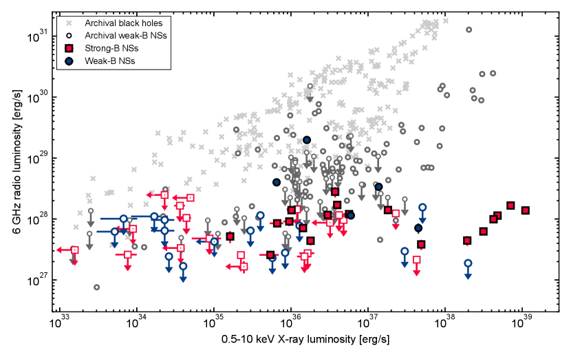
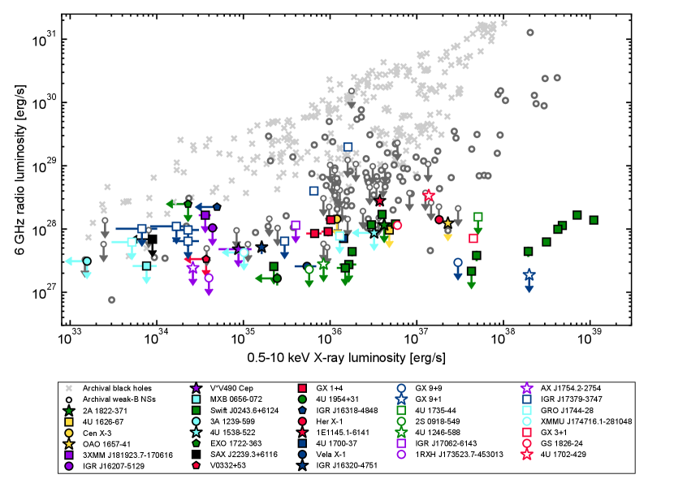
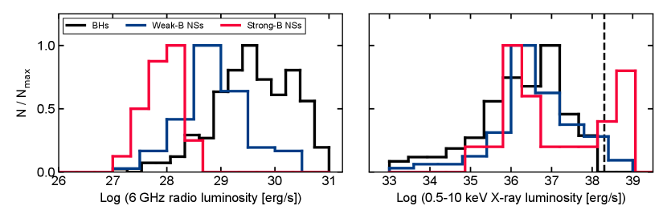
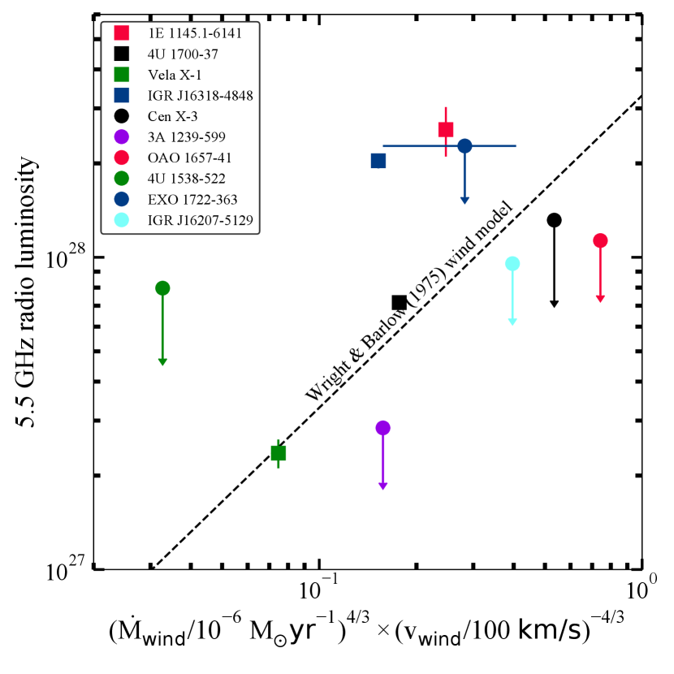
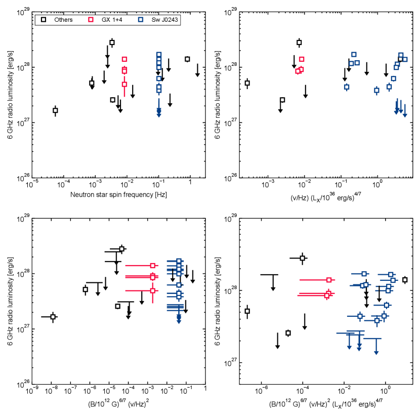
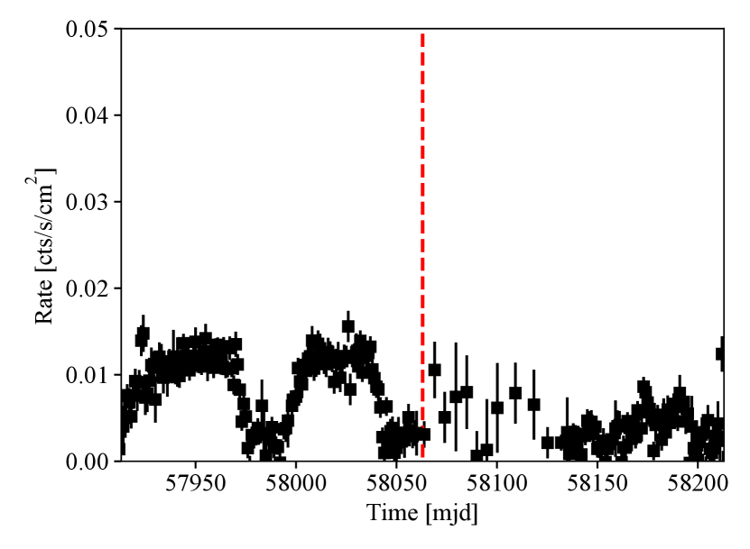
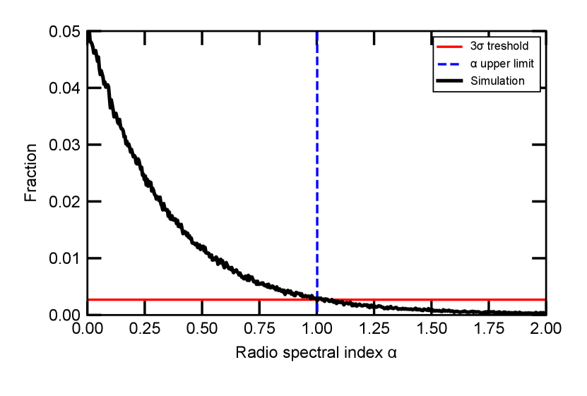
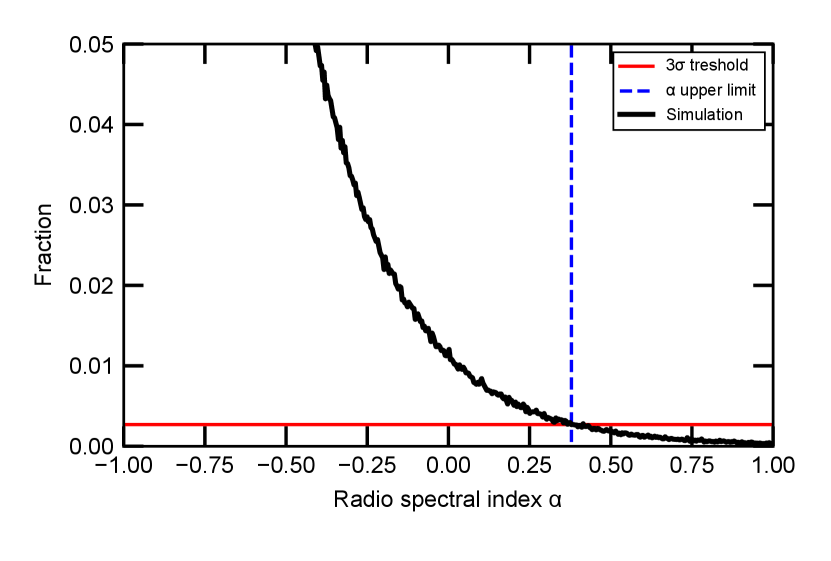

إحصاء راديوي جديد لثنائيات الأشعة السينية ذات النجوم النيوترونية
الملخص
نورد أرصادًا راديوية جديدة لعينة تضم ستة وثلاثين من ثنائيات الأشعة السينية ذات النجوم النيوترونية (NS)، بما يزيد بأكثر من الضعف حجم العينة المنشورة التي رُصدت بالحساسيات الحالية. تشمل هذه المصادر ثلاثة عشر نجمًا نيوترونيًا ضعيفَ المغنطة ( G) وثلاثة وعشرين نجمًا نيوترونيًا قويَّ المغنطة ( G). تقع ستة عشر من الفئة الأخيرة في ثنائيات أشعة سينية مرتفعة الكتلة، ولم يكن قد كُشف راديويًا منها سابقًا إلا نظامان. نكشف أربعة نجوم نيوترونية ضعيفة المغنطة وتسعة قوية المغنطة؛ وهذه الأخيرة أخفت راديويًا بصورة منهجية من الأولى ولا تتجاوز erg/s. ونؤكد بدورنا النتيجة السابقة التي تفيد بأن النجوم النيوترونية ضعيفة المغنطة تكون عادةً أخفت راديويًا من الثقوب السوداء ذات الكتل النجمية التي تتراكم عليها المادة. ومع أن التحديد غير الملتبس لأصل الانبعاث الراديوي في ثنائيات الأشعة السينية مرتفعة الكتلة أمر صعب، فإننا نجد أنه في جميع المصادر المكتشفة باستثناء مصدرين (Vela X-1 و4U 1700-37) يبدو أن الانبعاث الراديوي أرجح ارتباطًا بنفاثة منه برياح النجم المانح. ولا تُظهر عينة النجوم النيوترونية قوية المغنطة ارتباطًا عامًا بين لمعاني الأشعة السينية واللمعان الراديوي، وربما يعود ذلك إلى حدود الحساسية. ونناقش كذلك أثر دوران النجم النيوتروني ومجاله المغناطيسي في اللمعان الراديوي وقدرة النفاثة في عينتنا. ولا يستطيع أي نموذج حالي تفسير جميع الخصائص المرصودة، مما يقتضي تطوير نماذج نفاثات النجوم النيوترونية وتنقيحها بحيث تشمل شدّات مجال مغناطيسي تصل إلى G. وأخيرًا، نناقش خمود النفاثات في الحالات اللينة لثنائيات الأشعة السينية منخفضة الكتلة ذات النجوم النيوترونية، وعدم الكشف الراديوي عن جميع ثنائيات الأشعة السينية شديدة الخفوت المرصودة في عينتنا، وحملات الرصد الراديوي المستقبلية للنجوم النيوترونية التي تتراكم عليها المادة.
keywords:
التراكم: أقراص التراكم – النجوم: النجوم النيوترونية – الأشعة السينية: الثنائيات1 مقدمة
التراكم هو عملية أساسية تحدث في جميع أنحاء الكون في عدد كبير من الأجرام والظروف. وتتراوح هذه من تراكم الثقوب السوداء الهائلة في نوى المجرة النشطة (AGN) وتراكم الأقزام البيضاء، عبر الثقوب السوداء ذات الكتلة النجمية والنجوم النيوترونية في أنظمة الأشعة السينية الثنائية، إلى تكوين النجوم المحاطة بأقراص كوكبية أولية. تُظهِر جميع هذه الأنظمة الحالات التي يُلاحظ فيها أن تراكم المادة يكون مصحوبًا بتدفق مزدوج للمادة، إما في شكل رياح واسعة الزاوية وبطيئة نسبيًا و/أو نفاثات موازية وغالبًا ما تكون نسبية. تؤثر هذه التدفقات الخارجية على كل من أنظمة التراكم، على سبيل المثال المساهمة في فقدان الزخم الزاوي في تدفق التراكم وتقليل معدل التراكم الفعال (مثلاً Tetarenko et al., 2018b)، والوسط المحيط (مثلاً Gallo et al., 2005; Fabian, 2012). يُعتقد أن التغذية المرتدة من ثنائيات الأشعة السينية وAGN تساهم في التغذية المرتدة النجمية التي تنظم تكوين النجوم وتأين الكون المبكر (مثلاً Fender et al., 2005; Mirabel et al., 2011; Justham & Schawinski, 2012; Fragos et al., 2013a, b).
غالبًا ما يُعزى تشكّل النفاثات من تدفق التراكم بشكل أساسي إلى آلية واحدة أو مجموعة من آليتين. في كلا النموذجين، تعمل خطوط المجال المغناطيسي الملتوية القريبة من الجسم المضغوط على إطلاق المواد بعيدًا عن تدفق التراكم، لكن هناك اختلافًا مهمًا يكمن في أصل التواء خطوط المجال المغناطيسي. في آلية Blandford & Znajek (1977)، يتم تدوير خطوط المجال هذه أثناء ربطها مع الغلاف الجوي الدوار للثقب الأسود. أحد التنبؤات الرئيسية لهذا النموذج، والذي ظل من الصعب اختباره بشكل لا لبس فيه، هو اعتماد قدرة النفاثة على دوران الثقب الأسود (مثلاً King et al., 2013; McClintock et al., 2014; Russell et al., 2013b). وبدلاً من ذلك، نظرًا لأن العديد من أنظمة إطلاق النفاثات لا تحتوي على ثقب أسود، تقترح آلية Blandford & Payne (1982) أن الدوران التفاضلي لتدفق التراكم نفسه يؤدي إلى تشابك المجال المغناطيسي (لاحظ أنه من الطبيعي أن آلية Blandford & Payne (1982) يمكن أن تحدث أيضًا في أنظمة الثقوب السوداء). في حين أن هذا النموذج ينطبق على النجوم النيوترونية، فإنه يتنبأ بوجود حد أعلى للمجال المغناطيسي للنجوم النيوترونية التي يمكن أن تدور عن طريق تدفق التراكم. ولذلك، فإنه يتوقع أن النجوم النيوترونية ذات المجالات المغناطيسية التي تزيد عن عتبة معينة لا ينبغي أن تطلق نفاثات (مثلاً Massi & Kaufman Bernadó, 2008; Migliari, 2011).
في حين أن تدفق التراكم في ثنائيات AGN والأشعة السينية ينبعث عادةً بقوة في نطاق الأشعة السينية، فإن التدفق يهيمن على الترددات المنخفضة من خلال انبعاث إشعاع السنكروترون. ينتج هذا الانبعاث عن الإلكترونات الحرة في النفاثات التي تحلق حول خطوط المجال المغناطيسي، منتجة طيف السنكروترون (Rybicki & Lightman, 1979; Longair, 1992). يعتمد الطيف المرصود للنفاثات غير المحلولة على نوع النفاث: عادةً ما تحتوي المقذوفات المنفصلة على أطياف شديدة الانحدار في النطاق الراديوي، والتي تُعرف بالمؤشر الطيفي الراديوي (حيث ) لأنها تنبعث كمجموعة واحدة رقيقة بصريًا. بدلاً من ذلك، يُلاحظ وجود نفاثة مدمجة تتدفق بشكل مطرد على أنها تراكب لأطياف السنكروترون من مسافات مختلفة في اتجاه مجرى النهر، مما يؤدي إلى شكل طيفي مسطح () إلى شكل طيفي مقلوب () حتى تردد كسر النفاثة. ينشأ انبعاث النفاثات ذات التردد الأعلى من الإلكترونات ذات الطاقة الأعلى، والتي تقع بالقرب من قاعدة النفاثة (Markoff et al., 2001; Corbel & Fender, 2002; Markoff et al., 2005; Romero et al., 2017; Malzac, 2013, 2014)، بينما تنبعث الترددات المنخفضة أسفل النفاثة (مثلاً Blandford & Königl, 1979). يمكن أن يمتد انبعاث السنكروترون النفاث إلى دون المليمتر (Russell et al., 2014; Tetarenko et al., 2015; Díaz Trigo et al., 2018)، nIR، والبصري (Russell et al., 2006, 2007, 2013b, 2013a; Gandhi et al., 2017; Baglio et al., 2018)، وقد يساهم في نطاق الأشعة السينية عبر انبعاث كومبتون الذاتي السنكروتروني (مثلاً Markoff et al., 2005). مع وجود عدد قليل من العمليات الإشعاعية المربكة والعديد من المراصد الحساسة، فإن النطاق الراديوي مناسب بشكل خاص للدراسات النفاثة.
تُظهِر أنظمة الثقوب السوداء التي تتراكم عليها المادة في حالتها الطيفية الصلبة وجود علاقة بين الأشعة السينية واللمعان الراديوي، والتي تحمل مقادير في كتلة الثقب الأسود من ثنائيات الأشعة السينية إلى AGN، بعد دمج مصطلح حدّ معايرة الكتلة (المستوى الأساسي لنشاط الثقب الأسود) ويشير إلى الاقتران بين تدفق المادة وتدفقها الخارجي (Hannikainen et al., 1998; Corbel et al., 2000, 2003; Falcke et al., 2004; Merloni et al., 2003; Gallo et al., 2003; Plotkin et al., 2013; Gallo et al., 2014). في حين أن هذه العينة من الثقوب السوداء ذات الكتلة النجمية تهيمن عليها ثنائيات ذات مانح منخفض الكتلة () - ثنائيات الأشعة السينية منخفضة الكتلة (LMXBs) - فإنها تتضمن اثنين من ثنائيات الأشعة السينية مرتفعة الكتلة (HMXBs) التي تستضيف الثقوب السوداء (Cyg X-1) و MWC 656؛ لم يتم تضمين الثقب الأسود المرشح HMXB Cyg X-3). تتبع هذه المصادر معًا ارتباطًا مشابهًا بين الأشعة السينية واللمعان الراديوي، مما يشير إلى أن هذا الاقتران قد يكون مستقلاً عن انتقال الكتلة/النوع المانح لأنظمة الثقب الأسود (Ribó et al., 2017). وبالنظر عن كثب إلى ارتباط الأشعة السينية بالراديو للثقوب السوداء ذات الكتلة النجمية، هناك دليل على وجود مسار راديوي عالي ومسار راديوي هادئ (Soleri & Fender, 2011; Dinçer et al., 2014; Meyer-Hofmeister & Meyer, 2014; Drappeau et al., 2015). على الرغم من العديد من التفسيرات المحتملة، بما في ذلك الميل (Motta et al., 2018)، وعوامل لورنتز النفاثة المتغيرة (Soleri & Fender, 2011; Russell et al., 2015)، والأشعة السينية (Koljonen & Russell, 2019) والأشكال الطيفية الراديوية (Espinasse & Fender, 2018)، إلا أن هذه المسارات لا تزال غير مفهومة تمامًا. علاوة على ذلك، فإن الأدلة الإحصائية على وجودها لا تزال موضع نقاش (Gallo et al., 2018). يختفي الارتباط بين الأشعة السينية واللمعان الراديوي للثقب الأسود LMXBs عندما ينتقل النظام عبر الحالات المتوسطة إلى الحالة اللينة: خلال هذا التحول، تخمد النفاثات المدمجة بينما يمكن إطلاق المقذوفات السريعة (Fender et al., 2004; Russell et al., 2020)؛ عادةً ما يُعزى أي انبعاث راديوي متبقٍ أثناء الحالة اللينة إلى تلك المقذوفات، إما التي لم يتم حلها أو يتم تتبعها أثناء ابتعادها عن LMXB (مثلاً Bright et al., 2020).
1.1 تاريخ موجز لملاحظات النجوم النيوترونية النفاث
القصة أكثر تعقيدًا بالنسبة للنجوم النيوترونية. يمكن تقسيم النجوم النيوترونية ضعيفة المغنطة المتراكمة فوق % من لمعان إدينغتون () إلى فئتين بناءً على مساراتها في مخطط ألوان الأشعة السينية: مصادر Z ومصادر atoll (Hasinger & van der Klis, 1989). يُعتقد أن الفرق بين فئات المصدر هذه وفئاتها الفرعية المختلفة مدفوع بمعدل تراكم الكتلة اللحظي (Lin et al., 2009; Homan et al., 2010). تعتبر مصادر Z، المتراكمة حول حد إدينغتون، الفئة الأكثر سطوعًا راديويًا للنجوم النيوترونية المتراكمة، ولذلك تم تمييز نفاثاتها أولاً بـ (Ables, 1969; Lampton et al., 1971; Penninx et al., 1988; Penninx, 1989; Hjellming et al., 1990b, a). وجدت هذه الدراسات أنواعًا مختلفة من النفاثة على طول الفروع المختلفة في مخطط الألوان والأشعة السينية، والتي تتغير جنبًا إلى جنب مع التغيرات في خصائص تدفق التراكم: من نفاثة مدمجة إلى قاذفات منفصلة، وأخيرًا يتم الخمود عند أعلى معدلات تراكم الكتلة (على نحو مشابه نوعياً لسلوك الثقوب السوداء المفصل أعلاه؛ Migliari & Fender, 2006). جاءت الدراسات النفاثة للأشعة السينية ومصادر atoll الخافتة الراديوية لاحقًا، حيث قدم Migliari et al. (2003) أول حملة متعددة العصور للأشعة السينية والراديو لمثل هذا المصدر (4U 1728–34).
باستخدام الحساسية المعززة للتلسكوبات الراديوية الحالية، تمت دراسة النجوم النيوترونية في LMXBs على نطاق واسع حتى erg/s (أي % من حد إدنجتون لنجم نيوتروني ). تهيمن عمليات الرصد عند لمعان الأشعة السينية المنخفضة على عمليات عدم الكشف الراديوي (Tudor et al., 2017; Gallo et al., 2018; Gusinskaia et al., 2020a)، على الرغم من أنه تم اكتشاف بعض النجوم النيوترونية في هذا النظام أيضًا (على سبيل المثال SAX J1808.4-3658 وIGR J00291+5934، وصولاً إلى erg/s؛ Tudor et al., 2017). لا يزال سلوك نفاثات النجوم النيوترونية عند معدلات تراكم كتلة منخفضة غير مستكشف بشكل جيد. سؤال آخر مفتوح، بالنسبة للنفاثات الموجودة في مصادر atoll، يتعلق بوجود آلية خمود النفاثات التي تظهر في أنظمة الثقوب السوداء (Fender & Muñoz-Darias, 2016). يمكن لمصادر atoll أن تتغير (على الرغم من أن ذلك لا يحدث جميعًا) بين حالات تدفق التراكم التي يهيمن عليها الحراري والكومبتنة: حالتها اللينة والصلبة، على التوالي. تُظهِر عدة مصادر نفاثة خامدة في حالته الطيفية اللينة (Migliari et al., 2003; Miller-Jones et al., 2010; Gusinskaia et al., 2017; Díaz Trigo et al., 2018; Gusinskaia et al., 2020a)، كما يُرى في الثقوب السوداء (مثلاً Fender et al., 2004). ومع ذلك، لا تفعل مصادر أخرى ذلك (Rutledge et al., 1998; Migliari et al., 2004). أخيرًا، غالبًا ما ركزت دراسات الأشعة السينية والراديو المنسقة على النجوم النيوترونية العابر LMXBs، من أجل استكشاف معدلات التراكم المختلفة - مما أدى إلى عدم استكشاف المصادر التي تتراكم عليها المادة بشكل مستمر.
تم تقديم أول التحقيقات الشاملة للخصائص الراديوية للنجوم النيوترونية المتراكمة بواسطة Fender & Hendry (2000) وMigliari & Fender (2006). منذ ذلك الحين، تمت إضافة العديد من النجوم النيوترونية الفردية المتراكمة إلى مستوى لمعان الأشعة السينية واللمعان الراديوي؛ راجع التجميعات التي قام بها Tetarenko et al. (2016) وGallo et al. (2018)، وللحصول على أحدث قاعدة بيانات، Bahramian et al. (2018)11 1 https://github.com/bersavosh/XRB-LrLx_pub. تحتوي كل هذه المصادر - كل من مصادر atoll وZ - على نجوم نيوترونية ضعيفة المغنطة (على سبيل المثال G)، حيث يمكن تطبيق آلية Blandford & Payne (1982). كعينة، فإن هذه النجوم النيوترونية ضعيفة المغنطة تكون خافتة راديوياً بعامل قدره مقارنة بالثقوب السوداء ذات الكتلة النجمية - وهو اختلاف لا يمكن تفسيره ببساطة عن طريق الاختلاف في كتلة التراكم، أو تصحيحات الأشعة السينية البوليمترية، أو وجود طبقة حدودية حول النجوم النيوترونية (Fender & Kuulkers, 2001; Gallo et al., 2018). في التحليل الإحصائي الذي أجراه Gallo et al. (2018)، تُظهر هذه المصادر تشتتًا مشابهًا لمجموعات الثقب الأسود، على افتراض أن الأخير يتبع مسارًا واحدًا.
والفرق الرئيسي بين الثقوب السوداء التي تتراكم عليها المادة والنجوم النيوترونية - فيما يتعلق بتشكّل النفاثات - هو وجود سطح نجمي صلب في الأخير. يأتي هذا مع اختلافات إضافية، مثل المجالات المغناطيسية المثبتة ودوران الجسم المضغوط الذي يمكن قياسه عبر نبضات النجوم النيوترونية. كما هو موضح من خلال نبضات الأشعة السينية المكتشفة في مجموعة فرعية من النجوم النيوترونية التي تتراكم عليها المادة، يمكن لمجالاتها المغناطيسية أن تغير ديناميكيًا هندسة تدفق التراكم الداخلي، من حيث يتم إطلاق النفاثات. يمكن قياس المجالات المغناطيسية للنجم النيوتروني مباشرة من خلال الكشف عن خاصية تشتت الرنين السيكلوتروني (ويشار إليها فيما يلي بخطوط السيكلوترون؛ انظر Staubert et al., 2019, لمراجعة حديثة). بدلا من ذلك، وبشكل غير مباشر، يمكن قياس نصف قطر القرص الداخلي واستخدام ذلك لتقييد المجال المغناطيسي (Cackett et al., 2008; Degenaar et al., 2017; Ludlam et al., 2019)، أو لتقييد قوة المجال المغناطيسي من العلاقة بين تطور الدوران ومعدل تراكم الكتلة (مثلاً Ghosh & Lamb, 1978; Campana et al., 2002; Strohmayer et al., 2018b). يتم قياس دوران النجوم النيوترونية مباشرة من خلال نبضات الأشعة السينية أو التذبذبات شبه المتماسكة أثناء الانفجارات النووية الحرارية على سطحها (Patruno & Watts, 2012; Staubert et al., 2019).
على الرغم من عقود من الدراسات الراديوية، لم يتم اكتشاف النفاثات حتى وقت قريب في النجوم النيوترونية قوية المغنطة. أفاد عدد من دراسات العينات بين 1970s و2000s فقط عن عدم اكتشافات (Duldig et al., 1979; Nelson & Spencer, 1988; Fender & Hendry, 2000; Migliari & Fender, 2006; Migliari et al., 2011b)، في حين أن الكشف الراديوي لنجم الأشعة السينية النابض HMXB GX 301-2 بواسطة Pestalozzi et al. (2009) يمكن أن يعزى إلى الانبعاث الراديوي من الرياح النجمية. من المعروف أن النجوم النيوترونية الشاب ثنائي الأشعة السينية، Cir X-1 (Heinz et al., 2013)، يطلق نفاثات قوية (Stewart et al., 1993; Fender et al., 1998; Tudose et al., 2006; Heinz et al., 2007; Soleri et al., 2009; Coriat et al., 2019). ومع ذلك، على الرغم من الادعاءات بوجود مجال مغناطيسي قوي (انظر، على سبيل المثال. Schulz et al., 2020)، لم يتم قياس شدة مجاله بشكل مباشر. شكلت سلسلة عدم الاكتشافات الراديوية للنجوم النيوترونية القوية أيضًا الأساس للتفكير النظري من Massi & Kaufman Bernadó (2008)، موضحًا سبب عدم عمل آلية Blandford & Payne (1982) في نظام المجال المغناطيسي هذا.
ومؤخرًا، تم رصد أول نفث من نجم نيوتروني قوي المغناطيسية، على عكس هذا التوقع النظري (van den Eijnden et al., 2018a). أطلق النجم النابض للأشعة السينية البطيء (فترة دوران تتجاوز ثانية) Swift J0243.6+6124، الذي يتراكم من نجم Be (Kouroubatzakis et al., 2017)، نفثًا خلال ما يسمى بثورانه العملاق في 2017/2018، وأثناء إعادة إشراق الأشعة السينية في تسوس الانفجار (van den Eijnden et al., 2019). في حين أنه من غير المتوقع إطلاق هذه النفاثة عبر آلية Blandford & Payne (1982)، إلا أنه لا يزال من غير المعروف ما هي العملية البديلة التي قد تكون مسؤولة. بالإضافة إلى ذلك، تم اكتشاف النجوم النيوترونية القوية المغنطة Her X-1 وGX 1+4 في الراديو (van den Eijnden et al., 2018b, c)، على الرغم من أن أصل هذا الانبعاث لم يُعزى بشكل قاطع إلى النفاثات. تم اكتشاف جميع المصادر الثلاثة عند كثافات تدفق راديوي باهتة أقل من Jy، وهو ما يفسر عدم الكشف الراديوي لفئة المصدر هذه في العقود السابقة.
1.2 مساحة معلمة ممتدة لنفاثات النجوم النيوترونية
إن إدراج النجوم النيوترونية ذات المغناطيسية القوية في فئة مصادر إطلاق النفاثات، يوسع بشكل كبير فضاء المعلمات لدراسة (النجوم النيوترونية) النفاثات. أولاً، بالإضافة إلى النطاق الأكبر للمجال المغناطيسي للنجم النيوتروني، يمكن الآن الوصول إلى نطاق دوران أكبر بكثير: في حين أن النجوم النيوترونية ضعيفة المغنطة تظهر دورانًا في نطاق المللي ثانية (Patruno et al., 2017)، فإن نظيراتها قوية المغنطة تصل إلى آلاف الثواني (Staubert et al., 2019). ثانيًا، إن جميع النجوم النيوترونية المؤكدة في HMXBs، عندما تُقاس، تكون قوية المغنطة22 2 لاحظ أن العكس غير صحيح: فليست كل النجوم النيوترونية قوية المغنطة تمتلك مرافقين عاليي الكتلة. بل إن حفنة منها إما تقيم في LMXBs، أو تتراكم المادة عليها من الرياح النجمية لنجوم منخفضة الكتلة متطورة في مدارات واسعة ضمن ثنائيات الأشعة السينية التكافلية (SyXRBs)، أو تمتلك مانحًا متوسط الكتلة.، ذات مجالات مغناطيسية نموذجية من الرتبة G. لذلك، تستكشف هذه الأنظمة نطاقًا أوسع بكثير من أنواع النجوم المانحةة، والفترات الثنائية، والانحرافات المركزية، وآليات نقل الكتلة، مما لا يمكن الوصول إليه إلا من خلال النجوم النيوترونية ضعيفة المغنطة. نظرًا لأن الغالبية العظمى من HMXBs تحتوي على نجم نيوتروني، فإن استكشاف تأثير هذه الخصائص الثنائية والنجم المانح على تشكّل النفاثات كان أيضًا بالكاد ممكنًا باستخدام أنظمة الثقوب السوداء.
وفي الوقت نفسه، يمكن أن يكون فك تشابك أصول الانبعاث الراديوي في HMXBs أكثر تعقيدًا. غالبًا ما يُفترض تلقائيًا أن الانبعاثات الراديوية التي لم يتم حلها من ثقب أسود ذو كتلة نجمية أو نجم نيوتروني ضعيف المغناطيسي مع مانح منخفض الكتلة تنشأ من نفاثة. في الأنظمة ذات الكتلة العالية للنجم المانح، يمكن للرياح النجمية للنجم المانح أن تساهم أيضًا في انبعاث الراديو. أظهرت الدراسات التي أجريت على عمالقة O/B المعزولين ونجوم Be-stars أنها بواعث راديوية (Lamers, 1998a, b; Güdel, 2002)، مما يعني أنه لا يمكن تجاهل رياح النجم المرافق عند تفسير الانبعاث الراديوي من HMXBs: اعتمادًا على خصائص مثل معدل فقدان الكتلة، والتكتل، والكثافة، يمكن أن تظهر إما انبعاث راديوي حراري (Bremsstrahlung) أو غير حراري (صدمة) (Wright & Barlow, 1975; Blomme & Runacres, 1997; Dougherty & Williams, 2000). يمكن أن تؤدي هذه العمليات إلى لمعان راديوي يصل إلى عدة مرات erg/s في النطاق C، حيث تتم دراسة النفاثات غالبًا، اعتمادًا على خصائص الرياح الدقيقة (انظر القسم 4.2.1 لمزيد من التفاصيل والمناقشة). إن تقدير خصائص الرياح المطلوبة لتفسير الكشف الراديوي في HMXB، والحصول على عمليات رصد راديوية وأشعة سينية (متعددة) منسقة، ويفضل أن يكون ذلك مع قيود طيفية أو استقطابية، هي أدوات مهمة لتمييز الرياح النجمية عن النفاثات.
في حين أنه أصبح من الممكن الآن الوصول إلى مساحة معلمة أكبر للدراسات النفاثة من حيث قوة المجال المغناطيسي للنجم النيوتروني وتردد الدوران، إلا أنه لا يزال من غير الواضح ما هو النموذج الذي يمكن أن يفسر وجود النفاثات مثل التي لوحظت في Swift J0243.6+6124. النماذج المحتملة، بما في ذلك النفاثات المدفوعة بخطوط مجال النجوم النيوترونية المفتوحة (Parfrey et al., 2016) أو المراوح المغناطيسية (Romanova et al., 2009)، تتنبأ عادةً باعتماد قدرة النفاثة على المجال المغناطيسي وتردد الدوران. تم إجراء عمليات بحث عن مثل هذه التبعيات سابقًا لعينات من النجوم النيوترونية ضعيفة المغنطة (Migliari et al., 2011b)، أو عينات تشمل النجوم النيوترونية والثقوب السوداء (King et al., 2013). ومع ذلك، كانت هذه الدراسات غير حاسمة أو غير قادرة على العثور على أدلة قوية لهذه العلاقات، ويرجع ذلك جزئيًا إلى مدى الدوران المحدود الذي تغطيه النجوم النيوترونية ضعيفة المغنطة (Patruno et al., 2017). ومع وجود عينة من النجوم النيوترونية تتضمن عددًا كافيًا من المصادر ذات المغناطيسية القوية، والتي تدور ببطء، يمكن إعادة النظر في مثل هذه الدراسات وتوسيع نطاقها - بافتراض وجود آلية إطلاق نفاثات مشتركة عبر العينة بأكملها.
نقدم في هذا البحث دراسة تفصيلية لمجموعة كبيرة من الأرصاد الراديوية وأرصاد الأشعة السينية الجديدة للنجوم النيوترونية التي تتراكم عليها المادة. تشتمل عينتنا على 13 هدفًا ضعيف المغنطة و23 هدفًا قوي المغنطة، أي أكثر من ضعف العدد الإجمالي للنجوم النيوترونية في مستوى لمعان الأشعة السينية واللمعان الراديوي المرصودة بالحساسيات الراديوية الحالية. وقد أُبلغ عن النتائج الأولية للعينة ضعيفة المغنطة في Gallo et al. (2018, والتي شملت، في المجموع، 41 نجمًا نيوترونيًا)، بينما نقدم هنا تحليل البيانات الكامل وأحدث النتائج. وبفضل هذه المجموعة الكبيرة من الأرصاد الجديدة، نقدم أول دراسة منهجية للفروق بين نفاثات النجوم النيوترونية ضعيفة وقوية المغنطة حيث توجد مصادر مكتشفة من كلتا الفئتين، ونهدف إلى تقييد آلية تشكّل نفاثات النجوم النيوترونية رصديًا.
2 الملاحظات وتحليل البيانات
في هذا القسم، سنقدم أولاً عينة من ثنائيات الأشعة السينية ذات النجوم النيوترونية المرصودة وحملات الرصد بالأشعة الراديوية والأشعة السينية. في القسمين 2.2 و2.3، سنقدم مقدمة عامة عن تقليل وتحليل عمليات رصد الراديو والأشعة السينية، على التوالي. نظرًا للعدد الكبير من المصادر التي تم تحليلها والتنوع الكبير في إعداد كل من حملات الراديو والأشعة السينية، فإننا نناقش جميع التفاصيل لكل مصدر في المواد التكميلية عبر الإنترنت.
2.1 حملات الأهداف والمراقبة
تتكون عينة الأهداف المقدمة في هذه الورقة من 13 نجوم نيوترونية ذات مجال مغناطيسي ضعيف و23 نجوم نيوترونية ذات مجال مغناطيسي قوي، حيث نحدد المجالات المغناطيسية الضعيفة والقوية بـ G و G، على التوالي. بالنسبة لمعظم مصادر المجال المغناطيسي القوي، يوفر اكتشاف خط السيكلوترون قياسات مباشرة وقوية للمجال المغناطيسي (مثلاً Staubert et al., 2019). بالنسبة للأهداف المتبقية في هذه الفئة، من خلال مزيج من دوران النجوم النيوترونية (التطور) والمقارنات مع النجوم النابضة البطيئة ذات شدة المجال المقاسة، تم استنتاج مجالاتها المغناطيسية القوية (على الرغم من عدم إجراء قياس فعلي). من ناحية أخرى، بالنسبة للنجوم النيوترونية المتراكمة ضعيفة المغنطة، لا تتوفر قياسات المجال المغناطيسي المباشر. بدلاً من ذلك، فإن القياسات غير المباشرة المستندة إلى التحليل الطيفي الانعكاسي (Cackett et al., 2008; Degenaar et al., 2017; van den Eijnden et al., 2018d; Ludlam et al., 2019)، ونمذجة تطور تردد الدوران (Patruno, 2012)، وحالات المروحة المغناطيسية (مثلاً Mukherjee et al., 2015) تشير إلى مجالات مغناطيسية نموذجية بين و G. في الجدول 2 من المواد التكميلية عبر الإنترنت، قمنا بإدراج قياسات وتقديرات المجال المغناطيسي لجميع المصادر، إلى جانب دورانها وفترة دورانها، عندما معروف. نريد التأكيد مرة أخرى على أن قياسات المجال هذه يمكن أن تكون غير مؤكدة إلى حد ما وتتأثر بتأثيرات منهجية - ومن هنا تصنيفنا الواسع في المجالات المغناطيسية الضعيفة والقوية.
تم تضمين ملاحظات جميع مصادر المجال المغناطيسي الضعيف باستثناء واحد - IGR J17379-3747 - في التحليل الإحصائي للنجم النيوتروني LMXBs بواسطة Gallo et al. (2018). ومع ذلك، ركز هذا العمل فقط على خصائص العينة الشاملة دون التركيز على الأنظمة الفردية. علاوة على ذلك، لم تتضمن تفاصيل حول تحليل بيانات الراديو والأشعة السينية، والتي يتم عرضها في هذه الورقة. إلى عينة الأدبيات المقارنة، أضفنا أيضًا الملاحظات المنشورة مؤخرًا لنجمين نيوترونيين ضعيفي المغناطيسية: IGR J16597-3704 (Tetarenko et al., 2018a) وIGR J17591-2342 (Russell et al., 2018; Gusinskaia et al., 2020b)، بالنسبة للأخير بافتراض مسافة kpc التي أبلغ عنها Kuiper et al. (2020). نظرًا لحداثة الاكتشافات الراديوية للنجوم النيوترونية قوية المغنطة، قمنا في العينة المدروسة بتضمين الملاحظات القليلة المنشورة مؤخرًا لمثل هذه المصادر: الاكتشافات الراديوية لـ GX 1+4 (van den Eijnden et al., 2018b) وHer X-1 (van den Eijnden et al., 2018c)، والرصد متعدد العصور لـ Swift J0243.6+6124 (van den Eijnden et al., 2019).
نظرة عامة على جميع المصادر، مقسمة على أساس المجال المغناطيسي للنجم النيوتروني، موضحة في الجدولين 1 و2. تغطي هذه المصادر فئات مصادر مختلفة ومتداخلة: تشمل النجوم النيوترونية الثلاثة عشر ضعيفة المغنطة (i) مصادر atoll؛ (2) تراكم النجوم النابضة للأشعة السينية بالميلي ثانية (AMXPs)، التي تستضيف نجمًا نيوترونيًا تكشف نبضات الأشعة السينية عن دوران يبلغ عدة مئات من هرتز (Patruno et al., 2017)؛ ’3‘ أنظمة الأشعة السينية الثنائية فائقة الصغر (UCXBs)، وهي أنظمة ذات فترة مدارية أقل من ساعة واحدة؛ و (4) ثنائيات الأشعة السينية الخافتة جدًا (VFXBs)، حيث ينبعث النجوم النيوترونية باستمرار تحت erg/s (Wijnands & Degenaar, 2016). في فئة VFXB، قمنا بتضمين المصدر شبه الثابت XMMU J174716.1-281048، والذي كان من المحتمل أن يكون نشطًا بشكل مستمر بين 2003 و2011 (انظر مثلاً Degenaar et al., 2011) ولكن لم يتم اكتشافه في الأشعة السينية أثناء عمليات الرصد الراديوية 2014 المذكورة في هذا العمل. تعالج فئات المصادر الأربعة هذه حالات علمية مختلفة وغير مستكشفة نسبيًا: الخصائص النفاثة للنجم النيوتروني LMXBs التي تتراكم باستمرار (i وiii)، أو تكون في الحالة اللينة (i)، أو تكون خافتة من الأشعة السينية (ii، iii، و iv). نلاحظ، أخيرًا، أن عينة المصدر الخاصة بنا لا تتضمن أي مصادر Z: نظرًا لسطوعها الراديوي، فقد تمت دراسة هذه المصادر بالتفصيل سابقًا، ولن يساهم نهج هذا العمل في عدد فردي أو صغير من الملاحظات لكل مصدر بشكل كبير في فهمهم. ومن ثم، قررنا عدم إجراء ملاحظات على مثل هذه الأهداف، ونظرًا لعدم وجود نتائج مراقبة جديدة، فلن نناقش فئة المصدر هذه بمزيد من التفصيل في هذا العمل.
تشتمل النجوم النيوترونية قوية المغنطة (الجدول 2) على مرشح واحد واثنين من ثنائيات الأشعة السينية التكافلية المؤكدة، حيث يتراكم النجم النيوتروني من الرياح النجمية لنجم مانح متطور منخفض الكتلة في مدار واسع؛ وثلاثة LMXBs (أحدها UCXB)؛ وثنائي أشعة سينية متوسط الكتلة واحد (IMXB)؛ وستة عشر HMXBs. واستنادًا إلى نوع النجم المانح، تُصنّف الأخيرة إما كثنائيات Be/X-ray (BeXRBs)، أو كثنائيات أشعة سينية ذات عملاق فائق (SgXBs). وللاطلاع على الفروق بين هذه الفئات، انظر Reig (2011). وأخيرًا، يُشار إلى 3A 1239-599 ببساطة باسم HMXB لأن فئته الفرعية غير معروفة. وقد استُهدفت مصادر هذه الفئة أساسًا لدراسة خصائص النفاثات غير المفهومة جيدًا في النجوم النيوترونية قوية المغنطة، ولاستكشاف أثر آليات انبعاث راديوي أخرى، مثل رياحها النجمية. أما BeXRBs الأربعة الجديدة (أي جميعها باستثناء Swift J0243.6+6124) فقد استُهدفت تحديدًا لاستقصاء خصائصها الراديوية عند معدلات تراكم منخفضة جدًا، قريبة من أنظمة المروحة الخاصة بها أو داخلها.
تتضمن الفئة الأخيرة أيضًا GRO J1744-28، المعروف باسم النجم النابض المتفجر: LMXB حيث يمتلك النجوم النيوترونية تردد دوران متوسط يبلغ 2.1 هرتز (Cui, 1997)، مما يجعله يقع إلى حد ما بين فئتي المصدر. من المحتمل أن يكون مجاله المغناطيسي أقل مما يُرى عادةً في الأنظمة ذات الممغنطة القوية (على سبيل المثال G): باستخدام طرق مختلفة، يُزعم أنه يقع بين و G (Cui, 1997; Rappaport & Joss, 1997; Bildsten et al., 1997; Degenaar et al., 2014; Younes et al., 2015). في هذه الورقة البحثية، قمنا بإدراجه في فئة المجال المغناطيسي القوي، على الرغم من أن هذا التصنيف في النهاية لا يؤثر على استنتاجاتنا بشكل كبير: كما هو موضح في النتائج الأولية التي نشرتها Russell et al. (2017)، لم يتم اكتشاف النجم النابض المتفجر عند الترددات الراديوية، مع حد أعلى غير مقيد نسبيًا بسبب قربه من مركز المجرة.
حيثما أمكن، استخدمنا قياسات المنظر من Gaia إصدار البيانات المبكر 3 (Gaia Collaboration et al., 2020) لتقييد المسافة. وقد تم ذلك بالنسبة للمصادر حيث (1) النظير Gaia المكتشف لديه (2) قياس اختلاف المنظر الإيجابي مع (3) نسبة الإشارة إلى الضوضاء أكبر من ثلاثة. لتقييم تأثير اختيار السابق في تحويل اختلاف المنظر إلى مسافة، قمنا بعد ذلك بمقارنة المسافات المستنتجة من السابقات في Atri et al. (2019) (لـ Galactic LMXBs)، Bailer-Jones et al. (2018)، وBailer-Jones et al. (2020). لقد وجدنا أن هذه العناصر متسقة مع الأخطاء وتستخدم Atri et al. (2019) مسبقًا في التحليل. بالنسبة للمصادر التي لم يتم فيها استخدام Gaia، بحثنا في الأدبيات الخاصة بقياسات المسافة بدلاً من ذلك. أخيرًا، نلاحظ أن استخدام مسافات الأدب (غير Gaia) لجميع المصادر لا يغير الاستنتاجات الرئيسية لهذا العمل.
2.2 نظرة عامة على تحليل البيانات الراديوية
تم إجراء عمليات الرصد الراديوي لعينة النجوم النيوترونية باستخدام مصفوفة Karl G. Jansky كبيرة جدًا (المشار إليها فيما بعد بـ VLA) لمعظم المصادر ذات الانحرافات أعلى من ، ومصفوفة التلسكوب الأسترالي المدمجة (ATCA) للأهداف الجنوبية المتبقية (الانحرافات السلبية). كان ATCA في تكوينات 6 الأكثر امتدادًا خلال جميع الحملات، بينما قام VLA بتغيير التكوين بين الملاحظات. جميع مجموعات البيانات الأولية متاحة للجمهور تحت رموز البرنامج VLA 13A-352، 14A-163، 17B-136، 17B-406، 17B-420، SD0134، 18A-456، و18B-104، وATCA برامج C3108، C3184، C3243، وCX379 (انظر الجدول 1 في المواد التكميلية عبر الإنترنت).
لوضع علامة على الملاحظات ومعايرتها وتصويرها، استخدمنا الحزمة Common Astronomy Software Application (casa؛ McMullin et al., 2007) v4.7.2. لقد قمنا بإزالة RFI باستخدام مجموعة من إجراءات وضع العلامات التلقائي والفحص البصري. لقد أجرينا التصوير باستخدام مهمة clean متعددة المقاييس والترددات المتعددة، مع ضبط معلمة Briggs القوية على الحقل المستهدف من أجل موازنة الحساسية والارتباك. قمنا بعد ذلك بتركيب غاوسي بيضاوي الشكل بنصف أقصى عرض كامل يساوي حجم الحزمة المركبة للملاحظة باستخدام مهمة casa imfit. قمنا بقياس تباين الجذر المتوسط التربيعي على منطقة قريبة خالية من المصادر في حالة اكتشاف الهدف، أو على المنطقة المستهدفة في حالة عدم الكشف. وفي الحالة الأخيرة، قمنا بتعيين الحد الأعلى إلى ثلاثة أضعاف قياس RMS هذا. يتم إدراج التفاصيل الخاصة بالهدف، مثل تكوين VLA والمعاير الأولي والثانوي وأحجام الشعاع، لكل مصدر في الجدول 1 من المواد التكميلية عبر الإنترنت.
بالنسبة لمجموعة فرعية من النجوم النيوترونية، تم تسجيل البيانات على ترددين. في تلك الحالات، قمنا بحساب المؤشر الطيفي الراديوي ، حيث ، بين النطاقين. ويتم تقدير الخطأ في من خلال انتشار حالات عدم اليقين في كثافات التدفق الراديوي المقاسة عند كل تردد، باستخدام عمليات محاكاة مونت كارلو. في حالة اكتشاف انبعاث راديوي في نطاق التردد الأدنى فقط (2 المصادر)، فإننا نتبع نهج مونت كارلو الخاص بـ van den Eijnden et al. (2019) لتقدير الحد الأعلى للمؤشر الطيفي. بالنسبة لهذه المصادر، نعرض الأرقام التشخيصية لهذه الطريقة في القسم 4 من المواد التكميلية عبر الإنترنت. في هذا العمل، سوف نشير إلى المؤشرات الطيفية السلبية والإيجابية كأطياف شديدة الانحدار ومقلوبة، على التوالي.
2.3 نظرة عامة على تحليل بيانات الأشعة السينية
قمنا بقياس تدفقات الأشعة السينية غير الممتصة لأهدافنا باستخدام الملاحظات المدببة لـ Neil Gehrels Swift Observatory (Swift Gehrels et al., 2004) أو مراقبة الملاحظات باستخدام Monitor of All-Sky X-ray Image/Gas Slit Camera (MAXI/GSC Matsuoka et al., 2009). يمكن العثور على تفاصيل حول تحليل الأشعة السينية لكل مصدر، مثل الملاحظات المستخدمة ومعلمات الملاءمة الطيفية، في القسم الثاني من المواد التكميلية عبر الإنترنت. كنا نهدف إلى استخدام الملاحظات التي تم التقاطها في نفس يوم الرصد الراديوي؛ وفي الحالات التي لم تكن فيها مثل هذه الملاحظات موجودة، استخدمنا أقرب ملاحظة للأشعة السينية في الوقت المناسب. في تلك الحالات، استخدمنا مراقبة الأشعة السينية على المدى الطويل، جنبًا إلى جنب مع المقاييس الزمنية النموذجية لتغيرات الحالة، للتأكد من أن المصدر لم يغير حالته أو تدفق الأشعة السينية بشكل كبير حول الرصد الراديوي. لقد استخدمنا بشكل تفضيلي ملاحظات تلسكوب الأشعة السينية المدببة Swift، إما قياس التدفق مباشرة من الطيف، أو للمصادر الخافتة جدًا التي تحول معدل العد أو الحد الأعلى لمعدل العد إلى التدفق. يتم إجراء هذه التحليلات Swift في النطاق – keV. عندما لم تتوفر ملاحظات محددة، قمنا بقياس التدفق من الطيف (متعدد الأيام) MAXI (المزود بين 2 و10 keV) أو قمنا بتحويل معدل العد المكتشف MAXI 2-10 keV إلى تدفق. للجميع المصادر التي لم يتم اكتشافها بشكل منهجي في MAXI، تأكدنا من إجراء عمليات المراقبة Swift.
من أجل تحويل معدلات العد Swift أو MAXI إلى تدفقات غير ممتصة، استخدمنا الأداة webpimms33 3 https://heasarc.gsfc.nasa.gov/cgi-bin/Tools/w3pimms/w3pimms.pl. عندما كان المصدر في حالة ذات طيف أشعة سينية نموذجي ومعروف، استخدمنا الأدبيات لنمذجة الطيف المستخدم في تحويل معدل العد. بخلاف ذلك، استخدمنا تحويل Crab بعد قياس NuSTAR لطيف Crab بواسطة Madsen et al. (2017). لاحظ أنه سواء تم افتراض/تركيب نموذج طيفي (انظر أدناه) أو تم استخدام طيف Crab، فإننا نستخدم التدفق الكامل ولا نحاول التمييز بين المكونات الطيفية المختلفة؛ راجع (Miller et al., 2012) لدراسة حيث يتم أخذ هذه التأثيرات في الاعتبار.
تم حساب جميع التدفقات المقاسة في نطاق – keV؛ ومن ثم، نلاحظ أننا قمنا باستقراء النموذج الملائم لأطياف MAXI وصولاً إلى طاقات أقل، مما قد يؤدي إلى زيادة عدم اليقين في قياس التدفق بسبب الامتصاص بين النجوم. على الرغم من وجود اختلافات في شكل طيف الأشعة السينية بين LMXBs وHMXBs، فقد استخدمنا نفس نطاق الطاقة لتمكين المقارنة المباشرة بين فئات المصدر ومع الأدبيات. قمنا بتركيب أطياف الأشعة السينية باستخدام xspec v.12.10.1 (Arnaud, 1996)، مع ضبط وفرة ISM والمقاطع العرضية على Wilms et al. (2000) وVerner et al. (1996)، على التوالي. نظرًا لأن بعض الأطياف تحتوي على أعداد قليلة، فقد استخدمنا إحصائيات C للعثور على أفضل (Cash, 1979) مناسبًا. تم تصميم جميع الأطياف بثلاثة نماذج، تجمع بين الامتصاص بين النجوم (tbabs) وقانون القوة و/أو نماذج الجسم الأسود: tbabs*powerlaw، tbabs*bbodyrad، وtbabs*(powerlaw + bbodyrad). لقد اخترنا النموذج الأكثر ملاءمة من النموذجين السابقين، استنادًا إلى أقل إحصائية للاختبار، ثم قمنا بمقارنتها بالنموذج الأخير المدمج باستخدام اختبار f. لقد اخترنا النموذج المدمج إذا كان اختبار f يفضله باحتمال على النموذج الأحادي المكون الأكثر ملاءمة. أخيرًا، قمنا بقياس التدفق وعدم اليقين من خلال ربط النموذج المحدد بـ cflux. في حين أن هذا النهج ظاهري، فإنه يكفي لقياس تدفق الأشعة السينية حتى بالنسبة للملاحظات ذات الأعداد المنخفضة من إجمالي الأعداد.
بالنسبة لرصدين راديويين، لم تكن معلومات الأشعة السينية من المراقبة أو الملاحظات المدببة متاحة في وقت قريب بما فيه الكفاية، مقارنة بالمقياس الزمني النموذجي للمصدر للتقلبات وانتقالات الحالة. كانت هذه الملاحظات هي الرصد الراديوي الثانية لـ GX 1+4 والرصد الراديوي الثانية لـ 4U 1954+31. تم اكتشاف الأول في الراديو خلال هذه الحقبة، بينما لم يتم اكتشاف الأخير. ونظرًا لنقص بيانات الأشعة السينية، فإننا لا ندرج هذه الملاحظات في مخططات لمعان الأشعة السينية الراديوية لاحقًا في هذه الورقة.
3 نتائج
ندرج جميع المصادر وكثافات التدفق الراديوي وتدفقات الأشعة السينية في الجداول 1 (المصادر 13 ضعيفة المغنطة) و2 (المصادر 23 قوية المغنطة). من بين الفئة ضعيفة المغنطة، تم اكتشاف نظير راديوي لأربعة أهداف لأول مرة: مصادر atoll المستمرة GX 3+1، GS 1826-24، و4U 1702-429، وAMXP IGR J17379-3747. من 23 النجوم النيوترونية القوية المغنطة، تم الكشف عن تسعة مصادر: ثنائيات الأشعة السينية التكافلية GX 1+4 و4U 1954+31، ثنائي الأشعة السينية متوسط الكتلة Her X-1، الأشعة السينية العملاقة الثنائيات 1E 1145.1-6141، 4U 1700-37، Vela X-1، IGR J16318-4848 وIGR J16320-4751، وثنائي Be/X-ray Swift J0243.6+6124. تم الإبلاغ بالفعل عن الاكتشافات الراديوية للأخير وHer X-1 (van den Eijnden et al., 2018c, a) ولكننا قمنا بإدراجها لأنه لم تتم مقارنتها بعينة أكبر من النجوم النيوترونية قوية المغنطة حتى الآن. تم أيضًا تقديم GX 1+4 قبل (van den Eijnden et al., 2018b)، لكننا هنا نضيف ثلاثة اكتشافات أخرى في عمليات رصد جديدة عند ترددات مراقبة مختلفة.

في الشكل 1، نعرض مستوى لمعان الأشعة السينية واللمعان الراديوي لثنائيات الأشعة السينية للثقب الأسود والنجوم النيوترونية، من أجل البحث عن الاقتران بين تدفق التراكم الذي ينبعث من الأشعة السينية والنفاثات الباعثة راديويًا. في الوقت الحالي، لا نحاول بعد التمييز بين المصادر التي يُعزى فيها الانبعاث الراديوي بشكل واضح إلى نفاثة، أو العمليات الأخرى التي قد تساهم في ذلك؛ راجع القسم 4 لإجراء مناقشة مستفيضة حول هذا الموضوع. تظهر المصادر المضافة حديثًا من عينتنا لكل فئة مجال مغناطيسي كنقاط بيانات زرقاء (مجال مغناطيسي ضعيف) وحمراء (مجال مغناطيسي قوي). قمنا في الأصل بتجميع عينة المقارنة، الموضحة بتقاطعات رمادية للثقوب السوداء ودوائر سوداء للنجوم النيوترونية، للدراسة الإحصائية في Gallo et al. (2018)، وأكملناها بنجمين نيوترونيين تم اكتشافهما منذ ذلك الحين (انظر القسم 2.1). ونحن نؤكد أن عينة المقارنة هذه لا تشمل مصادر atoll ذات الحالة اللينة، في حين أن عينتنا ضعيفة المغنطة تتضمن ذلك. نحن نرسم اللمعان الراديوي -GHz، والذي حسبناه من خلال تقدير كثافة التدفق عند -GHz، أي أولاً باستخدام الشكل الطيفي حيثما كان معروفًا أو بافتراض طيف راديوي مسطح. ثم قمنا بحساب ، حيث GHz وD هي المسافة إلى المصدر. يتم حساب جميع لمعان الأشعة السينية بطريقة مماثلة في النطاق 0.5-10 keV باستخدام ، حيث هو تدفق الأشعة السينية المقاس وغير الممتص.
نلاحظ بإيجاز أنه في مستوى لمعان الأشعة السينية والراديو، فإننا نرسم فقط الأخطاء الإحصائية على كلا السطوعين. الافتراضات الأساسية، على سبيل المثال الطيف المسطح لعمليات الرصد أحادية التردد، وقضايا مثل عدم تزامن الملاحظات، والشكوك المتعلقة بالمسافات، والأخطاء في معايرة التدفق المطلق، تسبب شكوكًا منهجية في هذه المقارنات. نحن لا ندرج تلك الموجودة في الأشكال 1 و2 لأن عينة الأدبيات تستخدم بالمثل الأخطاء الإحصائية فقط وهذه الأنظمة النظامية يصعب تقييدها بدقة. ومع ذلك، ينبغي للمرء أن يضع وجودها في الاعتبار عند تفسير مخططات لمعان الأشعة السينية الراديوية.
من الشكل 1، يتضح على الفور أنه تم اكتشاف عدد قليل فقط من النجوم النيوترونية في النطاق الراديوي تحت لمعان الأشعة السينية البالغ إرج/ث. على العكس من ذلك، فوق erg/s، فإن معظم عمليات الرصد الراديوي للنجوم النيوترونية المتراكمة تؤدي إلى اكتشاف عند الحساسيات الحالية. كما تمت مناقشته بالتفصيل في القسم 5.1، لا يصل أي من النجوم النيوترونية قوية المغنطة إلى ما فوق إرج/ث، بشكل مستقل عن لمعان الأشعة السينية. هذا الحد الأقصى الخافت للمعان الراديوي - الموافق Jy لمسافة نموذجية تبلغ كيلو فرسخ فلكي - يفسر سبب بقاء هذه المصادر غير مكتشفة في حملات المراقبة السابقة عند حساسية راديوية أقل (Duldig et al., 1979; Nelson & Spencer, 1988; Fender & Hendry, 2000).

في الشكل 2، نعرض مرة أخرى مستوى لمعان الأشعة السينية والراديو، ولكن الآن نقوم بتسمية كل مصدر في عينتنا بشكل فردي. تتوافق العلامات المملوءة مع المصادر ذات المغناطيسية القوية، بينما تظهر العلامات المفتوحة نجومًا نيوترونية ضعيفة المغنطة. يكشف عرض المصادر الفردية كيف يتم السيطرة على العينة قوية المغنطة، خاصة فوق erg/s ( لنجم نيوتروني)، بواسطة Swift J0243.6+6124: العابر النشط الوحيد HMXB في عينتنا وبالتالي HMXB الوحيد الذي يتمتع بتغطية راديوية عبر عدة رتب مقدار في لمعان الأشعة السينية (van den Eijnden et al., 2019). عند نهاية لمعان الأشعة السينية الخافتة للمخطط ( erg/s)، من الواضح أنه لا يوجد أي من الأربعة VFXBs (1RXH J173523.7-453013، AX J1754.2-2754، XMMU J174716.1-281048، وIGR J17062-6143) والأربعة الباهتة تم اكتشاف BeXRBs (V*V490 Cep، MXB 0656-072، SAX J2239.3+6116، V0332+53) في نطاق الراديو، على الرغم من ملاحظات VLA الحساسة. وبالمثل، لم يتم الكشف عن أي من UCXBs في عينتنا (2S 0918-549، 4U 1246-588، 4U 1626-67، ومرة أخرى، IGR J17062-6143) عند ترددات الراديو، بغض النظر عن مجالاتها المغناطيسية. في الماضي، تم اكتشاف مصادر في فئتي VFXB وUCXB عند سطوع مماثل للأشعة السينية (Miller-Jones et al., 2011; Bogdanov et al., 2018; Bahramian et al., 2018; Li et al., 2020)، في حين لم يتم اكتشاف مثل هذه الأشعة السينية الخافتة BeXRBs.
في عينة المصادر في الشكل 2، قد يتم إغفال نقطتين دقيقتين بسهولة. لذلك، نشير إليها بوضوح هنا: أولاً، تم اكتشاف نجمين نيوترونيين قويي المغناطيسية، SyXRBs 4U 1954+31 وHMXB IGR J16318-4848، فقط في الراديو وليس في الأشعة السينية. ثانيًا، نرسم لمعان الأشعة السينية المكتشفة لـ 2A 1822-371؛ ومع ذلك، من المحتمل أن يُنظر إلى هذا المصدر بميل عالٍ، مما يتسبب في حجب التدفق الداخلي؛ قد يتجاوز لمعان الأشعة السينية الجوهرية حد إدينغتون (Burderi et al., 2010; Bak Nielsen et al., 2017)، مما سينقلها إلى erg/s.

كما ذكرنا سابقًا، لم يتم اكتشاف النجوم النيوترونية قوية المغنطة عند لمعان راديوي أعلى من erg/s. لمقارنة هذا اللمعان الراديوي المحدود بالنجوم النيوترونية الأخرى والثقوب السوداء، نعرض رسمًا بيانيًا طبيعيًا للمعان الراديوي لثنائيات الأشعة السينية المكتشفة في الشكل 3 (اللوحة اليسرى؛ لاحظ أننا نرسم كل الاكتشافات، بما في ذلك المضاعفات من نفس المصدر). نحن لا نجري أي اختيارات في لمعان الأشعة السينية. ومن الواضح من الرسم البياني للمعان الراديوي، كما لوحظ عدة مرات في الأدبيات، أن النجوم النيوترونية بشكل عام تكون أكثر خفوتًا من الثقوب السوداء التي تتراكم عليها المادة (Fender & Kuulkers, 2001; Migliari & Fender, 2006; Gallo et al., 2018). ومع ذلك، يبدو أيضًا أن النجوم النيوترونية قوية المغنطة تكون بشكل منهجي أكثر خفوتًا راديويًا من النجوم النيوترونية ضعيفة المغنطة. في الواقع، فإن اختبار كولموجوروف-سميرنوف الذي يقارن عينات النجوم النيوترونية القوية والضعيفة المغنطة يُرجع قيمة p تبلغ لفرضية أن كلاهما مستمدان من نفس التوزيع الأساسي. وبدلاً من ذلك، يجد اختبار Anderson-Darling باستمرار (نلاحظ أن هذا الحد يرجع إلى تنفيذ هذا الاختبار في python/scipy: تتجاوز إحصائيات الاختبار المُقاسة بشكل كبير القيمة الحرجة المقابلة لـ ).
نلاحظ أنه يمكن تقديم التحيز من خلال الاختلافات في توزيع لمعان الأشعة السينية، حيث قد تهيمن على فئات المصدر الثلاثة المختلفة لمعانات مختلفة في الأشعة السينية، وتترجم في لمعان راديوي سائد مختلف في حالة وجود اقتران بين كليهما (انظر مثلاً Gallo et al., 2018, لمناقشة مفصلة). لتقييم هذا التأثير، نعرض أيضًا الرسوم البيانية لمعان الأشعة السينية لكل فئة مصدر في اللوحة اليمنى. ورغم وجود اختلافات في التوزيعات، إلا أنها تعتبر طفيفة مقارنة بالاختلافات في اللمعان الراديوي. في الواقع، الاختلاف الرئيسي الوحيد هو الذروة عند لمعان الأشعة السينية الفائقة إدنجتون للمصادر ذات الممغنطة القوية، والتي تُعزى بالكامل إلى Swift J0243.6+6124. ومع ذلك، فإن هذا الاختلاف يؤكد فقط على الضعف الراديوي المذهل للنجوم النيوترونية القوية المغنطة: يجب أن تؤدي ذروة إدنجتون الفائقة في الأشعة السينية إلى تحويل توزيع اللمعان الراديوي للمصادر قوية المغنطة إلى قيم أعلى، إذا أظهرت هذه المصادر أشعة سينية تشبه الثقب الأسود - اقتران راديوي (بدون أقصى لمعان راديوي ظاهري). بمعنى آخر، النجوم النيوترونية قوية المغنطة هي نجوم خافتة راديوياً، على الرغم من هيمنة الأشعة السينية الساطعة Swift J0243.6+6124 في العينة HMXB.
| Weak magnetic field neutron stars | ||||||||
| Source name | Source type | Epoch | Radio | Radio flux | Spectral | X-ray flux | X-ray | distance |
| freq. [GHz] | density [Jy] | index | [erg/s/cm2] | obs. | [kpc] | |||
| GX 9+9 | Atoll (soft) | 9.0 | MAXI | 5.0a | ||||
| GX 9+1 | Atoll (soft) | 9.0 | MAXI | 5.0b | ||||
| GX 3+1 | Atoll (soft) | 9.0 | MAXI | 6.1c | ||||
| GS 1826-24 | Atoll (hard) | 9.0 | MAXI | 5.0d | ||||
| 4U 1702-429 | Atoll (soft) | 5.5 | Swift | 5.4e | ||||
| 9.0 | ||||||||
| 4U 1735-44 | Atoll (hard) | 5.5 | MAXI | 8.5f | ||||
| 9.0 | ||||||||
| 2S 0918-549 | UCXB | 5.5 | Swift | 4.0g | ||||
| 9.0 | ||||||||
| 4U 1246-588 | UCXB | 5.5 | Swift | 4.3h | ||||
| 9.0 | ||||||||
| IGR J17062-6143 | UCXB / AMXP / VFXB | 5.5+9 | Swift | 7.3i | ||||
| XMMU J174716.1-281048 | VFXB | 10 | Swift | 8.4j | ||||
| 1RXH J173523.7-354013 | VFXB | 10 | Swift | 9.5k | ||||
| AX J1754.2-2754 | VFXB | 10 | Swift | 9.2l | ||||
| IGR J17379-3747 | AMXP | 1 | 4.5 | Swift | 8.0m | |||
| 7.5 | ||||||||
| 2 | 4.5 | Swift | ||||||
| 7.5 | ||||||||
| 3 | 4.5+7.5 | Swift | ||||||
| 4 | 4.5+7.5 | Swift | ||||||
| 5 | 4.5+7.5 | Swift | ||||||
| 6 | 4.5+7.5 | Swift | ||||||
| 7 | 4.5+7.5 | Swift | ||||||
| Strong magnetic field neutron stars | ||||||||
| Source name | Source type | Epoch | Radio | Radio flux | Spectral | X-ray flux | X-ray | distance |
| freq. [GHz] | density [Jy] | index | [erg/s/cm2] | obs. | [kpc] | |||
| GX 1+4 | SyXRB | 1 | 10 | MAXI | 4.3a | |||
| 2 | 4.5 | – | – | |||||
| 7.5 | ||||||||
| 3 | 4.5 | MAXI | ||||||
| 7.5 | ||||||||
| 4 | 4.5 | MAXI | ||||||
| 7.5 | ||||||||
| 4U 1954+31 | SyXRB | 1 | 4.5+7.5 | – | Swift | 3.3b | ||
| 2 | 4.5+7.5 | – | – | – | ||||
| 3XMM J181923.7-170616 | SyXRB candidate | 5.5 | – | Swift | 8c | |||
| 9 | ||||||||
| 2A 1822-371 | LMXB | 5.5 | – | MAXI | 7.0b | |||
| 9 | ||||||||
| 4U 1626-67 | LMXB / UCXB | 5.5 | – | MAXI | 8d | |||
| 9 | ||||||||
| Her X-1 | IMXB | 9 | MAXI | 7.1b | ||||
| 1E1145.1-6141 | SgXB | 5.5 | MAXI | 8.3b | ||||
| 9 | ||||||||
| Cen X-3 | SgXB | 5.5 | – | MAXI | 6.9b | |||
| 9 | ||||||||
| 3A 1239-599 | HMXB* | 5.5 | – | Swift | 4e | |||
| 9 | ||||||||
| OAO 1657-41 | SgXB | 5.5 | – | MAXI | 6.4f | |||
| 9 | ||||||||
| 4U 1538-522 | SgXB | 5.5 | – | MAXI | 5.8b | |||
| 9 | ||||||||
| 4U 1700-37 | SgXB | 5.5 | Swift | 1.5b | ||||
| 9 | ||||||||
| EXO 1722-363 | SgXB | 5.5 | – | Swift | 8g | |||
| 9 | ||||||||
| Vela X-1 | SgXB | 5.5 | MAXI | 1.97b | ||||
| 9 | ||||||||
| IGR J16207-5129 | SgXB | 5.5 | – | Swift | 6.1g | |||
| 9 | ||||||||
| IGR J16318-4848 | SgXB | 5.5 | Swift | 3.6g | ||||
| 9 | ||||||||
| IGR J16320-4751 | SgXB | 5.5 | Swift | 3.5g | ||||
| 9 | ||||||||
| V*V490 Cep | qBeXRB | 10 | – | Swift | 7.5b | |||
| MXB 0656-072 | qBeXRB | 10 | – | Swift | 5.7b | |||
| SAX J2239.3+6116 | qBeXRB | 10 | – | Swift | 7.3b | |||
| V 0332+53 | qBeXRB | 10 | – | Swift | 5.57b | |||
| GRO J1744-28 | LMXB | 1 | 5.5+9 | Swift | 4–8h | |||
| 2 | 5.5+9 | Swift | ||||||
| Swift J0243.6+6124 | BeXRB | Data taken from van den Eijnden et al. (2018a) and van den Eijnden et al. (2019) | ||||||
4 أصل الانبعاث الراديوي من النجوم النيوترونية التي تتراكم عليها المادة
4.1 مقارنة ثنائيات الأشعة السينية منخفضة الكتلة ومرتفعة الكتلة
عادةً ما يُعزى الانبعاث الراديوي الذي لوحظ في فص روش المتدفق LMXBs - سواء كان ثقبًا أسودًا أساسيًا أو نجمًا نيوترونيًا ضعيف المغناطيسية - إلى عمليات السنكروترون في التدفق النسبي (مثلاً Corbel et al., 2000; Dhawan et al., 2000; Stirling et al., 2001; Fender et al., 2004; Migliari & Fender, 2006; Gallo et al., 2018). تحتوي عيناتنا من النجوم النيوترونية الضعيفة والقوية على 16 LMXBs: جميع النجوم النيوترونية ضعيفة المغنطة، بالإضافة إلى النجوم النابضة البطيئة 2A 1822-371، 4U 1626-67، وGRO J1744-28 (هنا، نتجاهل SyXRBs، والتي تحتوي على مانح منخفض الكتلة ولكنها تتراكم المادة عليها من الرياح النجمية (انظر القسم 4.4). من بين هذه الستة عشر، تم الكشف عن أربعة مصادر (على سبيل المثال الجدول 1): مصادر atoll GX 3+1، GS 1826-24، و4U 1702-429، وAMXP IGR J17379-3747. تتلاءم أشكالها ومواقعها الطيفية الراديوية على مخطط لمعان الأشعة السينية مع تحديد النفاثات لتراكم النجوم النيوترونية، بما يتوافق مع عينة أكبر من المصادر في الأدبيات (Russell et al., 2013b; Gallo et al., 2018). في المصادر غير المكتشفة، يمكن عادةً أن تُعزى عدم الاكتشافات إلى حالتها الطيفية أو لمعان الأشعة السينية الخافت. للحصول على مناقشة تفصيلية، نحيل القارئ إلى القسم 5.3، حيث سنعلق على المصادر الفردية (المكتشفة وغير المكتشفة).
يعد تحديد مصدر الانبعاث الراديوي أقل وضوحًا بالنسبة لثنائيات الأشعة السينية ذات الكتلة العالية والتكافلية. وكما أشير في المقدمة، فإن هذه المصادر أكثر تعقيدًا لسببين: أولاً، تطلق النجوم المانحة لها رياحًا نجمية يمكن أن تساهم في التدفق الراديوي المكتشف عبر آليات مختلفة. ثانيًا، لم يتم استكشاف الخصائص النفاثة للنجوم النيوترونية قوية المغنطة بشكل جيد، وبالتالي فإن الأدبيات الموجودة لا تقدم سوى القليل من دراسات المقارنة. في ما تبقى من هذا القسم، سنراجع ستة خيارات لأصل الانبعاث الراديوي: الانبعاث من النجم المانح نفسه، والانبعاث من الرياح النجمية وتفاعلها مع المكونات الأخرى للنظام الثنائي، والعمليات المتماسكة، والانبعاث من الجريان الخارجي البطيء والمفتوح على نطاق واسع من آلية من النوع المروحة، والنفاثات النسبية.
يمكن استبعاد ثلاثة خيارات مباشرة. في حين أن النجوم تنبعث في نطاق الراديو، إلا أن هذا الانبعاث يُرى عادةً في النجوم ذات الكتلة المنخفضة النشطة إكليليًا (النوع F أو الأحدث). بالإضافة إلى ذلك، تصل هذه النجوم إلى أقصى سطوع للأشعة السينية يبلغ erg/s، وهو أقل من لمعان الأشعة السينية لأهدافنا المكتشفة (Guedel & Benz, 1993; Güdel, 2002; Kurapati et al., 2017). ثانيًا، تدفق الغاز البطيء والمفتوح على مصراعيه مدفوعًا بآلية من النوع المروحة المغناطيسية، كما رأينا على سبيل المثال في محاكاة التراكم على النجوم الممغنطة (النيوترونية) بواسطة Romanova et al. (2009) وParfrey et al. (2017)، غير مرجح بالمثل: كما تمت مناقشته أيضًا في القسم 5.2، لم يكن أي من أهدافنا المكتشفة لاسلكيًا موجودًا في نظام المروحة أثناء عمليات الرصد.
ثالثًا، تم استنتاج العمليات المتماسكة للانبعاث الراديوي لأنواع الأقزام البيضاء المغناطيسية التراكم (مثلاً Barrett et al., 2017, انظر أيضًا القسم 4.3). من غير المرجح أن تعمل هذه العمليات، أي مازر الإلكترون السيكلوتروني أو انبعاث الجيروسينكروترون، في الأنظمة التي تم تناولها هنا: أولاً، يرتبط انبعاث مازر الإلكترون السيكلوتروني بمستويات عالية (%) من الاستقطاب الدائري. في حين أن ملاحظات ATCA التي تمت دراستها هنا لم يتم إعدادها لقياس الاستقطاب الدائري، فإن دراسات VLA السابقة لـ Her X-1 وGX 1+4 وSw J0243، لم تظهر أي استقطاب دائري (مثلاً van den Eijnden et al., 2018b). ثانيًا، من المتوقع أن يُظهر انبعاث الجيروسينكروترون مستويات أقل من الاستقطاب. مثل هذا الانبعاث سينشأ من المغناطيسفير للنجم النيوتروني. ومع ذلك، في التراكم النشط HMXBs، لا يتجاوز نصف قطر المغناطيسفير، بالنسبة لمعلمات النجوم النيوترونية المعقول ومعدل تراكم الكتلة، (Tsygankov et al., 2017). بالمقارنة، فإن الحد الأدنى النموذجي لحجم الانبعاث الراديوي المكتشف أعلى بمقدار أمرين تقريبًا (انظر القسم 4.3 والمعادلة 3).
4.2 رياح النجوم المانحة الضخمة وتفاعلاتها؟
4.2.1 الرياح النجمية
تمت دراسة الرياح النجمية وخصائص انبعاثها على نطاق واسع لكل من النجوم الفردية والثنائية في العقود الماضية (انظر مثلاً Lamers, 1998a, b; Güdel, 2002; van Loo, 2007, والمراجع الواردة فيه). من خلال عمليات الرصد الراديوية وIR، يمكن استنتاج خصائص الرياح الأساسية مثل معدل فقدان الكتلة والسرعة النهائية، وفحص ردود الفعل النجمية وتأثيرها على تطور النجوم. عادةً ما يُعزى انبعاث راديو الرياح إلى إحدى عمليتين للانبعاث: إما انبعاث Bremsstrahlung الحراري من الغاز المتأين في الريح، أو الانبعاث غير الحراري من الصدمات في الريح الخارجية. كما هو موضح بواسطة Wright & Barlow (1975)، من المتوقع أن يكون للانبعاث الحراري مؤشر طيفي راديوي إيجابي ()، وهو ما يتم ملاحظته غالبًا في نجوم O المعزولة (مثلاً van Loo, 2007). تخلق الصدمات غير الحرارية محليًا أطيافًا شديدة الانحدار، أي ذات مؤشرات طيفية سلبية . ولكن، مع الأخذ في الاعتبار أن الصدمات تضعف وتصل إلى ذروتها عند الترددات المنخفضة أثناء ابتعادها عن النجم، فإن طيفها التراكمي للنجوم المنفردة له أيضًا مؤشر طيفي إيجابي (Dougherty & Williams, 2000; van Loo, 2007).
ومع ذلك، فقد تم قياس المؤشرات الطيفية السلبية في العديد من الرياح النجمية القادمة من النجوم ذات الكتلة العالية. في تلك الحالات، يُعتقد أن هذه الأنظمة هي أنظمة ثنائية (ضخمة)، ويتم ملاحظة الصدمة بين الريحتين النجميتين (التي لا تتحرك نحو الخارج كما هو الحال مع نجم واحد) (Moran et al., 1989; Churchwell et al., 1992; Dougherty et al., 1996; Dougherty & Williams, 2000; Williams et al., 1997; Chapman et al., 1999; Contreras et al., 1997; Ortiz-León et al., 2011; Blomme & Volpi, 2014; Blomme et al., 2017). وفي النهاية القصوى، حيث يكون كلا النجمين من نجوم النوع المبكر/ وولف رايت ذات الرياح القوية، تُلاحظ هذه المصادر كثنائيات رياح متصادمة، وهي مصادر معروفة للأشعة السينية وانبعاث الراديو غير الحراري (مثلاً Dubus, 2013).
بالنسبة لانبعاث الرياح الحرارية، يمكن تقدير كثافات التدفق الراديوي المتوقعة باستخدام الشكلية المشتقة من Wright & Barlow (1975, لاحظ كيف تم استخلاص نتائج مماثلة في نفس الوقت تقريبًا بواسطة و ). بناءً على تردد المراقبة ، ودرجة حرارة الإلكترون ، ومعدل فقدان كتلة الرياح، ومتوسط الوزن الذري لكل إلكترون ، وسرعة الرياح النهائية ، والمسافة ، يمكننا تقدير كثافة التدفق على النحو التالي:
| (1) |
من المعروف أن رياح النجوم الضخمة متكتلة، وهذا يؤثر في مظهرها الرصدي. غير أن درجة التكتل تتناقص مع الابتعاد عن النجم، ومن ثم يكون الانبعاث الراديوي أقل تأثراً بهذه الآثار. ونتيجة لذلك يمكننا تطبيق الصياغة أعلاه، التي وُضعت للبلازما الملساء (Puls et al., 2006). وتكون درجة حرارة السطوع لهذه الرياح الحرارية عادة في حدود - K (Longair, 1992)؛ ومع ذلك، فحتى مع دقة مكانية شبيهة بـ VLBI، لا تكون أي من HMXBs المستهدفة ساطعة بما يكفي لرفض فرضية الرياح الحرارية اعتماداً على حجة الحد الأدنى لدرجة حرارة السطوع (انظر أيضاً القسم 6). أما بالنسبة إلى الانبعاث غير الحراري المصَدوم، فمن الأصعب التنبؤ بسطوعه، لكن توجد قيود رصدية عليه.
تم الحصول على مثل هذه القيود الرصدية على الانبعاث الراديوي للرياح النجمية (في النجوم الفردية والثنائية) من خلال العديد من الدراسات. بالنسبة لمقارنتنا، فإن الدراسات الأكثر صلة بالموضوع هي دراسات العمالقة الخارقين OB. تم إجراء الدراسة الأكثر تقييدًا وحساسية من هذا النوع مؤخرًا باستخدام ATCA وALMA، مع مراقبة العنقود النجمي Westerlund 1 (Fenech et al., 2018; Andrews et al., 2019). تقع في kpc (Clark et al., 2019) تقريبًا، وتستضيف Westerlund 1 ما لا يقل عن 100 OB supergiants (Negueruela et al., 2010). ومع ذلك، في ظل الحساسيات الحالية، تم اكتشاف سبعة فقط من تلك النجوم (أي نسبة قليلة على الأكثر) عند ترددات GHz. يكشف الجمع بين عمليات الرصد ATCA وALMA أن جميع العمالقة العملاقة OB المكتشفة راديويًا لها أطياف شديدة الانحدار، مما يشير إلى أنها من المحتمل أن تكون أنظمة نجمية ثنائية (Andrews et al., 2019). لذلك، ذكر Andrews et al. (2019) أنه في ظل الحساسيات الحالية، ”لا يتوقعون اكتشاف أي انبعاث من بواعث الرياح النجمية الحرارية البحتة في الراديو”. الأهم من ذلك، أن هذه النتائج تشير إلى أنه من الصعب اكتشاف الانبعاث الراديوي الصادر عن عمالقة OB المنفردة، وقد يكون من الممكن التنبؤ به بشكل مبالغ فيه، على سبيل المثال، من خلال الشكليات Wright & Barlow (1975).
تركز دراسات ويسترلوند 1، وفي الواقع جميع الدراسات الإذاعية عن النجوم الضخمة في الأدبيات العلمية، على النجوم الفردية والثنائية الضخمة وغير المتحللة. وبالمثل، لم يتم تطوير نموذج Wright & Barlow (1975) للنجوم الضخمة في ثنائيات الأشعة السينية، ولكن للنجوم الضخمة الفردية. ولذلك، فإن هذا النموذج لا يشمل تأثير الأشعة السينية المنبعثة من تدفق التراكم على خصائص الرياح النجمية، واللمعان الراديوي الناتج عنها. ومع ذلك، فإن الصورة التي رسمتها المقارنة بين Westerlund 1 وتنبؤات النموذج، تتناسب مع نتائجنا على العمالقة OB مع رفيق نجم نيوتروني. نعرض ذلك بيانيًا في الشكل 4: نرسم اللمعان الراديوي المقاس (الحدود العليا) كدالة لمعدل فقدان كتلة الرياح وسرعتها كما هو محدد في المعادلة 1، إلى جانب علاقتهما وفقًا لتلك المعادلة. في حساباتنا، نتجاهل الطبيعة المتكتلة للرياح في HMXBs (Martínez-Núñez et al., 2017; Grinberg et al., 2015, 2017) للأسباب التي نوقشت أعلاه.

كما هو واضح من الشكل 4، أربعة مصادر من HMXBs غير المكتشفة (Cen X-3، 3A 1239-599، OAO 1657-41، IGR J16207-5129) كان ينبغي اكتشافها بالنظر إلى حساسية ATCA، وخصائص الرياح النجمية، المسافة، ومعادلات لانبعاث راديو الرياح الحرارية. المصدر الخامس، EXO 1722-363، سيكون أعلى من حد الاكتشاف، في حين أن الباقي غير المكتشف SgXBs بعيد جدًا بحيث لا يمكن اكتشاف الرياح. إن عدم الكشف عن المصادر الخمسة المذكورة أعلاه يدعم فكرة أن العمالقة OB هي أكثر خفوتًا راديويًا مما هو عليه في تقدير رايت & بارلو البسيط ويصعب اكتشافها في الراديو، إلا إذا كانت في أنظمة ثنائية نجمية (وليست أشعة سينية).
يمكن للمرء أن يفكر في سيناريو يكون فيه التنبؤ النظري الزائد الواضح لكثافة التدفق الراديوي للنجوم المنفردة في ويسترلوند 1 ناتجًا عن التأين غير الكامل. ومع ذلك، نظرًا لدرجات حرارة النجوم O/B، يبدو هذا التفسير غير مرجح. علاوة على ذلك، في التقديرات الثنائية للأشعة السينية أعلاه، افترضنا أن معدل فقدان الكتلة الأدبية يتوافق تمامًا مع المواد المتأينة. وبمقارنة الراديو غير المكتشف مع HMXBs المكتشف في عينتنا، لا نجد فرقًا منهجيًا في لمعان الأشعة السينية أو الفترة المدارية؛ ولذلك، فإننا لا نتوقع بالضرورة وجود اختلاف منهجي في درجة تأين الرياح بالأشعة السينية. ومن ثم، فإننا نتوقع أنه حتى لو كان التأين الجزئي للرياح يمكن أن يفسر عدم اكتشافها الراديوي، فيجب أن يكون هذا الاحتمال موجودًا أيضًا بالنسبة للأنظمة المكتشفة راديويًا والتي سيتم مناقشتها أدناه.
في عينتنا، تم الكشف عن خمسة ثنائيات أشعة سينية عملاقة باستخدام ATCA. بالنسبة لاثنين من هذه المصادر (1E 1145.1-6141، IGR J16318-4848)، تتنبأ خصائص نجميهما المانحين (الرياح) بكثافة تدفق راديوي أقل بكثير من المستويات المكتشفة، بافتراض أن الرياح مؤينة بالكامل (على سبيل المثال الشكل 4). من بين هؤلاء، IGR J16318-4848 فقط له شكل طيفي قد يتوافق مع انبعاث الرياح النجمية (). تم اكتشاف 4U 1700-37 عند لمعان راديوي أعلى قليلاً مما كان متوقعًا، على الرغم من أن عدم اليقين المنهجي في هذه المقارنة قد يفسر هذا الاختلاف. بالنسبة للمصدر الرابع، IGR J16320-4751، لا توجد خصائص معروفة للرياح، مما يمنع تقدير كثافة التدفق. بالنسبة لـ Vela X-1، تتوافق تقديرات كثافة التدفق والمؤشر الطيفي مع وصف Wright & Barlow (1975). لذلك، نستنتج أنه بالنسبة لـ Vela X-1 و4U 1700-37، قد يكون للرياح النجمية مساهمة كبيرة في الانبعاث المرصود (مرة أخرى مع التحذير من صعوبة اكتشاف الرياح الحرارية بالنسبة للعمالقة العملاقة OB)، بينما من المحتمل أن تساهم بشكل أقل في المصادر الأخرى المكتشفة. يمكن العثور على جميع التفاصيل المتعلقة بهذه التقديرات في القسم الثالث من المواد التكميلية عبر الإنترنت.
4.2.2 صدمات الرياح الداخلية
هل يمكن للرياح النجمية أن تتفاعل مع رياح النجم النابض، مسببة الانبعاث الراديوي المرصود؟ من المفترض بشكل شائع أنه في الأنظمة المتراكمة، يتم قمع آلية النجم النابض الراديوي حيث يمتلئ المغناطيسفير بمواد متأينة، مما يعني عدم إطلاق رياح النجم النابض. ومع ذلك، مع أخذ ذلك في الاعتبار، يمكننا مقارنة الخصائص الراديوية للمصادر ذات المغناطيسية القوية في عينتنا بإيجاز مع الأنواع المعروفة من الأنظمة التي يتفاعل فيها النجم النابض والرياح النجمية. على سبيل المثال، الصدمات بين الرياح النجمية والرياح النابضة، مماثلة لتلك الموجودة في الثنائيات النجمية مما يؤدي إلى مؤشرات طيفية سلبية في انبعاث راديو الرياح، يمكن أن تحدث في الأنظمة الثنائية حيث لا يحدث أي تراكم. في مثل هذه الأنظمة، تخلق هذه الصدمة انبعاثًا غير حراري يهيمن على الطيف من أشعة الراديو إلى أشعة جاما (Dubus, 2013). نظرًا لأن توزيع الطاقة الطيفية لهذه الأنظمة يبلغ ذروته فوق 1 MeV، فيشار إليها باسم ثنائيات الأشعة . لا يُعرف سوى عدد قليل من ثنائيات الأشعة حتى الآن (Paredes & Bordas, 2019; Corbet et al., 2019). لا يوجد أي من المصادر المكتشفة لدينا عبارة عن مرشحات ثنائية للأشعة ؛ في الواقع، فإن اللمعان الراديوي النموذجي لثنائيات الأشعة هو بمرتين من حيث الحجم أكبر (انظر مثلاً Dubus, 2013) من الحد الأقصى الظاهر للضوء الراديوي للنجم النيوتروني HMXB البالغ erg/s الذي نجده في نتائجنا.
تُعد ثنائيات الأشعة مثالاً على تفاعل صَدمي بين رياح النجم النابض والمادة المحيطة؛ ويمكن رؤية صدمات مشابهة في سُدُم رياح النجوم النابضة (PWNe)، وهي أنظمة تتفاعل فيها رياح نجم نيوتروني معزول نابض مع مادة مستعر أعظم محيطة أو مع الوسط بين النجمي. ويمكن للرياح المغناطيسية من الإلكترونات والبوزيترونات النسبية أن تحمل معظم الطاقة المفقودة في تباطؤ دوران النجم النابض (Rees & Gunn, 1974; Michel, 1982; Kennel & Coroniti, 1984). ويمكن كشف الصدمة عبر انبعاث سنكروتروني راديوي حين تدور الإلكترونات حول خطوط المجال المغناطيسي. وإذا تجاهلنا مرة أخرى، لغرض المقارنة، الافتراض الشائع بأن النجوم النيوترونية التي تتراكم عليها المادة لا تطلق رياحاً نابضة، فيمكننا طرح السؤال الآتي: هل يمكن أن يعمل تفاعل مشابه في HMXBs، مولداً نسخة أضعف من PWN أو نسخة أخفض شدة من ثنائيات الأشعة المتطرفة، لتفسير اكتشافاتنا الراديوية؟ تأتي أكثر القيود كمية من الشكل الطيفي الراديوي. وتُظهر PWNe عادة أطيافاً راديوية على هيئة قانون قوة بمؤشر (Weiler & Panagia, 1978; Gaensler et al., 2000). أما أفضل القيود الطيفية في عينتنا من HMXBs (أي Vela X-1، و4U 1700-37، وIGR J16318-4848) فتُظهر بدلاً من ذلك .
يمكن لطاقة الصدمات أيضًا أن توفر قيودًا. من الصعب التنبؤ باللمعان الراديوي لصدمة نظام فردي، حيث تمتد الطاقة الدورانية لمجموعة النجوم النابضة المعزولة على نطاق واسع (على سبيل المثال – erg/s; Gaensler et al., 2000)، ويمكن أن يتراوح الجزء المنقول إلى انبعاث راديوي بين PWNe. علاوة على ذلك، عند تراكم النجوم النيوترونية ذات المغناطيسية القوية، يتم تنظيم تطور تردد النبض من خلال التفاعلات مع تدفق التراكم. ولذلك، فإن قياس فترة الدوران ومشتقاتها لا يُترجم إلى تقدير لطاقة الدوران، كما هو الحال بالنسبة للنجوم النابضة المعزولة. ومع ذلك، باستخدام قياسات المجال المغناطيسي والدوران، يمكن للمرء تقدير ما ستكون عليه طاقة الدوران المقابلة في غياب التراكم (تجاهل تأثيرات التراكم على قوة حوض المجال المغناطيسي، على سبيل المثال، الدفن). بافتراض أن كتلة NS تبلغ ونصف قطرها كم، يمكن للمرء الجمع بين طاقة الدوران السفلية وتقدير المجال المغناطيسي لاشتقاق:
| (2) |
بالنسبة للمصادر في عينتنا، نجد نطاقًا واسعًا من القيم بين erg/s إلى erg/s، مع ستة مصادر فقط تتداخل مع الحد الأدنى لتوزيع مجموعة PWNe. والأهم من ذلك، أنه لا توجد فروق منهجية بين الأهداف المكتشفة لاسلكيًا والأهداف غير المكتشفة، وبالنسبة لخمسة من المصادر السبعة المكتشفة حيث يُعرف كل من و، فإن أقل بكثير من اللمعان الراديوي المرصود. لذلك، تعارض اعتبارات الطاقة وجود مساهمات من الصدمات داخل الثنائية. كما نؤكد مرة أخرى أن هذه المقارنة لا تصمد إلا في حالة إطلاق النجوم النيوترونية التي تتراكم عليها المادة لرياح النجوم النابضة، وهو أمر لا يُفترض عادةً.
يتبقى لدينا أربعة مصادر مكتشفة قوية المغنطة لم نناقشها بعد في هذا السياق؛ بالنسبة إلى Swift J0243.6+6124، تم استبعاد الرياح بواسطة van den Eijnden et al. (2018a, 2019)، بناءً على لمعانها وتغيرها الطيفي والتغيرات في هاتين الخاصيتين خلال الانفجار العملاق للمصدر في 2017/2018. ثانيًا، X-1 لها مانح متوسط الكتلة، فائض من فص روش، والذي لا يطلق رياحًا نجمية قوية. ولذلك، فمن غير المرجح أن يعزى الانبعاث الراديوي في هذا النظام إلى مثل هذه الآلية. أخيرًا، رصدنا واكتشفنا نجمين SyXRBs، حيث يتراكم النجم النيوتروني من الرياح النجمية لمتبرع متطور منخفض الكتلة. نظرًا لاختلاف خصائص الرياح لهذه المصادر مقارنة بـ HMXBs، فإننا نراجعها بشكل منفصل في القسم 4.4.
4.3 نفاثات نسبية من النجوم النيوترونية القوية المغنطة؟
النفاثات النسبية، كما لوحظ في النجوم النيوترونية ضعيفة المغنطة وثنائيات الأشعة السينية للثقب الأسود، تنبعث منها انبعاثات راديوية من خلال عمليات السنكروترون. ونظرًا للنطاق الواسع من الخصائص الطيفية واللمعان المرصودة للنفاثات في ثنائيات الأشعة السينية، فإن هذه الملاحظات تفرض بعض القيود الصارمة على الشكل الذي يمكن أن يبدو عليه الانبعاث. ومع ذلك، يمكننا إجراء المقارنة مع هذه الخصائص. اعتمادًا على نوع النفاثة، يكون هذا الانبعاث إما سميكًا بصريًا () أو رقيقًا (، عادةً ؛ Fender et al., 2004; Russell et al., 2013b) بالنسبة لنفاثة مدمجة أو ثابتة أو مقذوفات منفصلة، على التوالي. من حيث الطيف المرصود، فإن النجوم النيوترونية القوية المغنطة المكتشفة تتناسب مع توقعات نفاثة مدمجة. ومع ذلك، مع وجود مجموعة واسعة من المؤشرات التي يمكن أن تولدها عمليات السنكروترون النفاث، فإن هذا لا يعني بالضرورة أن الانبعاث ينشأ بالضرورة من نفاثة.
ثانيًا، يمكننا النظر في اللمعان الراديوي المرصود، بالنظر إلى لمعان الأشعة السينية. لا يوجد تنبؤ فريد، سواء من الناحية النظرية أو الملاحظات، بخصوص اللمعان الراديوي بناءً على حالة المصدر، أو معدل تراكم الكتلة، أو لمعان الأشعة السينية. ومع ذلك، فمن المعروف من خلال المراقبة أن ثنائيات الأشعة السينية ذات النجوم النيوترونية ضعيفة المغنطة عادةً ما تكون أكثر خفوتًا راديويًا من الثقوب السوداء التي تتراكم عليها المادة (Fender & Kuulkers, 2001; Migliari & Fender, 2006; Gallo et al., 2018). جميع النجوم النيوترونية ذات المغناطيسية القوية التي تم اكتشافها عن طريق الراديو هي أكثر خفوتًا من مسارات الثقب الأسود في مستوى لمعان الأشعة السينية واللمعان الراديوي، بما يتناسب مع توقعاتنا للنفاثات النسبية.
أخيرًا، يمكننا النظر في القيود المفروضة من حد كومبتون على درجة حرارة السطوع لإشعاع السنكروترون البالغة K. ويمكن حساب الحجم الزاوي لمنطقة الانبعاث على النحو التالي (مثلاً Longair, 1992):
| (3) |
للحصول على كثافة تدفق نموذجية تبلغ Jy عند GHz (أي سم)، يؤدي الإعداد K إلى as. على مسافة نموذجية تبلغ كيلو فرسخ فلكي، يحدد هذا الحجم الزاوي الحد الأدنى من الحجم المادي لمنطقة الانبعاث وهو سم، أو لنجم نيوتروني. ولذلك، فإن كثافات التدفق المرصودة تتوافق مع انبعاث السنكروترون النفاث، حيث أن مناطق انبعاث الراديو من النفاثة عادة ما تقع بعيدًا (أي – ).
في هذه المقارنة مع فئات المصادر الأخرى، يمكننا أيضًا مقارنة النجوم النيوترونية قوية المغنطة مع الأقزام البيضاء التي تطلق النفاثات. فمن ناحية، تختلف هذه الأنظمة كثيرًا في خصائصها الفيزيائية الأساسية مثل المجال المغناطيسي وحجم التراكم. ومع ذلك، فإنهما يشتركان في خاصية مهمة: النجوم النيوترونية G، ، الذي يتراكم من قرص عند erg/s، ويبلغ نصف قطر المغناطيسفير كم ( نصف قطر الجاذبية). هذا المقياس مشابه للحجم النموذجي للقزم الأبيض. لذلك، فإن آليات تشكيل النفث التي تلعبها في أقراص التراكم للأقزام البيضاء المتراكمة، قد تلعب دورًا يتجاوز في قرص النجوم النيوترونية قوية المغنطة أيضًا.
ما هي أنواع الأقزام البيضاء التي تتراكم عليها المادة التي تطلق النفاثات؟ على غرار النجوم النيوترونية قوية المغنطة، كان يُعتقد منذ فترة طويلة أن الأقزام البيضاء التي تتراكم عليها المادة لا يمكنها إطلاق نفاثات (Livio, 1997, 1999). ومع ذلك، كشفت عمليات الرصد الراديوي لـ SS Cyg في العقدين الماضيين عن نفث أطلقه هذا القزم الأبيض المتراكم الشهير، والذي يكون مجاله المغناطيسي ضعيفًا بدرجة كافية بحيث يمتد تدفق التراكم إلى سطحه (Körding et al., 2008; Russell et al., 2016; Fender et al., 2019). يعد SS Cyg مثالاً على المتغير الكارثي غير المغناطيسي (CV)، وهو قزم أبيض يتراكم من متبرع منخفض الكتلة عبر Roche-lobe overflow44 4 تم اكتشاف CVs أخرى غير مغناطيسية على ترددات الراديو من قبل، ولكن لم يتم تفسير هذا الكتاب في إطار نفاث في ذلك الوقت (Benz et al., 1983; Benz & Guedel, 1989).. أدت الملاحظات اللاحقة للـ CVs المستمرة (أي شبيهات المستعرات) والعابرة في الانفجار (أي المستعرات القزمة) في الغالب إلى اكتشافات راديوية أيضًا، بما يتوافق مع انبعاث النفاثات (Coppejans et al., 2015, 2016). ومع ذلك، في تلك الأنظمة، لا يمكن استبعاد الآليات البديلة بثقة كما هو الحال في SS Cyg. لذلك، في حين أنه يبدو أن CVs غير مغناطيسي قادر على إطلاق نفاثات، فإن الزيادة في المصادر المكتشفة قد طرحت العديد من الأسئلة المتبقية (Coppejans & Knigge, 2020)، وهو تطور يتكرر في هذه الدراسة للنجوم النيوترونية قوية المغنطة.
تم اكتشاف أقزام بيضاء متراكمة ممغنطة بقوة أكبر، حيث يكون تدفق التراكم مقطوعًا مغناطيسيًا (أي الأقطاب المتوسطة والقطبية)، في النطاق الراديوي (Chanmugam & Dulk, 1982; Wright et al., 1988; Abada-Simon et al., 1993; Pavelin et al., 1994). ومع ذلك، فإن خصائصها الراديوية، مثل الاستقطاب الدائري (Barrett et al., 2017) والتوهج (Dulk et al., 1983; Chanmugam et al., 1987)، تشير إلى وجود جيروسينكروترون أو مازر سيكلوتروني، بدلاً من مصدر نفاث (Mason & Gray, 2007). أخيرًا، تم اكتشاف الأقزام البيضاء شديدة التراكم في المصادر فائقة الليونة (Crampton et al., 1996; Cowley et al., 1998; Motch, 1998; Becker et al., 1998).
وبمقارنة CVs غير المغناطيسي مع عينتنا من الناحية الكمية، يجد المرء أن اللمعان الراديوي لـ CVs غير المغناطيسي يقع بشكل ملحوظ أقل من تلك المذكورة هنا للنجوم النيوترونية القوية المغنطة: erg/s (Russell et al., 2016; Coppejans et al., 2015, 2016; Coppejans & Knigge, 2020) مقابل – erg/s، على التوالي. ومع ذلك، تم اكتشاف الأول عند سطوع أقل للأشعة السينية أيضًا ( erg/s)، والتي يمكن ملاحظتها بسبب المسافات الأصغر إلى الأهداف المرصودة: لا يهيمن نطاق الأشعة السينية على تدفق التراكم إلى حد وجوده في ثنائيات الأشعة السينية. في النهاية، نلاحظ أن هذه المقارنة تفترض أن النجوم النيوترونية قوية المغنطة يتراكم من قرص - ويتم إجراء مقارنة منفصلة مع الأقزام البيضاء التي تتراكم عليها المادة بالرياح في النجوم التكافلية (القسم 4.4).
أظهرت الحملات الإذاعية الأخيرة حول الانفجار العملاق 2017/2018 لـ Swift J0243.6+6124 أن النجوم النيوترونية ذات المغناطيسية القوية يمكنها إطلاق نفاثات (van den Eijnden et al., 2018a, 2019). إلى جانب المشكلات المذكورة أعلاه مع شرح الخصائص الراديوية المرصودة من خلال الرياح النجمية فقط، نستنتج أنه من الممكن أن يهيمن انبعاث السنكروترون من نفاثة نسبية على الانبعاث الراديوي المرصود من النجوم النيوترونية في HMXBs في عينتنا، وسنفترض ذلك في القسم التالي من المناقشة. الاستثناء من هذا التفسير هما Vela X-1 و4U 1700-37، وهما المصادر التي تتشابه فيها التنبؤات النظرية للرياح النجمية مع الانبعاثات الراديوية المرصودة. سنفترض أيضًا أن هذا الأصل النفاث للبث في Her X-1، على الرغم من أننا نؤكد على أنه لا يمكن تحديد أصل الانبعاث الراديوي بشكل لا لبس فيه (van den Eijnden et al., 2018c).
4.4 حالة ثنائيات الأشعة السينية التكافلية
وأخيرا، ننتقل إلى SyXRBs. تستضيف جميع SyXRBs المعروفة، باستثناء واحد (Shaw et al., 2020)، (تسعة أنظمة مؤكدة وثلاثة أنظمة مرشحة؛ مثلاً Bahramian et al., 2014, 2017; Qiu et al., 2017; Kennea et al., 2017; Bozzo et al., 2018) نجمًا نيوترونيًا قوي المغناطيسية. لذلك، فهي نظائر مثيرة للاهتمام لـ HMXBs التي تغذيها الرياح (العريضة). داخل نصف قطر التقاط الرياح، يمكن أن تكون التدفقات المتراكمة والنفاثات المحتملة متشابهة، في حين أن رياح النجم المانح نفسها يمكن أن تكون مختلفة تمامًا. على وجه الخصوص، تكون سرعات الرياح للعمالقة من النوع المتأخر أقل بكثير، عند كم/ث، في حين أن معدلات فقدان الكتلة تميل إلى أن تكون أقل وتمتد إلى نطاق كبير محتمل يبلغ – /سنة (Espey & Crowley, 2008; Enoto et al., 2014). هذا المزيج من السرعة المنخفضة، وتعزيز انبعاث راديو الرياح الحرارية المحتملة، والنطاق الواسع في معدل فقدان الكتلة، يؤدي إلى تعقيد المقارنة بين سيناريو النفاثات والرياح لثلاثة SyXRBs في هذه الدراسة: GX 1+4، 4U 1954+31، والمرشح 3XMM J181923.7-170616.
اكتشفنا اثنين من أنظمة SyXRBs الثلاثة في الراديو، وهما GX 1+4 و4U 1954+31. تم اكتشاف الأول خلال أربع حقب عند مستويات تتراوح بين – Jy، بينما تم اكتشاف الأخير في واحدة من ملاحظتين عند Jy. أثناء الرصد الثاني، لم تتوفر أي معلومات عن الأشعة السينية، على الرغم من أنه من المحتمل أن 4U 1954+31 بقي في نفس حالة الأشعة السينية الخافتة كما كان أثناء المراقبة الأولى. في هذا السيناريو، من المحتمل أن يكون عدم الكشف الراديوي بسبب ضعف الحساسية أثناء الرصد الثاني (انظر أيضًا الجدول 1 في المواد التكميلية عبر الإنترنت). أخيرًا، لم يتم اكتشاف 3XMM J181923.7-170616، مع الحد الأعلى – وهو Jy عند GHz.
تم استنتاج أن سرعة الرياح في GX 1+4 هي كم/ثانية (Chakrabarty et al., 1997; Hinkle et al., 2006)، في حين لا تتوفر قياسات مباشرة للمصدرين الآخرين. على افتراض أن الثلاثة لديهم سرعات رياح متشابهة، يمكننا عكس المعادلة 1 لتقدير معدلات فقدان الكتلة المطلوبة لشرح خصائصها الراديوية المرصودة. ينتج عن هذا – /سنة لـ GX 1+4، /سنة لـ 4U 1954+31، و /سنة لـ 3XMM J181923.7-170616. تتوافق كل هذه التقديرات مع النطاق الكبير الذي لوحظ بالنسبة للعمالقة من النوع المتأخر. ومع ذلك، من خلال طرق مستقلة تعتمد على خصائص النجم المانح، يقدر van den Eijnden et al. (2018b) حدًا أعلى قدره /سنة على معدل فقدان الكتلة في GX 1+4. في حين أن تقدير معدلات فقدان كتلة الرياح يمثل تحديًا، إذا كان هذا التقدير صحيحًا، فإنه يستبعد مصدر الرياح للانبعاثات الراديوية لـ GX 1+4.
أثناء الرصد الراديوي الأول (وعلى الأرجح أثناء الرصد الثاني)، لوحظ أن 4U 1954+31 في حالة أشعة سينية باهتة بواسطة رصد Swift/BAT وMAXI. يُظهر هذا المصدر تقلبات الأشعة السينية على نطاق واسع من المقاييس الزمنية، بدءًا من التوهجات التي تدوم مئات الثواني والتي تشير إلى رياح شديدة التكتل وغير متجانسة في الكثافة والتأين، إلى تباينات أبطأ على المقاييس الزمنية النهارية 200-400 (Masetti et al., 2007; Enoto et al., 2014). أصل التطور البطيء الأخير غير معروف، لكن نطاقه الزمني الطويل يجعل من غير المرجح أن يكون مرتبطًا بعدم التجانس المحلي في الريح. وبدلاً من ذلك، قد يتعلق الأمر بتغيرات واسعة النطاق في سرعة الرياح، أو معدل فقدان الكتلة، أو التأين، بسبب المرحلة المدارية أو التغيرات في النجم المانح. في مثل هذا السيناريو، قد تكون حالة التدفق المنخفض التي رصدنا فيها 4U 1954+31 ناجمة عن انخفاض معدل التأين أو فقدان الكتلة، أو سرعة الرياح العالية. كل هذه العوامل الثلاثة تقلل من اللمعان الراديوي المتوقع للرياح.
لم تكن هناك معلومات طيفية راديوية متاحة لـ 4U 1954+31 و3XMM J181923.7-170616، بينما كانت متاحة للملاحظات الثلاث الأخيرة لـ GX 1+4. ومن بين هذه الملاحظات، تظهر الملاحظة الثانية فقط شكلًا طيفيًا () غير متوافق مع طيف الرياح الحرارية المتوقعة عند ، على الرغم من أن عدم اليقين كبير و يختلف بأكثر من بين الملاحظات.
يمكننا أيضًا مقارنة الخصائص الراديوية المرصودة للثلاثة SyXRBs بإيجاز مع سيناريو نفاث. تتوافق المؤشرات الطيفية المقاسة لـ GX 1+4 مع نفاثات راديوية مدمجة ينبعث منها السنكروترون، في حين أن اللمعان الراديوي للنجمين SyXRBs المكتشفين يتناسب مع التوزيع المرئي من النجوم النيوترونية الأخرى ذات المغناطيسية القوية. لذلك، يمكن للنفاثة أيضًا أن تفسر بشكل معقول الانبعاث الراديوي. بدون فهم نظري أفضل للنفاثات الصادرة عن النجوم النيوترونية قوية المغنطة (انظر القسم 5.1)، لا توجد اختبارات أخرى لهذا السيناريو يمكننا إجراؤها باستخدام البيانات الحالية. ومع ذلك، بمجرد أن يلتقط النجوم النيوترونية الرياح، فإننا لا نتوقع اختلافات كبيرة مع إطلاق النفاثات HMXBs.
إن عدم اكتشاف 3XMM J181923.7-170616 ليس مفاجئًا في تفسيرات الرياح أو النفاثات. أولًا، مسافة -kpc تعطي حدًا أعلى قدره erg/s، بينما نجد أنه لا توجد نجوم نيوترونية قوية المغنطة تظهر فوق الحد الأقصى المماثل من اللمعان. بالإضافة إلى بعدها الكبير، لا نجد عائقًا قويًا على معدل فقدان كتلة الرياح المطابق للحد الأعلى: فمن الواقعي أن الرياح النجمية تتبع بالفعل /yr (Espey & Crowley, 2008). وأخيرًا، قد يعني الحجم المداري الكبير انخفاض معدل التقاط الرياح وتأينها، مما قد يقلل من سطوع الرياح والنفاثات. ومع ذلك، من المحتمل أن يكون لـ GX 1+4 فترة 1161 يوم (Hinkle et al., 2006)، ولهذا التفسير، 3XMM J181923.7-170616 سيتطلب مدارًا أكبر.
إن نظائر SyXRBs بين الأقزام البيضاء، أي النجوم التكافلية، أكثر عددًا بكثير وقد دُرست راديويًا بتفصيل خلال العقود الماضية، مما يتيح مقارنة مفيدة. فقد كشفت دراسات مبكرة أساسية، مثل Seaquist et al. (1984) وSeaquist & Taylor (1990) وSeaquist et al. (1993)، عن انبعاث راديوي غير محلول من نسبة كبيرة من النجوم التكافلية عند لمعانات راديوية تصل إلى erg/s (بعد تحويلها إلى GHz). ويُعزى هذا الانبعاث عادةً إلى إشعاع حراري من الرياح، ويتطلب معدلات فقدان كتلة من رتبة – /سنة. وقد أكدت دراسات أحدث أن النجوم التكافلية التي تُظهر احتراق غلاف هيدروجيني على أسطحها تبدي انبعاثًا حراريًا غير محلول من الرياح عند لمعانات بين – erg/s، في حين تميل الأنظمة غير ذات الاحتراق الغلافي إلى أن تكون أخفت راديويًا بعامل قدره - (Weston et al., 2016a, b). وربما ينشأ هذا الفرق من اختلاف في معدل تراكم الكتلة، قد يقابله معدل أقل لفقدان الكتلة ومن ثم لمعان راديوي أدنى للرياح. وبدلًا من ذلك، قد تعزز فوتونات الأشعة السينية الناتجة عن احتراق الغلاف تأين الرياح النجمية (انظر Sokoloski et al., 2017, لمراجعة حديثة).
تطلق النجوم التكافلية أيضًا نفاثات: MWC 560 تطلق نفاثات راديوية لم يتم حلها (Lucy et al., 2019)، بينما في العديد من النجوم التكافلية القريبة، تم أيضًا اكتشاف نفاثات محلولة (Padin et al., 1985; Dougherty et al., 1995; Ogley et al., 2002; Brocksopp et al., 2003, 2004; Karovska et al., 2010). يقع اللمعان الراديوي لهذه النفاثات في نطاق - erg/s، ويتداخل مع نطاق النجوم النيوترونية قوية المغنطة، ولكن بدرجة أعلى منه. قد تكون مقارنة خصائص الرياح النجمية بين النجوم التكافلية و SyXRB واضحة بسبب أنواع النجوم المانحةة المشتركة، ولكن تدفق التراكم الداخلي له أوجه تشابه أيضًا: كما ذكرنا من قبل، فإن هذه الأقزام البيضاء غير المغناطيسية لها أحجام مماثلة لنصف قطر المغناطيسفير لنجم نيوتروني يتراكم عند G، . ارج s-1. لذلك، يمكن أن تكون المقارنة النفاثة بين SyXRBs والنجوم التكافلية صحيحة أيضًا.
ماذا تكشف المقارنة الراديوية مع النجوم التكافلية عن SyXRBs؟ أولاً، تتوافق معدلات فقدان الرياح المطلوبة لتفسير انبعاث الراديو SyXRB مع تلك التي تظهر في النجوم التكافلية. والأمر الأكثر إثارة للاهتمام هو أنه على الرغم من تشابه خصائص رياح النجم المانح، فإن النجوم التكافلية تبلغ لمعاناً راديوياً أعلى بما يصل إلى رتبتين أسيّتين. ما الذي يمكن أن يفسر هذا الاختلاف؟ يمكن رؤية تلك اللمعان الراديوي العالي في أنظمة حرق القذائف، التي تحتوي على مصدر إضافي مستمر للفوتونات المؤينة. وهذا يمكن أن يحافظ على درجة أعلى من التأين في الريح وبالتالي يزيد من انبعاثها الراديوي. من الممكن حدوث احتراق نووي حراري مماثل في النجوم النيوترونية، لكنه لا يستمر لفترات زمنية مماثلة ولا يحدث في النجوم النيوترونية قوية المغنطة (مثلاً Galloway et al., 2008). بالإضافة إلى ذلك، يكون تدفق التراكم أكثر ليونة بشكل ملحوظ وبالتالي أكثر تأينًا في النجوم التكافلية مقارنة بـ SyXRBs. كبديل للتأين، قد نلاحظ ببساطة تأثير إحصائيات الأعداد الصغيرة: عدد النجوم المعروفة SyXRB يصل إلى عشرة، في حين أن عدد النجوم التكافلية المعروفة والمرشحة يصل إلى آلاف (Belczyński et al., 2000; Corradi et al., 2008, 2010). لذلك، ربما لا نعرف ببساطة أي SyXRBs يتمتع بمعدلات فقدان كتلة عالية بما يكفي للوصول إلى لمعان راديوي أعلى. أخيرًا، قد ينشأ الاختلاف في الحد الأقصى للمعان الراديوي من الحد الأقصى للسطوع النفاث للنجوم النيوترونية قوية المغنطة (انظر القسم 5.1)، إذا سيطر النفث على الانبعاثات الراديوية من SyXRBs.
في ختام مناقشتنا لـ SyXRBs، نجد أن خصائصها الراديوية تتناسب مع تفسير الرياح النفاثة أو النجمية. تقدم النجوم التكافلية مقارنة مثيرة للاهتمام، لكنها لا تسمح لنا بفصل هذه السيناريوهات عن SyXRBs. باتباع النهج الذي اتبعناه في Vela X-1 و4U 1700-37، سنفترض في ما تبقى من هذه المناقشة أن النفاثات تساهم في الانبعاث الراديوي المرصود، من أجل استخلاص مجموعة كاملة من القيود على فيزياء النفاثات من النجوم النيوترونية القوية المغنطة قدر الإمكان.
5 الآثار المترتبة على فيزياء النجوم النيوترونية
بعد مناقشة الأصول الفيزيائية المحتملة للانبعاثات الراديوية المكتشفة في القسم السابق، سننتقل الآن إلى الآثار المترتبة على فيزياء النفاثات. نؤكد أنه في هذا القسم، نفترض أن جميع الانبعاثات الراديوية المكتشفة تنشأ في نفاثة من أجل استخدام أكبر قدر ممكن من المعلومات. ومع ذلك، كما هو مفصل في القسم السابق، ليس من المؤكد أن جميع المصادر المكتشفة تطلق نفاثة بالفعل.
5.1 اللمعان الراديوي لنفاثات النجوم النيوترونية
كما هو موضح في الشكل 3، على الرغم من بعض التداخل، فإن اللمعان الراديوي النموذجي لـ BHs المتراكم، والمغنطس الضعيف، والمغنطيس القوي NSs يختلف بشكل كبير: الثقوب السوداء، كعينة، أكثر سطوعًا راديويًا من النجوم النيوترونية ضعيفة المغنطة، والتي بدورها أكثر سطوعًا راديويًا من النجوم النيوترونية قوية المغنطة. كان هذا الاختلاف معروفًا بالفعل بين فئتي المصدر الأوليين (مثلاً Fender & Kuulkers, 2001; Migliari & Fender, 2006)، وتم تأكيده أيضًا من خلال ملاحظاتنا الجديدة (مثلاً Gallo et al., 2018, والتي تتضمن بالفعل بعض نتائجنا الأولية). لقد قمنا بتوسيع هذه المقارنة لتشمل مصادر المجال المغناطيسي الأقوى، والتي تمتلك أيضًا فترات دوران أبطأ بشكل منهجي (على سبيل المثال هرتز) من نظيراتها ضعيفة المغنطة (على سبيل المثال هرتز لـ AMXPs). سنبحث في دور المجال المغناطيسي والدوران في القسم التالي، ولكن هنا سنناقش أولاً اتجاهات اللمعان الراديوي بمصطلحات أوسع.
بمقارنة ثنائيات الأشعة السينية للثقب الأسود والنجوم النيوترونية، يبدو أن الأول أكثر سطوعًا راديويًا على كامل النطاق المستكشف في لمعان الأشعة السينية (على سبيل المثال – erg/s). ومع ذلك، عند مقارنة فئتي النجوم النيوترونية التي تتراكم عليها المادة بمزيد من التفصيل، فإن القصة أكثر تعقيدًا. على الرغم من أن النجوم النيوترونية ذات المغناطيسية القوية تكون عمومًا أكثر خفوتًا، إلا أن هذا التأثير يثبت نفسه بشكل أكثر وضوحًا فوق لمعان الأشعة السينية البالغ erg/s (انظر الشكل 1). بين و erg/s (أي – % من لمعان إدينغتون للنجوم النيوترونية)، تتداخل النجوم النيوترونية قوية المغنطة مع الاكتشافات الخافتة لنظيراتها ضعيفة المغنطة. في أعلى نطاقات لمعان الأشعة السينية، يهيمن على المقارنة Swift J0243.6+6124، حيث أن فضاء المعلمات هذه تم استكشافها بشكل سيئ لـ HMXBs. ومع ذلك، فإننا لا نتوقع أن تكون هذه المصادر - أو على الأقل المصادر الثابتة - أكثر سطوعًا راديويًا من Swift J0243.6+6124، وإلا لكان من الممكن اكتشافها بسهولة أكبر في العقود السابقة. لذلك، يبدو كما لو أن النجوم النيوترونية قوية المغنطة تصل إلى سقف من اللمعان الراديوي يبلغ إرج/ث، بينما تستمر النجوم النيوترونية ضعيفة المغنطة في زيادة متناثرة ولكنها مقترنة على نطاق واسع بين الأشعة السينية واللمعان الراديوي. يصبح هذا الاختلاف واضحًا فوق erg/s.
يمكن للمرء بعد ذلك أن يتساءل عما إذا كان التداخل بين عينتي النجوم النيوترونية بين و erg/s هو مجرد صدفة أو تلميحات نحو أوجه التشابه في عملية الإطلاق. على سبيل المثال، عند لمعان الأشعة السينية المنخفضة، قد يقع نصف القطر المميز لعملية إطلاق النفاث بعيدًا عن النجوم النيوترونية - سواء تم تحديد نصف القطر هذا بواسطة حجم وسط الكومبتون، أو نصف القطر الداخلي لقرص التراكم، أو موقع القاعدة النفاثة وارتفاعها. عند نصف قطر الإطلاق هذا، تتوفر طاقة وضع جاذبية أقل للاستفادة منها لإطلاق الجريان الخارجي. ومع زيادة معدل التراكم ولمعان الأشعة السينية، وتحرك نصف القطر المميز نحو الداخل، يصبح المزيد من الطاقة متاحًا. ومع ذلك، في حالة النجوم النيوترونية قوية المغنطة، سيكون نصف قطر المغناطيسفير، حيث يكون تدفق التراكم وضغوط المغناطيسفير متساويًا، أكبر بكثير ويمكن، في هذا السيناريو، إنشاء أقصى قدر من الطاقة المتاحة لإطلاق نفاثة (حيث نفترض أن اللمعان الراديوي والطاقة مرتبطان بشكل مباشر). هذا الوصف غامض بشكل مقصود، حيث سنناقش نماذج أكثر تفصيلاً في القسم التالي. ومع ذلك، في حين أننا لا نستطيع استبعاد التداخل العرضي في اللمعان الراديوي ويتجاهل هذا السيناريو الاختلافات الكبيرة في بنية تدفق التراكم بين أنظمة روش لوب وأنظمة تراكم الرياح، فإن هذا السيناريو قد يفسر نوعيًا التباعد الملحوظ بمعدلات تراكم أعلى.
5.2 دور المجال المغناطيسي للنجم النيوتروني وتدوره
في هذا القسم، سنناقش بمزيد من التفصيل ما إذا كان المجال المغناطيسي للنجم النيوتروني و/أو الدوران يمكن أن يؤثر على قدرة النفاثة؛ أو، بصيغة أكثر دقة، ما إذا كانت ملاحظاتنا تحتوي على دليل على مثل هذا التأثير لخصائص النجوم النيوترونية على النفاثات الراديوية. الإجابة المختصرة هي أننا لم نجد مثل هذا الدليل، باستثناء اللمعان الراديوي الأقصى للنجوم النيوترونية قوية المغنطة، والذي يمكن أن يُعزى إلى مجالاتها المغناطيسية القوية، كما افترضنا في القسم السابق.
5.2.1 النجوم النيوترونية سريعة الدوران ضعيفة المغنطة مقابل النجوم النيوترونية بطيئة الدوران قوية المغنطة
تتداخل عينات النجوم النيوترونية الضعيفة والقوية في اللمعان الراديوي في نطاق لمعان الأشعة السينية بين – erg/s. ولا يمكننا أن نستبعد أن يكون هذا التشابه في الشكل الطيفي واللمعان الراديوي ناتجًا تمامًا عن الصدفة، في حين أن نفاثات النجوم النيوترونية القوية والضعيفة المغنطة ستنطلق بآليات مستقلة تمامًا. على سبيل المثال، قد يكون مثل هذا السيناريو قيد التنفيذ إذا كان نطاق الرصد الراديوي يستكشف المناطق الواقعة أسفل النفاث حيث تكون خصائص الانبعاث غير منفصلة عن آلية الإطلاق الدقيقة. ومع ذلك، بافتراض وجود علاقة بين آلية الإطلاق، وقوة النفاثة، وإضاءة النفاثة (ولكن انظر أدناه)، فإن هذا السيناريو لا يزال يتطلب قوة نفاثة مماثلة عن طريق الصدفة.
وبدلاً من ذلك، يمكن أن ينجم التداخل في اللمعان الراديوي عن آلية إطلاق نفاث مماثلة لكلا فئتي النجوم النيوترونية التي تتراكم عليها المادة. في هذه الحالة، فإن الاختلافات الهائلة في المجال المغناطيسي الذي يتراوح بين ثلاثة إلى أربعة رتب مقدار، وفي دوران النجوم النيوترونية الذي يصل إلى ستة رتب مقدار، وفي هندسة تدفق التراكم بين أنظمة فيض فص روش وأنظمة تراكم الرياح، ليس لها تأثير كبير على اللمعان الراديوي للنفث (يتجاوز الحد الأقصى الظاهر للأنظمة قوية المغنطة). قد يعني هذا النقص في التأثير أن آلية إطلاق النفاثات لا تعتمد، بأي طريقة مهمة وقابلة للاكتشاف، على خصائص النجوم النيوترونية أو نوع نقل الكتلة. ومن ناحية أخرى، قد يكون لهذه الخصائص تأثير، لكن الانحطاط بين تأثيرها قد يعني أن العينة التي لدينا تظل أصغر من أن تتمكن من حلها. وأخيرًا، هناك التحدي المتكرر في عمليات الرصد الراديوي للنفاثات النفاثة، وهو أن هذه الأجهزة قد لا تستكشف قوة النفاثة بشكل مباشر. ما نقيسه في هذا العمل هو التدفق الراديوي عند ترددين كحد أقصى، بينما يعتمد التحويل إلى لمعان نفاث، على سبيل المثال، على الطيف النفاث عريض النطاق الكامل وغير المقاس. وبالتالي، فإن معلوماتنا المحدودة حول قدرة النفاثة الفعلية تزيل أي تأثيرات قد يكون لها المجال المغناطيسي والدوران - ليس فقط في عينتنا، ولكن أيضًا في بيانات المقارنة الأرشيفية.
5.2.2 بين النجوم النيوترونية ذات المغناطيسية القوية والتي تدور ببطء
لقد ركزت الأبحاث السابقة حول تأثيرات الدوران والمجال المغناطيسي، مثل Migliari et al. (2011a)، دائمًا على فئة النجوم النيوترونية ضعيفة المغنطة. ومن خلال العينة الأولى من اكتشافات الراديو من النجوم النيوترونية قوية المغنطة، يمكننا البحث عن مثل هذه التأثيرات ضمن فئة المصدر هذه أيضًا. إن التركيز على هذه المجموعة الفرعية يتجنب السؤال عما إذا كانت هناك آليات مختلفة لإطلاق النفاثات للأنواع ذات المغناطيسية الضعيفة والقوية، حيث سنفترض أنه ضمن هذه المجموعة الفرعية، هناك آلية واحدة فقط هي المسؤولة عن إطلاق النفاثات.
في حين أن النجوم النيوترونية في HMXBs تميل إلى امتلاك مجالات مغناطيسية مماثلة - أو على الأقل ضمن نطاق أسي، بين – G – فإنها تظهر انتشارًا في لمعانها الراديوي عند مماثل (على سبيل المثال، الشكل 3). وأبرزها أن هناك اختلافًا بين الأهداف المكتشفة وغير المكتشفة، والذي لا يرجع فقط إلى الاختلافات في المسافة، على الرغم من تشابه خصائص النجوم النيوترونية وتألق الأشعة السينية. ما الذي يمكن أن يفسر هذه الاختلافات بين المصادر؟ أولاً، لا يرتبط بشكل واضح بالفئة الفرعية، حيث تم اكتشاف BeXRB، SgXBs، SyXRBs، وIMXB. ثانيًا، يمكن أن يكون ببساطة مثالًا آخر على انتشار اللمعان الراديوي الذي يتم ملاحظته أيضًا في نفاثات LMXB، بغض النظر عن طبيعة التراكم (Gallo et al., 2018): يظهر كل من ثنائيات الأشعة السينية للثقب الأسود والنجوم النيوترونية مثل هذا الانتشار عند مستوى مماثل. في حين أن هذا الانتشار لا يزال غير مفهوم بشكل جيد (Tudor et al., 2017; Espinasse & Fender, 2018; Motta & Fender, 2019) سواء بالنسبة للمصادر الفردية أو العينة ككل، فإنه يوضح أن آليات إطلاق النفاثات لا تخلق علاقة فردية بين الأشعة السينية واللمعان الراديوي. نظرًا للاختلاف البسيط بين اللمعان الراديوي الأقصى والحساسية المحدودة للنجوم النيوترونية قوية المغنطة (أي إلى erg/s)، فإن قياس التشتت في اللمعان الراديوي سيكون متحيزًا بشدة بواسطة حد الحساسية، مما يضع بشكل مصطنع حدًا أعلى لكمية التشتت الملحوظ في المصادر المكتشفة.
هل يمكن للمجال المغناطيسي للنجم النيوتروني أو دورانه أن يساهم أو يفسر انتشار اللمعان الراديوي المرصود (مثلاً Migliari et al., 2011a)؟ ولهذا، فإننا نأخذ في الاعتبار عدة سيناريوهات (حيث نستخدم مرة أخرى اللمعان الراديوي بشكل مبسط كبديل مباشر للطاقة النفاثة). أولاً، لا يتناسب اللمعان الراديوي مع المجال المغناطيسي في عينتنا: فكل النجوم النيوترونية التي تتراكم عليها المادة قوية المغنطة لها مجالات مغناطيسية مماثلة (عند قياسها)، والتي لا يمكنها تفسير التباين بين المصادر التي نلاحظها. تمتد الأهداف في عينتنا إلى نطاق أكبر بكثير في ترددات الدوران، بين و هرتز. ومع ذلك، فإن رسم اللمعان الراديوي عند GHz مقابل دوران النجوم النيوترونية في الشكل 5 (اللوحة العلوية اليسرى) لا يكشف عن علاقة واضحة - في الواقع، فإن الجسم الراديوي الأكثر سطوعًا، 1E 1145.1-6141، هو من بين النجوم النيوترونية الأبطأ دورانًا في عينتنا ( هرتز)، في حين أن الراديو تم اكتشافه لكن خافت Vela X-1 لديه دوران مماثل قدره هرتز. وبطبيعة الحال، فإن البحث عن مقياس يدور فقط دون أخذ تأثير فروق معدل التراكم الشامل في الاعتبار، هو أسلوب ساذج. ومع ذلك، لا يظهر أي مقياس بين الأشعة السينية واللمعان الراديوي من البيانات، كما أننا لم نأخذ في الاعتبار بعد أي نموذج لهذه التأثيرات.

مثل هذه النماذج، التي تأخذ في الاعتبار المجال المغناطيسي، والدوران، ومعدل تراكم الكتلة، موجودة بالفعل. على سبيل المثال، يمكننا أن نفكر فيما إذا كانت آلية الإطلاق مرتبطة بمروحة مغناطيسية. في نظام المروحة المغناطيسية، يقع نصف القطر الذي يكون فيه ضغط تدفق التراكم والمغناطيسفير متساويًا (نصف قطر المغناطيسفير )، بعيدًا عن نصف القطر حيث تكون سرعات دوران النجوم النيوترونية وتدفق التراكم متساوية (نصف قطر الدوران المشترك ; Illarionov & Sunyaev, 1975; D’Angelo & Spruit, 2012). وبما أن سرعة كيبلر للقرص تتناقص مع المسافة إلى النجوم النيوترونية، فهذا يعني أن المغناطيسفير يدور بشكل أسرع من التدفق ويطرد المواد في الجريان الخارجي، بدلاً من توجيهها إلى الأقطاب المغناطيسية. يعتمد ما إذا كان المصدر يقع في هذا النظام على توازن دقيق بين قوة المجال المغناطيسي ومعدل تراكم الكتلة، الذي يحدد ، مع دوران النجوم النيوترونية، الذي يحدد .
خلال مراقباتنا الراديوية، لم يكن أي من النجوم النيوترونية ذات المغناطيسية القوية المكتشفة عند مستوى سطوع من المحتمل أن يضعها في نظام المروحة، بغض النظر عن الافتراضات الحسابية حول بنية تدفق التراكم (أي القرص أو التراكم الكروي). وهذا يدعم الفرضية المطروحة في van den Eijnden et al. (2019) لشرح التشغيل المفاجئ لنفث Swift J0243.6+6124 أثناء إعادة توهج الأشعة السينية: اعتمادًا على قوة المجال المغناطيسي الدقيقة، يمكن مطابقة هذا الدوران مع الانتقال من نظام المروحة، مما يسمح للمواد بالوصول إلى مكان أقرب إلى النجوم النيوترونية إلى منطقة إطلاق محتملة للنفاثات. ولذلك، في مثل هذا السيناريو، لا يُتوقع وجود أي نفاثة للمصادر المقيمة في أنظمة المروحة الخاصة بها.
النموذج الأكثر شمولاً لإطلاق نفاثات النجوم النيوترونية، بغض النظر عن قوة المجال المغناطيسي، هو النموذج الذي اقترحه Parfrey et al. (2016). سواء من الناحية التحليلية أو من خلال المحاكاة، فهو يبحث في إمكانية أن يفتح تدفق التراكم خطوط المجال المغناطيسي، ويطلق الطاقة لإطلاق التدفقات الخارجية. تتدرج قوة الجريان الخارجي في هذا السيناريو مع العزم المغناطيسي إلى القدرة ومع تربيع تردد الدوران. ولذلك، فإننا نرسم اللمعان الراديوي كدالة لهذا القياس في الشكل 5 (اللوحة السفلية اليسرى) في وحدات عشوائية: . بالنسبة للمصادر التي لا يتم قياس المجال المغناطيسي فيها من خط السيكلوترون، قمنا برسم نطاق يتوافق مع – G، كما هو معتاد بالنسبة لهذه النجوم النابضة البطيئة. كما هو الحال في اللوحة العلوية اليسرى في نفس الشكل، نسلط الضوء مرة أخرى على Swift J0243.6+6124 وGX 1+4، والتي تحتوي على ملاحظات متعددة. ومع ذلك، فإن هذا التمرين لا يكشف مرة أخرى عن أي نطاق أو اتجاهات واضحة.
لقد أهملنا حتى الآن تأثيرات التغيرات في معدل تراكم الكتلة. في حين أن مخطط لمعان الأشعة السينية العالمي لا يكشف بوضوح عن مثل هذا الارتباط في العينة ذات الممغنطة القوية، فيمكننا اعتباره نموذج Parfrey et al. (2016): يتضمن هذا النموذج أيضًا مقياسًا مع لمعان الأشعة السينية، كمسبار لمعدل تراكم الكتلة، بقوة . لذلك، نضيف هذا القياس في اللوحين الأيمنين من الشكل 5. لقد قمنا بإزالة المصدرين اللذين تم اكتشافهما فقط في الراديو، وبالتالي ليس لديهما لمعان أشعة سينية مُقاس (أي 4U 1954+31 وIGR J16318-4848). ومع ذلك، بما في ذلك هذا التصحيح، فإننا لا نجد مرة أخرى أي اتجاه أو ارتباط واضح.
لذا، في الختام، فإن دراستنا لعينة الراديو للنجوم النيوترونية المتراكمة ذات المغناطيسية القوية لا تظهر أي دليل واضح على وجود اقتران بين اللمعان الراديوي ودوران النجوم النيوترونية، أو المجال المغناطيسي، أو معدل تراكم الكتلة. التأثير الوحيد المحتمل لقوة المجال المغناطيسي، والذي تم الكشف عنه من خلال المقارنة مع النجوم النيوترونية ضعيفة المغنطة، هو الوجود الواضح لسقف في اللمعان النفاث للنجوم النيوترونية ذات المجال المغناطيسي القوي. أبعد من ذلك، فإن التشتت في اللمعان الراديوي يتشابه في النجوم النيوترونية القوية والضعيفة، كما هو الحال في الثقب الأسود LMXBs.
5.3 المصادر الفردية وفئات المصدر
5.3.1 فئات مصادر الراديو غير المكتشفة: UCXBs، VFXBs، وqBeXRBs
بالنسبة لفئات المصادر الثلاثة، لا نحصل على أي اكتشافات راديوية جديدة: UCXBs، VFXBs، وBeXRBs. الاثنان السابقان كلاهما فئتان من LMXBs، تتداخلان: UCXBs عبارة عن أنظمة ثنائية ذات فترات مدارية أقصر من ساعة، في حين أن VFXBs عبارة عن ثنائيات أشعة سينية ثابتة أو عابرة مع أقصى سطوع للأشعة السينية يبلغ erg/s (Wijnands & Degenaar, 2016). أحد التفسيرات المحتملة لضعفها هو أن VFXBs هي UCXBs مع قرص تراكمي صغير. وبدلاً من ذلك، في أنظمة النجوم النيوترونية، يمكن أيضًا للمجال المغناطيسي النشط ديناميكيًا أن يمنع التراكم الفعال ولمعان الأشعة السينية العالية (مثلاً Wijnands, 2008; Heinke et al., 2015; Degenaar et al., 2017). لاحظنا أربعة UCXBs مؤكدة (4U 1626-67 ذات مجال مغناطيسي قوي، و2S 0918-549، 4U 1246-588، وIGR J17062-6143 ذات مجالات ضعيفة المغنطة) وأربعة VFXBs (XMMU) J174716.1-281048، 1RXH J173523.7-354013، AX J1754.2-2754، ومرة أخرى، IGR J17062-6143)، ولم يتم اكتشاف أي منها في الراديو.
بدءًا من UCXBs، تم العثور على أعمق القيود على الانبعاث الراديوي لـ 2S 0918-549 و4U 1246-588: تم اكتشاف كلاهما تحت erg/s في الأشعة السينية بينما لا يتجاوز اللمعان الراديوي erg/s – أي أقل بنحو رتبة مقدار من النجوم النيوترونية الضعيفة المغنطة النموذجية المكتشفة راديوياً عند لمعان مماثل في الأشعة السينية. من منظور التكوين النفاث، قد يقدم UCXBs وجهة نظر مثيرة للاهتمام نظرًا لتكوين القرص غير القياسي: في حين أن LMXBs العادي يحتوي على قرص يهيمن عليه الهيدروجين، فإن أقراص UCXBs عادةً ما تكون تعاني من نقص الهيدروجين (Nelemans & Jonker, 2010; Hernández Santisteban et al., 2019). في حالة المانح بالقزم الأبيض، قد يتكون القرص في الغالب من الهيليوم، مع وفرة عالية من الكربون والأكسجين والنيون و/أو المغنيسيوم (Juett et al., 2001). مثل هذا التركيب المختلف يغير خصائص التأين للقرص (Ludlam et al., 2019) وكذلك نسبة الشحنة إلى الكتلة، مما قد يؤثر على التفاعل بين القرص والمجال المغناطيسي وتكوين التدفقات الخارجية.
عادةً ما تكتشف عمليات الرصد الراديوي المبلغ عنها لـ UCXBs نفثًا، على افتراض أن لمعان الأشعة السينية للمصدر يتجاوز erg/s. إن مقارنة أنواع المانحين من هذه الأنواع UCXBs (مثلاً Rappaport et al., 1987; Nelemans et al., 2004; Madej et al., 2013; Homer et al., 1996; Dieball et al., 2005; Galloway et al., 2002; Sanna et al., 2017, 2018) المذكورة والأنواع الأربعة في عينتنا (Hemphill et al., 2019; in’t Zand et al., 2005; van den Eijnden et al., 2018d; Hernández Santisteban et al., 2019) لا تكشف عن أي اختلاف منهجي بين الفئتين: كلا المجموعتين يهيمن عليهما المانحون بالقزم الأبيض، من أنواع مختلفة عند تحديدهم. ولذلك، لا يبدو أن الاختلافات في المادة المتراكمة أو نوع النجم المانح تفسر الفرق في اللمعان الراديوي.
يعد السلوك الراديوي لـ VFXBs مثيرًا للاهتمام لسبب مختلف: فقد اقترح العديد من المؤلفين سابقًا أن هذه الأنظمة قد تكون نجومًا نابضة انتقالية بالميلي ثانية، أو tMSPs (Heinke et al., 2015; Degenaar et al., 2017). هذه الأنظمة عبارة عن ثنائيات نجوم نيوترونية تتحول بين حالة الثنائي للأشعة السينية وحالة النجم النابض الراديوي (Archibald et al., 2009; Papitto et al., 2013)، والتي يُعرف منها ثلاثة فقط والتي يُعتقد أنها تشكل رابطًا تطوريًا بين ثنائيات الأشعة السينية والنجوم النابضة الراديوية بالميلي ثانية. عند لمعان أشعة سينية أعلى مما استهدفناه في VFXBs XMMU J174716.1-281048، 1RXH J173523.7-354013، وAX J1754.2-2754، يظهر tMSP M28i ساطعًا راديويًا نسبيًا داخل عينة النجوم النيوترونية (مثلاً Deller et al., 2015; Jaodand et al., 2018). تقع حدودنا الراديوية العليا على VFXBs الثلاثة بقوة أسفل اللمعان الراديوي لـ tMSPs عند سطوع منخفض للأشعة السينية. ويجادل ذلك بأن إما هؤلاء الثلاثة VFXBs ليسوا tMSPs55 5 في الواقع، ويشير Shaw et al. (2020) إلى أن جزء صغيرًا من مجموعة VFXB يمكن أن يكون أفضل من ذلك أنظمة SyXRB، أي مع جهة مانحة متطورة. ونتيجة لذلك، يستمر تأثير VFXB على الخطوط الدقيقة (Heinke et al., 2015) أو التحفيز المغناطيسي لتدفق التراكم (Wijnands, 2008; Degenaar et al., 2017).، أو أنه لا يوجد ارتباط راديوي واحد tMSP.
الفئة الأخيرة من المصادر التي لم يتم اكتشافها في عمليات رصدنا الراديوية الجديدة هي BeXRBs. كان الهدف المحدد لمراقبة هذه الأهداف هو البحث عن التوقيعات الراديوية لنظام المروحة: مع معدلات تراكمها المنخفضة ومجالاتها المغناطيسية القوية، سيكون BeXRBs أهدافًا رئيسية لمراقبة هذه الحالة. من بين المصادر الأربعة، كان V 0332+53 موجودًا بوضوح في حالة المروحة أثناء عمليات الرصد الراديوي: قمنا بقياس الحد الأعلى لمعان الأشعة السينية البالغ erg/s، بينما يُقدر الحد الأقصى لمعان الأشعة السينية لحالة المروحة بـ erg/s (باتباع Tsygankov et al., 2018, وبافتراض تراكم من قرص، أي . راجع الجدول 2 في المواد التكميلية عبر الإنترنت للتعرف على معلمات المصدر المستخدمة). لذلك، يمكننا وضع حد أعلى قدره erg/s على الانبعاثات الراديوية لأي نوع من تدفق المروحة الذي قد يتم إطلاقه في هذا النظام.
لم تكن الأشعة السينية المكتشفة BeXRBs وV*V490 Cep وMXB 0656-072 موجودة في حالات المروحة الخاصة بها أثناء عمليات الرصد: لقد اكتشفنا هذه المصادر عند erg/s و erg/s على التوالي، أعلى من حدود المروحة الخاصة بها والتي تبلغ erg/s و erg/s. أخيرًا، لم يتم اكتشاف SAX J2239.3+6116 عند erg/s، في حين من المتوقع أن يكون نظام المروحة الخاص به أقل من erg/s - أقل بكثير من الحد الأعلى المرصود. ومع ذلك، عند حدود حجم نظام المروحة، من المحتمل ألا يتراكم المصدر بشكل نشط. بالإضافة إلى ذلك، يدور كل من MXB 0656-072 وSAX J2239.3+6116 بترددات أقل من هرتز. في نموذج القرص البارد بواسطة Tsygankov et al. (2017)، فقط النجوم النيوترونية التي تدور بسرعة أكبر من هرتز هي القادرة على دخول حالة المروحة؛ وبخلاف ذلك، يتحد القرص مرة أخرى في حالته غير المتأينة قبل أن يتناقص لمعان الأشعة السينية إلى ما دون حد المروحة. ولذلك، نستنتج أن هذه الثلاثة BeXRBs لم تكن في حالة المروحة الخاصة بها.
5.3.2 النجوم النيوترونية في الحالة اللينة: خمود النفاثات والأشكال الطيفية
ناقش القسم الفرعي السابق المصادر التي لم يتم اكتشافها راديويًا عند لمعان الأشعة السينية المنخفض. ومع ذلك، يمكن أن تحدث عدم اكتشافات راديوية أيضًا عند لمعان الأشعة السينية الأعلى، خاصة في الحالة اللينة، حيث من المتوقع أن يكون القرص الداخلي رقيقًا هندسيًا. هذه الظاهرة، حيث يخمد الانبعاث الراديوي من النفاثات المضغوطة أثناء انتقال المصدر من الحالة الصلبة إلى الحالة اللينة، يتم ملاحظتها في كل الثقب الأسود LMXBs مع مراقبة جيدة عبر الانتقال أو في كلتا الحالتين (Tananbaum et al., 1972; Harmon et al., 1995; Fender et al., 1999; Gallo et al., 2003; Fender et al., 2009; Miller-Jones et al., 2012). غالبًا ما يكون انتقال الحالة هذا مصحوبًا بتوهج راديوي رفيع بصريًا، ومن المحتمل أن يكون مرتبطًا بإطلاق القاذفات المنفصلة (Fender et al., 2004). بمجرد دخول الثقب الأسود بالكامل إلى الحالة اللينة، لم يعد يتم اكتشاف أي انبعاث راديوي مدمج من النواة (Coriat et al., 2011). والأكثر من ذلك، أن الحدود العليا لانبعاث النواة المدمجة قد تم قياسها بأكثر من 3.5 من حيث الحجم تحت تدفق الحالة الصلبة في الثقب الأسود LMXB MAXI J1535-571 (Russell et al., 2019). بمجرد عودة الثقب الأسود LMXBs لاحقًا إلى الحالة الصلبة، عند سطوع أقل للأشعة السينية، تعيد النفاثة المدمجة تكوين (Fender et al., 2004).
بالنسبة لثنائيات الأشعة السينية ذات النجوم النيوترونية، فالصورة أكثر تعقيدًا (ملاحظة: نركز هنا فقط على LMXBs، حيث يمكن تمييز حالات صلبة ولينة مكافئة لتلك المعروفة في أنظمة الثقوب السوداء). في ثلاثة من ثنائيات الأشعة السينية ذات النجوم النيوترونية، دُرس الانبعاث الراديوي في كل من الحالتين الصلبة واللينة. وبمقارنة هاتين الحالتين، لم يجد Migliari et al. (2003) سوى دليل هامشي على خمود الانبعاث الراديوي في ثنائي الأشعة السينية المستمر 4U 1728-34. أما في العابر Aql X-1، فأبلغ Miller-Jones et al. (2010) عن خمود لا يقل عن رتبة مقدار في الحالة اللينة (مع أن حملة أحدث رصدت أيضًا حالة لينة أكثر سطوعًا راديويًا في Aql X-1؛ انظر Díaz Trigo et al., 2018, وأدناه). وأخيرًا، رصد Gusinskaia et al. (2017) خمود العابر 1RXS J180408.9-342058 أيضًا أثناء انتقاله إلى الحالة اللينة. وبالنظر إلى هذه المصادر الثلاثة، يلاحظ المرء أن الفرق بين اكتشافات الحالة الصلبة وحدود الحالة اللينة ليس كبيرًا كما في LMXBs ذات الثقوب السوداء، بسبب خفوت أنظمة النجوم النيوترونية. وقد رُصدت أربعة مصادر أطول أخرى راديويًا في حالتها اللينة فقط: كُشف ثلاثة منها (4U 1820-30 وSer X-1 في Migliari et al. 2004، وMXB 1730-355 في Rutledge et al. 1998) بينما لم يُكشف GX 9+9 (Migliari, 2011). ومع ذلك، ومن دون رصد في الحالة الصلبة، لا يتضح ما إذا كانت المصادر الثلاثة المكتشفة تختلف كثيرًا في اللمعان الراديوي بين الحالتين. ومجمل الصورة أن بعض النجوم النيوترونية تُظهر خمودًا بينما لا تُظهره أخرى، ولا يزال أصل هذا الاختلاف موضع نقاش (مثلاً Fender, 2016; Gusinskaia et al., 2017).
تحتوي عينة النجوم النيوترونية LMXBs المقدمة في هذه الورقة على عدة مصادر في حالتها اللينة: GX 9+1، GX 9+9، وGX 3+1 جميعها تتواجد باستمرار في الحالة اللينة. تقوم مصادر atoll المستمرة 4U 1702-429 بالتبديل بين الحالات الصلبة واللينة. على الرغم من عدم أخذ بيانات أشعة سينية متزامنة وعالية الجودة أثناء رصده الراديوي، نعتقد أنه من المحتمل أن 4U 1702-429 كان أيضًا في حالة لينة: أثناء رصد Swift التي تم إجراؤها قبل 8 أيام قبل عصر الراديو، أظهر المصدر لمعانًا في الأشعة السينية قدره erg/s، أو قريب من من حد إدينغتون للنجوم النيوترونية. للمقارنة، عندما لوحظ أن المصدر في حالته الصلبة مع NuSTAR بواسطة Ludlam et al. (2019)، كان لمعان الأشعة السينية أقل بعامل قدره 10. يتطلب الطيف XRT أيضًا إضافة مكوّن حراري لين، لا يُرى في الحالة الصلبة لهذا المصدر، عند أهمية (). يتم دعم هذا التفسير من خلال رصد Swift/BAT، الموضحة في الشكل 6، حيث يقوم 4U 1702-429 بالتبديل بين الحالات الأكثر سطوعًا ( ct/s/cm2) والحالات الخافتة () ct/s/cm2). نظرًا لأن Swift/BAT حساس لطاقات الأشعة السينية الصلبة، أي – keV، فإن الحالة الأكثر سطوعًا تتوافق مع الحالة الصلبة للمصدر. وفي وقت الرصد الراديوي، كان 4U 1702-429 في الحالة الخافتة في Swift/BAT، التي بدأت بالفعل أثناء الرصد Swift/XRT. أخيرًا، كما تمت مناقشته بشكل أكثر شمولاً لاحقًا في هذا القسم، فإنه يُظهر مؤشرًا طيفيًا راديويًا حادًا، والذي لا يُرى عادةً في الحالات الصلبة للنجم النيوتروني (قارن، على سبيل المثال، مع IGR J17379-3747 في عينتنا).

ماذا تخبرنا مصادر atoll الأربع اللينة؟ أولاً، لم نكتشف انبعاثًا راديويًا من GX 9+9، مما يؤكد النتائج السابقة من Migliari (2011)، وGX 9+1، مما يضيف مثالًا إضافيًا لنجم نيوتروني فقط غير مكتشف راديويًا. ومع ذلك، ولتعقيد الأمور، تم اكتشاف GX 3+1، والذي يشبه إلى حد كبير المصدرين الآخرين من حيث خصائص الأشعة السينية، في الراديو. بينما تبدو الثقوب السوداء وكأنها تخمد دائمًا في الحالة اللينة، تُظهر النجوم النيوترونية نوعين من السلوك، كما أوضحت هذه المصادر الثلاثة. أخيرًا، تم اكتشاف 4U 1702-429 أيضًا، مع طيف راديوي حاد بين النطاقين ATCA عند و GHz.
نظرًا إلى أن أيًا من المصادر الأربعة أعلاه لم يُرصد راديويًا في الحالة الصلبة، نؤكد أن الكشف الراديوي لا ينفي خمود النفاثة تلقائيًا: فلو كان GX 3+1 أسطع راديويًا في الحالة الصلبة بعامل قدره (أي erg/s)، لكان ذلك متسقًا مع مصادر أطول أخرى في الحالة الصلبة (انظر الشكل 2). أما 4U 1702-429 فسيكون من بين أسطع النجوم النيوترونية راديويًا في حالته الصلبة (أي erg/s)، وذلك في حال وجود عامل خمود راديوي مماثل في الحالة اللينة قدره 10.
تظهر النجوم النيوترونية، سواء في الأدبيات أو في عينتنا، نطاقًا من السلوك الراديوي اللين. لفهم هذا التباين بشكل أفضل، يمكننا النظر في طبيعة الانبعاث الراديوي أثناء الحالة اللينة، إن وجدت. هل ينشأ من النفاثة المدمجة أم أننا نلاحظ قذفًا منفصلاً؟ عندما يتغير المؤشر الطيفي، هل نلاحظ تغيرًا في تردد النفاث؟ للإجابة على مثل هذه الأسئلة، نحتاج إلى النظر في المصادر ذات الملاحظات متعددة النطاقات، مثل 4U 1702-429: كيف يمكن مقارنة مؤشره الطيفي السلبي بثنائيات الأشعة السينية ذات النجوم النيوترونية (الحالة اللينة) الأخرى؟
أفضل قيود الشكل الطيفي النفاث للنجوم النيوترونية هي الحالات الأربع التي يتم فيها قياس الكسر الطيفي النفاث: 4U 0614+091، وهي جزيرة مرجانية ثابتة وUCXB لوحظت في حالتها الصلبة مع تردد الانكسار الطيفي هرتز (Migliari et al., 2010)؛ 1RXS J180408.9-342058، العابر المذكور أعلاه ذو الحالة الصلبة هرتز (Baglio et al., 2016, انظر أيضًا Díaz Trigo et al. 2017)؛ المصدر الثابت 4U 1728-34، حيث تم قياس من هرتز أثناء الانتقال من الحالة الصلبة إلى الحالة اللينة (Díaz Trigo et al., 2017)؛ والعابر Aql X-1 (Díaz Trigo et al., 2018). في الأخير، تم تقييد تردد الانقطاع في أربع فترات، مع تردد انقطاع في نطاق – GHz أثناء الحالة الصلبة ولكن تردد انقطاع أقل من نطاق ATCA ( GHz) أثناء الحالة اللينة. أخيرًا، لم تكتشف عمليات الرصد العميقة ATCA+ALMA للـ UCXB 4U 1820-30 في حالته اللينة انقطاعًا طيفيًا، مما يعني ضمنًا طيفًا راديويًا مقلوبًا إلى ملم فرعي.
في عينتنا، لا يمكننا استنتاج شكل طيفي لمصدري الحالة اللينة غير المكتشفين، وGX 3+1 باهت جدًا بحيث لا يمكن قياس الشكل الطيفي ذي مغزى ( Jy). 4U 1702-429، نقيس المؤشر الطيفي لـ بين و GHz. من المحتمل أن يكون المصدر قد انتقل إلى حالته اللينة قبل أيام (على سبيل المثال الشكل 6)، مما يشير إلى انبعاث حالة لينة ثابتة نسبيًا: في حين أنه من الممكن أننا التقطنا توهجًا راديويًا رقيقًا بصريًا مرتبطًا بإطلاق مقذوفات فردية، إلا أن ذلك سيكون من قبيل الصدفة إلى حد كبير. وبدلاً من ذلك، نعتقد أنه من المرجح أننا نرصد مصدرًا راديويًا أكثر ثباتًا مع تردد كسر طيفي أقل من النطاقات ATCA.
قبل هذا العمل، اقترح Díaz Trigo et al. (2018) أن الأشكال الطيفية للحالة اللينة (حتى نطاق ALMA) للنجوم النيوترونية قد تعتمد على طبيعتها العابرة أو المستمرة: يُظهر Aql X-1 العابر طيفًا راديويًا شديد الانحدار، في حين يُظهر 4U 1820-30 طيفًا مقلوبًا في تلك الحالة. يتناسب هذا أيضًا مع نتائج 4U 1728-34، والتي أظهرت انقطاعًا طيفيًا في nIR، على الرغم من أنها كانت تنتقل فقط إلى الحالة اللينة (Díaz Trigo et al., 2017). ومع ذلك، فإن قياس المؤشر الطيفي في 4U 1702-429 يتعارض مع هذا الاقتراح، ويظهر مرة أخرى أن الاختلافات والتشابهات في السلوك الراديوي للحالة اللينة للنجوم النيوترونية لا تزال صعبة التلخيص. إذا كان للمؤشر الطيفي السلبي أصل مماثل كما هو الحال في Aql X-1، فإنه يشير إلى أن الفاصل الطيفي قد يكون موجودًا عند ترددات أعلى أثناء حالته الصلبة. المزيد من الملاحظات على 4U 1702-429، خاصة في حالته الصلبة، ستكون ذات قيمة لمعرفة كيفية تطور الطيف والتدفق بين الحالات. أخيرًا، نذكر القارئ بتحذير مهم: خلال إحدى عصور الحالة الصلبة مع طيف النطاق العريض المقلوب بين النطاقين ATCA وALMA، أظهر Aql X-1 أيضًا تدفقًا راديويًا أقل عند مقارنة بـ GHz (Díaz Trigo et al., 2018). قياس المؤشر الطيفي لـ 4U 1702-429 باستخدام ATCA فقط قد يعاني من نفس التأثير، على الرغم من أن بياناتنا لا تسمح لنا باختبار هذا الخيار.
5.3.3 طبيعة الجسم المضغوط في 4U 1700-37
يُعد 4U 1700-37 نظام HMXB معروفاً اكتشفته بعثة Uhuru (Jones et al., 1973). وهو يقع قريباً نسبياً عند مسافة kpc (Ankay et al., 2001)، كما أن مرافقه العملاق الفائق من نوع OB، HD 153919، هو أسخن وأكثر نجوم HMXB المانحة لمعاناً المعروفة (van der Meer et al., 2004). ولا تزال طبيعة الجسم المضغوط، أهو نجم نيوتروني أم ثقب أسود، غير مؤكدة. ومع أن طيفه في الأشعة السينية يشبه أطياف النجوم النابضة المتراكمة في الأشعة السينية، فلم تُكشف نبضات أو خط سيكلوترون على نحو لا لبس فيه (مع ذلك انظر Reynolds et al., 1997, لاحتمال كشف خط سيكلوترون عند keV). وقد تكون كتلة الجسم المضغوط أكبر من ، بما ينسجم مع نجم نيوتروني ثقيل شبيه بـ Vela X-1، أو مع ثقب أسود منخفض الكتلة (Rubin et al., 1996; Clark et al., 2002; Falanga et al., 2015).
من حيث كثافة التدفق الراديوي، 4U 1700-37 هو ألمع HMXB في عينتنا. ومع ذلك، نظرًا لأنه أيضًا الأكثر قربًا، فإن موقعه في مستوى لمعان الأشعة السينية يتوافق مع مصادر النجوم النيوترونية (انظر الشكل 2). هذا الموضع غير متوافق تمامًا مع المسار الراديوي الساطع لثنائيات الأشعة السينية للثقب الأسود، وهو تقريبًا أقل من المسار الراديوي الخافت لهذه المصادر. على الرغم من عدم معرفة الكثير من الثقوب السوداء HMXBs، فإن جميع عمليات الرصد الراديوي لهذه الأنظمة تضعها حاليًا في الجزء الأكثر سطوعًا راديويًا من الارتباط الذي شوهد في LMXBs (Ribó et al., 2017). لذلك، بينما نؤكد على أن ذلك لا يرقى إلى دليل مباشر، فإن اللمعان الراديوي لـ 4U 1700-37 يشير بقوة إلى وجود نجم نيوتروني أولي.
5.3.4 قيود الراديو العميقة في الأدبيات: 4U 2206+54، A 0535+262، وX Per
أخيرًا، ننتقل بإيجاز إلى أعمق حالات عدم الاكتشاف الراديوي للنجوم النيوترونية قوية المغنطة في الأدبيات. من خلال المسح الذي قمنا به، قمنا بفحص اللمعان الراديوي بحوالي erg/s. بالاشتراك مع الحد الأقصى الواضح من اللمعان الراديوي لهذه المصادر erg/s، فإن هذا النطاق المحدود يعني أننا لم نقم إلا بخدش السطح من حيث إجمالي عدد السكان. ما الذي يمكن توقعه في الدراسات المستقبلية التي تبحث بشكل أعمق في اللمعان الراديوي؟
قبل ترقيات حساسية VLA وATCA في العقد الماضي، وبعد ذلك تم أخذ جميع ملاحظاتنا، تم إجراء أرصاد راديوية عميقة للنجم النيوتروني HMXB 4U 2206+54 (Blay et al., 2005). عدم اكتشاف Jy عند GHz، مع مراعاة مسافة المصدر kpc، يترجم إلى حد أعلى قدره erg/s - لا يزال قابلاً للمقارنة مع حساسيتنا. على الرغم من أنه لم يتم الحصول على كشف متزامن للأشعة السينية، إلا أن ملاحظتين INTEGRAL خلال بضعة أسابيع تضع المصدر عند – keV لمعان قدره – erg/s. وبالمثل، أدت عمليات رصد التلسكوب الراديوي التجميعي Westerbork لـ A 0535+262، على مسافة فقط kpc، إلى عدم اكتشاف erg/s (Migliari et al., 2011b). على الرغم من عدم الإبلاغ عن لمعان الأشعة السينية، فإن معدل عد المراقبة MAXI يشير إلى – keV لمعان حول erg/s، بافتراض طيف Crab من أجل البساطة.
أعمق رصد راديوي موجود لنجم نيوتروني HMXB هو، على حد علمنا، المصدر الثابت X Per، مع فترة دوران تبلغ ثانية (White et al., 1976). لم يكتشف التلسكوب الراديوي التجميعي Westerbork المصدر حتى erg/s (Nelson & Spencer, 1988). يُظهر هذا الحد الأعلى العميق بشكل استثنائي، نظرًا للمسافة الصغيرة ( pc) إلى X Per، أن حالات عدم الكشف الراديوي لدينا لا ترجع بالضرورة إلى الحساسية المحدودة وحدها. لسوء الحظ، لم يتم الإبلاغ عن أي معلومات بالأشعة السينية في وقت عدم الكشف الراديوي. ولذلك، لا يزال من غير الواضح ما هي حالة التراكم ومعدل X Per الذي أظهره حول الرصد الراديوي. ومع ذلك، بافتراض أن X Per كان نشطًا، فإن الحد الأعلى لراديوه يُظهر أن النجوم النيوترونية التي تتراكم عليها المادة القوية المغنطة قد لا يتم اكتشافها أيضًا بأدوات مستقبلية، مثل الجيل القادم من المصفوفة الكبيرة جدًا (انظر القسم 6 Selina et al., 2018; Coppejans et al., 2018)، لأن نفاثاتها إما ضعيفة بشكل لا يصدق أو ببساطة غير موجودة.
6 الاستنتاجات والنظرة المستقبلية
لقد قدمنا أرصاد راديوية لعينة من 36 من النجوم النيوترونية التي تتراكم عليها المادة. وبناءً على هذه الأرصاد نخلص إلى الاستنتاجات الثمانية التالية:
-
1.
يمكن كشف النجوم النيوترونية قوية المغنطة التي تتراكم عليها المادة عند ترددات الراديو؛ فالمصدر المكتشف سابقًا Swift J0243.6+6124 ليس حالة شاذة (القسم 3).
-
2.
النجوم النيوترونية قوية المغنطة التي تتراكم عليها المادة أخفت راديويًا، بوصفها عينة، من نظيراتها ضعيفة المغنطة، وهذه بدورها أخفت من الثقوب السوداء. ويتضح هذا الفرق خصوصًا عند اللمعانات العالية في الأشعة السينية، مثل erg/s، إذ يبدو أن اللمعان الراديوي للأنظمة قوية المغنطة يبلغ قيمة سقفية تقارب erg/s (القسمان 3 و5.1).
- 3.
-
4.
النجوم النيوترونية التي تتراكم عليها المادة ذات المغناطيسية القوية، كعينة، لا تظهر علاقة واضحة بين الأشعة السينية واللمعان الراديوي، على الرغم من أن هذا قد يكون بسبب حدود الحساسية (القسم 3).
-
5.
تفسّر النفاثات المدفوعة بالتراكم الاكتشافات الراديوية للنجوم النيوترونية ضعيفة المغنطة، وهي التفسير المرجّح للانبعاث الراديوي من النجوم النيوترونية قوية المغنطة. وتتمثل الاستثناءات من العبارة الأخيرة في Vela X-1، و4U 1700-37، وثنائيات الأشعة السينية التكافلية، حيث قد تسهم الرياح النجمية (القسم 4.1).
-
6.
لا تُظهر النجوم النيوترونية قوية المغنطة التي تتراكم عليها المادة أي علاقة قياسية واضحة بين لمعانها الراديوي ودورانها وشدة مجالها المغناطيسي ومعدل تراكم الكتلة، أو أي تركيب من هذه الكميات، كما تتنبأ النماذج القائمة (القسم 5.2).
-
7.
تشير الخصائص الراديوية لـ 4U 1700-37 إلى وجود نجم نيوتروني أولي (القسم 5.3.3).
-
8.
مثل نظرائه العابرين، يمكن للنجم النيوتروني المستمر LMXBs أن يُظهر أطيافًا راديوية شديدة الانحدار (القسم 5.3.2).
وأخيرا، سوف ننهي هذا العمل بالتحول لفترة وجيزة إلى المستقبل. وبما أن هذا العمل عبارة عن دراسة رصدية، فسوف نركز بشكل أساسي على التطورات الرصدية. أولاً، منذ أول مقارنة منهجية بين الثقوب السوداء التي تتراكم عليها المادة والنجوم النيوترونية في الأشعة السينية - مستوى اللمعان الراديوي (Migliari & Fender, 2006)، تمت ملاحظة أو رصد عشرات النجوم النيوترونية في الراديو، وهو ما يصل إلى عينة مكونة من أكثر من ستين ثنائيًا من الأشعة السينية (مثلاً Gallo et al., 2018, وهذا العمل). ومع ذلك، فقد ثبت أنه من الصعب الحصول على مراقبة على نطاق واسع من لمعان الأشعة السينية، وذلك بسبب الضعف المتأصل لنفاثات النجوم النيوترونية وصعوبة تنسيق عمليات رصد الأشعة السينية والراديو. ستكون مثل هذه المراقبة ذات قيمة خاصة بالنسبة للنجوم النيوترونية قوية المغنطة، حيث كشف الانفجار الوحيد المرصود (Swift J0243.6+6124) عن سلوك مدهش سيكون من المثير للاهتمام مقارنته بالثنائيات الأخرى.
إن النجوم النيوترونية قوية المغنطة البالغ عددها 23 والمَرْصودة بالحساسيات الحالية لا تمثل إلا بداية الاستكشاف؛ فهي تشكل جزءًا صغيرًا من جميع هذه المصادر. وسيكون رصد عينة أكبر، ولا سيما عند لمعان راديوي أدنى، ضروريًا لاختبار ما إذا كان ثمة ارتباط عالمي مبعثر بين لمعان الأشعة السينية واللمعان الراديوي، وهو ارتباط يقطعه حد الكشف حاليًا. وستسبر المصفوفات المستقبلية، مثل الجيل التالي من VLA (ngVLA) بحساسيته المخطط لها البالغة Jy عند GHz في ساعة رصد واحدة (Selina et al., 2018)، أعماقًا أكبر بنحو 50 مرة من VLA الحالي، جاعلةً ثنائيات الأشعة السينية في M31 فوق حدود الحساسية. وإضافة إلى ذلك، سيكمّل رصد المصادر العابرة المصادر المستمرة التي تهيمن حاليًا على العينة، مع تتبّع بدء النفاثة وخفوتها.
ما هي احتمالات عمليات الرصد ذات الدقة المكانية العالية لنفاثات النجوم النيوترونية؟ من بين ثنائيات الأشعة السينية ذات النجوم النيوترونية المضافة حديثًا - والنجوم النيوترونية قوية المغنطة بشكل عام - ربما أطلقت العديد من المصادر المستمرة نفاثات طويلة بما يكفي لإنشاء هياكل ردود الفعل، على الرغم من لمعانها الراديوي المنخفض. حتى في حالة الدقة الأعلى، قد تحل عمليات الرصد الأساسية الطويلة جدًا النفاثات المدمجة للنجوم النيوترونية اعتمادًا على حجم منطقة انبعاث الراديو: عند الطرف الأعلى من النطاق النموذجي، – ، يتوافق هذا الحجم مع mas عند 2 kpc. ومع ذلك، إذا كانت مناطق الانبعاث الراديوي تقع باتجاه ، فلن تكون هذه قابلة للحل. ومع ذلك، يمكن حل المقذوفات المنفصلة في المصادر العابرة باستخدام التلسكوب الراديوي MeerKAT المستخدم حديثًا، وذلك بعد اكتشاف مثل هذه الاكتشافات في أنظمة الثقوب السوداء (مثلاً Russell et al., 2019; Bright et al., 2020).
بالنسبة لنجم نيوتروني ساطع راديويًا بدرجة كافية، يمكن أن تساعد عمليات رصد VLBI في التمييز بين الانبعاثات الراديوية الصادرة عن الرياح النجمية أو النفاثات من خلال تقديرات درجة حرارة السطوع. عادةً ما تكون درجات حرارة سطوع الرياح النجمية – K (Rybicki & Lightman, 1979; Longair, 1992; Russell et al., 2016). عند سم، يمكن أن تصل مصفوفة خط الأساس الطويل جدًا إلى دقة مكانية تبلغ mas. إذا كان النجم النيوتروني الذي تتراكم عليه المادة، بكثافة تدفق ملي جول عند GHz، لم يتم حله عند هذه الاستبانة، فهذا يعني أن درجة حرارة سطوع دنيا تبلغ كلفن، مما يتعارض مع أصل الرياح النجمية. وبعيدًا عن كثافة التدفق المطلوبة، فإن هذا القيد لا يعتمد على المسافة. بافتراض أن الحد الأقصى الظاهري للضوء الراديوي البالغ erg/s ينطبق على جميع النجوم النيوترونية في HMXBs، فإن هذا القياس ممكن بالنسبة للمصادر داخل kpc.
هناك مساران واعدان لا يزالان قليلَي الاستكشاف في دراسة نفاثات النجوم النيوترونية، هما رسم الخرائط بالكسوف وقياس الاستقطاب. فقد عرض Maccarone et al. (2020) مؤخرًا حسابات نموذجية لكسوف النفاثة بفعل النجم المانح، مبيّنًا كيف يمكن لمثل هذه القياسات أن تقيّد الخصائص الهندسية والإشعاعية للنفاثة. وبسبب الامتداد الكبير والملف الكثافي للرياح النجمية في الأنظمة مرتفعة الكتلة، فإن هذه التقنية أنسب لثنائيات الأشعة السينية منخفضة الكتلة ذات النجوم النيوترونية. وقد يساعد قياس الاستقطاب على تقييد أصل الانبعاث الراديوي في HMXBs، إذ يمكن للنفاثات الراديوية أن تكون مستقطبة خطيًا، في حين لا يُتوقع ذلك من الرياح النجمية. غير أن مستوى الاستقطاب، ولا سيما في النفاثات المدمجة، قد يكون منخفضًا (أي بضعة في المائة) إلى حد لا تسمح الحساسيات الحالية بكشفه (van den Eijnden et al., 2018a).
من منظور الأطوال الموجية المتعددة، أظهر الاكتشاف الأخير لكسر طيفي نفاث في نجم نيوتروني تتراكم عليه المادة مع ALMA (Díaz Trigo et al., 2018) أن مثل هذه الدراسات ممكنة بالنسبة لثنائيات الأشعة السينية ذات النجوم النيوترونية الأكثر سطوعًا. ستكون النجوم النيوترونية قوية المغنطة هدفًا مثيرًا للاهتمام لـ ALMA أو ngVLA، وتصل إلى GHz، حيث من المحتمل أن يتم إطلاق نفاثاتها بعيدًا، مما قد يؤدي إلى انخفاض ترددات كسر النفاث. من شأن السطوع المنخفض لهذه المصادر أن يشكل تحديًا لـ ALMA، ولكن يمكن اكتشافه بشكل واقعي باستخدام ngVLA. عند الترددات الأعلى، مثل نطاق الأشعة تحت الحمراء، غالبًا ما تكون دراسات النجوم النيوترونية قوية المغنطة محدودة بالانبعاث الساطع للنجوم المرافقة لها ذات الكتلة العالية. ومع ذلك، في المصادر ذات النجوم المانحة ذات الكتلة المنخفضة أو المتوسطة، مثل Her X-1، يمكن لملاحظات nIR أيضًا استكشاف مناطق إطلاق النفاثات.
وفي ملاحظة أخيرة، فإن جميع المقترحات أعلاه لدراسات مستقبلية هي مقترحات رصدية. وستضيف هذه الدراسات إلى المجموعة الواسعة القائمة من القيود الرصدية على تشكّل النفاثات. أما من جهة النماذج الجديدة لإطلاق النفاثات، فإن التنبؤات القابلة للاختبار، مثل علاقات القياس بين اللمعان الراديوي والمجال المغناطيسي والدوران ومعدل تراكم الكتلة، ضرورية لمقارنتها بالقيود الرصدية ولتوجيه تصميم حملات رصد جديدة. وبالمثل، قد تصبح مستقبلًا تنبؤات النظرية التحليلية أو محاكاة GRMHD المتعلقة بتأثير خصائص المدار الثنائي ونوع انتقال الكتلة ونوع النجم المانح في النفاثات قابلة للاختبار بفضل التنوع الكبير في أنواع HMXBs.
شكرا وتقديرا
نشكر الحكم المجهول على تقريره الذي أدى إلى تحسين جودة هذا العمل. يتم دعم JvdE من خلال زمالة أبحاث Lee Hysan Junior التي تمنحها كلية سانت هيلدا، وبالتعاون مع ND، بمنحة NWO Vidi الممنوحة لـ ND. JvdE ممتنة لكرم ضيافة المركز الدولي لأبحاث علم الفلك الراديوي في جامعة كيرتن وجامعة ميشيغان، حيث تم إجراء جزء من هذا البحث. JvdE يشكر K. Parfrey، R. Fender، K. Pottschmidt، وN. Rea على المناقشات المثيرة للاهتمام، وV. Tudor لأداء ملاحظات ATCA. يتم دعم COH بواسطة NSERC Discovery Grant RGPIN-2016-04602. يشكر المؤلفون المديرين والمجدولين لكل من ATCA وSwift لقبول العديد من ملاحظات الوقت التقديري للمدير الواردة في هذا العمل وتنفيذها بسرعة. يقر المؤلفون باستخدام البيانات العامة من أرشيف بيانات Swift. استخدم هذا البحث بيانات MAXI المقدمة من RIKEN وJAXA وفريق MAXI. المرصد الوطني لعلم الفلك الراديوي هو منشأة تابعة لمؤسسة العلوم الوطنية يتم تشغيلها بموجب اتفاقية تعاون من قبل شركة Associated Universities, Inc.. تعد مصفوفة التلسكوب المدمجة الأسترالية جزءًا من المرفق الوطني للتلسكوب الأسترالي الذي تموله الحكومة الأسترالية للتشغيل كمرفق وطني يديره CSIRO. نحن نعترف بشعب جوميروي باعتبارهم المالكين التقليديين لموقع المرصد ATCA. استفاد هذا البحث من البيانات والبرامج المقدمة من مركز أبحاث أرشيف علوم الفيزياء الفلكية عالي الطاقة (HEASARC) والخدمات الببليوغرافية لنظام بيانات الفيزياء الفلكية التابع لـ NASA.
توفر البيانات
البيانات ومنتجات البيانات المقدمة في هذه الورقة متاحة على DOI التالي: 10.5281/zenodo.4624807.
References
- Abada-Simon et al. (1993) Abada-Simon M., Lecacheux A., Bastian T. S., Bookbinder J. A., Dulk G. A., 1993, ApJ, 406, 692
- Ables (1969) Ables J. G., 1969, ApJL, 155, L27
- Andrews et al. (2019) Andrews H., Fenech D., Prinja R. K., Clark J. S., Hindson L., 2019, A&A, 632, A38
- Ankay et al. (2001) Ankay A., Kaper L., de Bruijne J. H. J., Dewi J., Hoogerwerf R., Savonije G. J., 2001, A&A, 370, 170
- Archibald et al. (2009) Archibald A. M. et al., 2009, Science, 324, 1411
- Arnaud (1996) Arnaud K. A., 1996, in G.H. Jacoby, J. Barnes, eds, Astronomical Data Analysis Software and Systems V. Astronomical Society of the Pacific Conference Series, Vol. 101, p. 17
- Atri et al. (2019) Atri P. et al., 2019, MNRAS, 489, 3116
- Baglio et al. (2018) Baglio M. C., Russell D. M., Pirbhoy S., Bahramian A., Heinke C. O., Roche P., Lewis F., 2018, The Astronomer’s Telegram, 12180, 1
- Baglio et al. (2016) Baglio M. C., D’Avanzo P., Campana S., Goldoni P., Masetti N., Muñoz-Darias T., Patiño-Álvarez V., Chavushyan V., 2016, A&A, 587, A102
- Bahramian et al. (2017) Bahramian A., Strader J., Heinke C. O., Sivakoff G. R., Kennea J. A., Degenaar N., Wijnands R., 2017, The Astronomer’s Telegram, 10685, 1
- Bahramian et al. (2014) Bahramian A. et al., 2014, ApJ, 780, 127
- Bahramian et al. (2018) Bahramian A. et al., 2018, ApJ, 864, 28
- Bailer-Jones et al. (2018) Bailer-Jones C. A. L., Rybizki J., Fouesneau M., Mantelet G., Andrae R., 2018, AJ, 156, 58
- Bailer-Jones et al. (2020) Bailer-Jones C. A. L., Rybizki J., Fouesneau M., Demleitner M., Andrae R., 2020, arXiv e-prints, arXiv:2012.05220
- Bak Nielsen et al. (2017) Bak Nielsen A. S., Patruno A., D’Angelo C., 2017, MNRAS, 468, 824
- Barrett et al. (2017) Barrett P. E., Dieck C., Beasley A. J., Singh K. P., Mason P. A., 2017, AJ, 154, 252
- Bassa et al. (2006) Bassa C. G., Jonker P. G., in’t Zand J. J. M., Verbunt F., 2006, A&A, 446, L17
- Becker et al. (1998) Becker C. M., Remillard R. A., Rappaport S. A., McClintock J. E., 1998, ApJ, 506, 880
- Belczyński et al. (2000) Belczyński K., Mikołajewska J., Munari U., Ivison R. J., Friedjung M., 2000, AAPS, 146, 407
- Benz & Guedel (1989) Benz A. O., Guedel M., 1989, A&A, 218, 137
- Benz et al. (1983) Benz A. O., Fuerst E., Kiplinger A. L., 1983, Nature, 302, 45
- Bildsten et al. (1997) Bildsten L. et al., 1997, ApJS, 113, 367
- Blair & Candy (1985) Blair D. G., Candy B. N., 1985, MNRAS, 212, 219
- Blandford & Königl (1979) Blandford R. D., Königl A., 1979, ApJ, 232, 34
- Blandford & Payne (1982) Blandford R. D., Payne D. G., 1982, MNRAS, 199, 883
- Blandford & Znajek (1977) Blandford R. D., Znajek R. L., 1977, MNRAS, 179, 433
- Blay et al. (2005) Blay P., Ribó M., Negueruela I., Torrejón J. M., Reig P., Camero A., Mirabel I. F., Reglero V., 2005, A&A, 438, 963
- Blomme & Runacres (1997) Blomme R., Runacres M. C., 1997, A&A, 323, 886
- Blomme & Volpi (2014) Blomme R., Volpi D., 2014, A&A, 561, A18
- Blomme et al. (2017) Blomme R., Fenech D. M., Prinja R. K., Pittard J. M., Morford J. C., 2017, A&A, 608, A69
- Bodaghee et al. (2010) Bodaghee A., Tomsick J. A., Rodriguez J., Chaty S., Pottschmidt K., Walter R., 2010, ApJ, 719, 451
- Bogdanov et al. (2018) Bogdanov S. et al., 2018, ApJ, 856, 54
- Bozzo et al. (2018) Bozzo E. et al., 2018, A&A, 613, A22
- Bright et al. (2020) Bright J. S. et al., 2020, Nature Astronomy, 4, 697
- Brocksopp et al. (2003) Brocksopp C., Bode M. F., Eyres S. P. S., 2003, MNRAS, 344, 1264
- Brocksopp et al. (2004) Brocksopp C., Sokoloski J. L., Kaiser C., Richards A. M., Muxlow T. W. B., Seymour N., 2004, MNRAS, 347, 430
- Burderi et al. (2010) Burderi L., Di Salvo T., Riggio A., Papitto A., Iaria R., D’Aì A., Menna M. T., 2010, A&A, 515, A44
- Cackett et al. (2008) Cackett E. M. et al., 2008, ApJ, 674, 415-420
- Campana et al. (2002) Campana S., Stella L., Israel G. L., Moretti A., Parmar A. N., Orlandini M., 2002, ApJ, 580, 389
- Cash (1979) Cash W., 1979, ApJ, 228, 939
- Chakrabarty (1998) Chakrabarty D., 1998, ApJ, 492, 342
- Chakrabarty et al. (2002) Chakrabarty D., Wang Z., Juett A. M., Lee J. C., Roche P., 2002, ApJ, 573, 789
- Chakrabarty et al. (1997) Chakrabarty D. et al., 1997, ApJ, 474, 414
- Chanmugam & Dulk (1982) Chanmugam G., Dulk G. A., 1982, ApJL, 255, L107
- Chanmugam et al. (1987) Chanmugam G., Rao M., Tohline J. E., 1987, ApJ, 319, 188
- Chapman et al. (1999) Chapman J. M., Leitherer C., Koribalski B., Bouter R., Storey M., 1999, ApJ, 518, 890
- Chelovekov & Grebenev (2007) Chelovekov I. V., Grebenev S. A., 2007, Astronomy Letters, 33, 807
- Chelovekov et al. (2006) Chelovekov I. V., Grebenev S. A., Sunyaev R. A., 2006, Astronomy Letters, 32, 456
- Churchwell et al. (1992) Churchwell E., Bieging J. H., van der Hucht K. A., Williams P. M., Spoelstra T. A. T., Abbott D. C., 1992, ApJ, 393, 329
- Clark et al. (1988) Clark G. W., Minato J. R., Mi G., 1988, ApJ, 324, 974
- Clark et al. (2002) Clark J. S., Goodwin S. P., Crowther P. A., Kaper L., Fairbairn M., Langer N., Brocksopp C., 2002, A&A, 392, 909
- Clark et al. (2019) Clark J. S., Najarro F., Negueruela I., Ritchie B. W., González-Fernández C., Lohr M. E., 2019, A&A, 623, A83
- Contreras et al. (1997) Contreras M. E., Rodríguez L. F., Tapia M., Cardini D., Emanuele A., Badiali M., Persi P., 1997, ApJL, 488, L153
- Coppejans & Knigge (2020) Coppejans D., Knigge C., 2020, arXiv e-prints, arXiv:2003.05953
- Coppejans et al. (2015) Coppejans D. L., Körding E. G., Miller-Jones J. C. A., Rupen M. P., Knigge C., Sivakoff G. R., Groot P. J., 2015, MNRAS, 451, 3801
- Coppejans et al. (2018) Coppejans D. L., Miller-Jones J. C., Körding E. G., Sivakoff G. R., Rupen M. P., 2018, in E. Murphy, ed., Science with a Next Generation Very Large Array. Astronomical Society of the Pacific Conference Series, Vol. 517, p. 727
- Coppejans et al. (2016) Coppejans D. L. et al., 2016, MNRAS, 463, 2229
- Corbel & Fender (2002) Corbel S., Fender R. P., 2002, ApJL, 573, L35
- Corbel et al. (2000) Corbel S., Fender R. P., Tzioumis A. K., Nowak M., McIntyre V., Durouchoux P., Sood R., 2000, A&A, 359, 251
- Corbel et al. (2003) Corbel S., Nowak M. A., Fender R. P., Tzioumis A. K., Markoff S., 2003, A&A, 400, 1007
- Corbet et al. (2005) Corbet R. et al., 2005, The Astronomer’s Telegram, 649, 1
- Corbet et al. (2019) Corbet R. H. D. et al., 2019, ApJ, 884, 93
- Coriat et al. (2019) Coriat M., Fender R. P., Tasse C., Smirnov O., Tzioumis A. K., Broderick J. W., 2019, MNRAS, 484, 1672
- Coriat et al. (2011) Coriat M. et al., 2011, MNRAS, 414, 677
- Corradi et al. (2008) Corradi R. L. M. et al., 2008, A&A, 480, 409
- Corradi et al. (2010) Corradi R. L. M. et al., 2010, A&A, 509, A41
- Court et al. (2018) Court J. M. C., Altamirano D., Sanna A., 2018, MNRAS, 477, L106
- Cowley et al. (1998) Cowley A. P., Schmidtke P. C., Crampton D., Hutchings J. B., 1998, ApJ, 504, 854
- Crampton et al. (1996) Crampton D., Hutchings J. B., Cowley A. P., Schmidtke P. C., McGrath T. K., O’Donoghue D., Harrop-Allin M. K., 1996, ApJ, 456, 320
- Cui (1997) Cui W., 1997, ApJL, 482, L163
- Cui & Smith (2004) Cui W., Smith B., 2004, ApJ, 602, 320
- Cutler et al. (1986) Cutler E. P., Dennis B. R., Dolan J. F., 1986, ApJ, 300, 551
- D’Angelo & Spruit (2012) D’Angelo C. R., Spruit H. C., 2012, MNRAS, 420, 416
- Degenaar et al. (2011) Degenaar N., Wijnands R., Kaur R., 2011, MNRAS, 414, L104
- Degenaar et al. (2014) Degenaar N., Miller J. M., Harrison F. A., Kennea J. A., Kouveliotou C., Younes G., 2014, ApJL, 796, L9
- Degenaar et al. (2010) Degenaar N. et al., 2010, MNRAS, 404, 1591
- Degenaar et al. (2017) Degenaar N., Pinto C., Miller J. M., Wijnands R., Altamirano D., Paerels F., Fabian A. C., Chakrabarty D., 2017, MNRAS, 464, 398
- Deller et al. (2015) Deller A. T. et al., 2015, ApJ, 809, 13
- Densham & Charles (1982) Densham R. H., Charles P. A., 1982, MNRAS, 201, 171
- Dhawan et al. (2000) Dhawan V., Mirabel I. F., Rodríguez L. F., 2000, ApJ, 543, 373
- Díaz Trigo et al. (2017) Díaz Trigo M., Migliari S., Miller-Jones J. C. A., Rahoui F., Russell D. M., Tudor V., 2017, A&A, 600, A8
- Díaz Trigo et al. (2018) Díaz Trigo M. et al., 2018, A&A, 616, A23
- Dieball et al. (2005) Dieball A., Knigge C., Zurek D. R., Shara M. M., Long K. S., Charles P. A., Hannikainen D. C., van Zyl L., 2005, ApJL, 634, L105
- Dinçer et al. (2014) Dinçer T., Kalemci E., Tomsick J. A., Buxton M. M., Bailyn C. D., 2014, ApJ, 795, 74
- Doroshenko et al. (2017) Doroshenko V., Tsygankov S. S., Mushtukov A. e. A., Lutovinov A. A., Santangelo A., Suleimanov V. F., Poutanen J., 2017, MNRAS, 466, 2143
- Dougherty & Williams (2000) Dougherty S. M., Williams P. M., 2000, MNRAS, 319, 1005
- Dougherty et al. (1995) Dougherty S. M., Bode M. F., Lloyd H. M., Davis R. J., Eyres S. P., 1995, MNRAS, 272, 843
- Dougherty et al. (1996) Dougherty S. M., Williams P. M., van der Hucht K. A., Bode M. F., Davis R. J., 1996, MNRAS, 280, 963
- Drappeau et al. (2015) Drappeau S., Malzac J., Belmont R., Gandhi P., Corbel S., 2015, MNRAS, 447, 3832
- Dubus (2013) Dubus G., 2013, A&ApR, 21, 64
- Duldig et al. (1979) Duldig M. L., Greenhill J. G., Thomas R. M., Haynes R. F., Simons L. W. J., Murdin P. G., 1979, MNRAS, 187, 567
- Dulk et al. (1983) Dulk G. A., Bastian T. S., Chanmugam G., 1983, ApJ, 273, 249
- Enoto et al. (2014) Enoto T. et al., 2014, ApJ, 786, 127
- Espey & Crowley (2008) Espey B. R., Crowley C., 2008, in A. Evans, M.F. Bode, T.J. O’Brien, M.J. Darnley, eds, RS Ophiuchi (2006) and the Recurrent Nova Phenomenon. Astronomical Society of the Pacific Conference Series, Vol. 401, p. 166
- Espinasse & Fender (2018) Espinasse M., Fender R., 2018, MNRAS, 473, 4122
- Fabian (2012) Fabian A. C., 2012, ARAA, 50, 455
- Falanga et al. (2015) Falanga M., Bozzo E., Lutovinov A., Bonnet-Bidaud J. M., Fetisova Y., Puls J., 2015, A&A, 577, A130
- Falcke et al. (2004) Falcke H., Körding E., Markoff S., 2004, A&A, 414, 895
- Fender (2016) Fender R., 2016, Astronomische Nachrichten, 337, 381
- Fender & Muñoz-Darias (2016) Fender R., Muñoz-Darias T., 2016, The Balance of Power: Accretion and Feedback in Stellar Mass Black Holes, Vol. 905. p. 65
- Fender et al. (1998) Fender R., Spencer R., Tzioumis T., Wu K., van der Klis M., van Paradijs J., Johnston H., 1998, ApJL, 506, L121
- Fender et al. (2019) Fender R., Bright J., Mooley K., Miller-Jones J., 2019, MNRAS, 490, L76
- Fender et al. (1999) Fender R. et al., 1999, ApJL, 519, L165
- Fender & Hendry (2000) Fender R. P., Hendry M. A., 2000, MNRAS, 317, 1
- Fender & Kuulkers (2001) Fender R. P., Kuulkers E., 2001, MNRAS, 324, 923
- Fender et al. (2004) Fender R. P., Belloni T. M., Gallo E., 2004, MNRAS, 355, 1105
- Fender et al. (2005) Fender R. P., Maccarone T. J., van Kesteren Z., 2005, MNRAS, 360, 1085
- Fender et al. (2009) Fender R. P., Homan J., Belloni T. M., 2009, MNRAS, 396, 1370
- Fenech et al. (2018) Fenech D. M. et al., 2018, A&A, 617, A137
- Ferrigno et al. (2007) Ferrigno C., Segreto A., Santangelo A., Wilms J., Kreykenbohm I., Denis M., Staubert R., 2007, A&A, 462, 995
- Filliatre & Chaty (2004) Filliatre P., Chaty S., 2004, ApJ, 616, 469
- Finger et al. (1996) Finger M. H., Koh D. T., Nelson R. W., Prince T. A., Vaughan B. A., Wilson R. B., 1996, Nature, 381, 291
- Fragos et al. (2013a) Fragos T., Lehmer B. D., Naoz S., Zezas A., Basu-Zych A., 2013a, ApJL, 776, L31
- Fragos et al. (2013b) Fragos T. et al., 2013b, ApJ, 764, 41
- Gaensler et al. (2000) Gaensler B. M., Stappers B. W., Frail D. A., Moffett D. A., Johnston S., Chatterjee S., 2000, MNRAS, 318, 58
- Gaia Collaboration et al. (2020) Gaia Collaboration, Brown A. G. A., Vallenari A., Prusti T., de Bruijne J. H. J., Babusiaux C., Biermann M., 2020, arXiv e-prints, arXiv:2012.01533
- Gallo et al. (2003) Gallo E., Fender R. P., Pooley G. G., 2003, MNRAS, 344, 60
- Gallo et al. (2005) Gallo E., Fender R., Kaiser C., Russell D., Morganti R., Oosterloo T., Heinz S., 2005, Nature, 436, 819
- Gallo et al. (2018) Gallo E., Degenaar N., van den Eijnden J., 2018, MNRAS, 478, L132
- Gallo et al. (2014) Gallo E. et al., 2014, MNRAS, 445, 290
- Galloway et al. (2008) Galloway D., Özel F., Psaltis D., 2008, MNRAS, 387, 268
- Galloway et al. (2002) Galloway D. K., Chakrabarty D., Morgan E. H., Remillard R. A., 2002, ApJL, 576, L137
- Gandhi et al. (2017) Gandhi P. et al., 2017, Nature Astronomy, 1, 859
- Gehrels et al. (2004) Gehrels N. et al., 2004, ApJ, 611, 1005
- Ghosh & Lamb (1978) Ghosh P., Lamb F. K., 1978, ApJL, 223, L83
- Giménez-García et al. (2015) Giménez-García A., Torrejón J. M., Eikmann W., Martínez-Núñez S., Oskinova L. M., Rodes-Roca J. J., Bernabéu G., 2015, A&A, 576, A108
- Grinberg et al. (2015) Grinberg V. et al., 2015, A&A, 576, A117
- Grinberg et al. (2017) Grinberg V. et al., 2017, A&A, 608, A143
- Güdel (2002) Güdel M., 2002, ARAA, 40, 217
- Guedel & Benz (1993) Guedel M., Benz A. O., 1993, ApJL, 405, L63
- Gusinskaia et al. (2017) Gusinskaia N. V. et al., 2017, MNRAS, 470, 1871
- Gusinskaia et al. (2020a) Gusinskaia N. V. et al., 2020a, MNRAS, 492, 2858
- Gusinskaia et al. (2020b) Gusinskaia N. V. et al., 2020b, MNRAS, 492, 1091
- Hammerschlag-Hensberge et al. (1990) Hammerschlag-Hensberge G., Howarth I. D., Kallman T. R., 1990, ApJ, 352, 698
- Hannikainen et al. (1998) Hannikainen D. C., Hunstead R. W., Campbell-Wilson D., Sood R. K., 1998, A&A, 337, 460
- Harmon et al. (1995) Harmon B. A. et al., 1995, Nature, 374, 703
- Hasinger & van der Klis (1989) Hasinger G., van der Klis M., 1989, A&A, 225, 79
- Heap & Corcoran (1992) Heap S. R., Corcoran M. F., 1992, ApJ, 387, 340
- Heinke et al. (2015) Heinke C. O., Bahramian A., Degenaar N., Wijnands R., 2015, MNRAS, 447, 3034
- Heinz et al. (2007) Heinz S., Schulz N. S., Brandt W. N., Galloway D. K., 2007, ApJL, 663, L93
- Heinz et al. (2013) Heinz S. et al., 2013, ApJ, 779, 171
- Hemphill et al. (2014) Hemphill P. B., Rothschild R. E., Markowitz A., Fürst F., Pottschmidt K., Wilms J., 2014, ApJ, 792, 14
- Hemphill et al. (2019) Hemphill P. B. et al., 2019, ApJ, 873, 62
- Hernández Santisteban et al. (2019) Hernández Santisteban J. V. et al., 2019, MNRAS, 488, 4596
- Hinkle et al. (2006) Hinkle K. H., Fekel F. C., Joyce R. R., Wood P. R., Smith V. V., Lebzelter T., 2006, ApJ, 641, 479
- Hjellming et al. (1990a) Hjellming R. M., Han X. H., Cordova F. A., Hasinger G., 1990a, A&A, 235, 147
- Hjellming et al. (1990b) Hjellming R. M. et al., 1990b, ApJ, 365, 681
- Homan et al. (2010) Homan J. et al., 2010, ApJ, 719, 201
- Homer et al. (1996) Homer L., Charles P. A., Naylor T., van Paradijs J., Auriere M., Koch-Miramond L., 1996, MNRAS, 282, L37
- Howarth & Prinja (1989) Howarth I. D., Prinja R. K., 1989, ApJS, 69, 527
- Iaria et al. (2016) Iaria R. et al., 2016, ArXiv e-prints
- Illarionov & Sunyaev (1975) Illarionov A. F., Sunyaev R. A., 1975, A&A, 39, 185
- Ilovaisky et al. (1982) Ilovaisky S. A., Chevalier C., Motch C., 1982, A&A, 114, L7
- in’t Zand et al. (2000) in’t Zand J. J. M., Halpern J., Eracleous M., McCollough M., Augusteijn T., Remillard R. A., Heise J., 2000, A&A, 361, 85
- in’t Zand et al. (2001) in’t Zand J. J. M., Swank J., Corbet R. H. D., Markwardt C. B., 2001, A&A, 380, L26
- in’t Zand et al. (2005) in’t Zand J. J. M., Cumming A., van der Sluys M. V., Verbunt F., Pols O. R., 2005, A&A, 441, 675
- in’t Zand et al. (2008) in’t Zand J. J. M., Bassa C. G., Jonker P. G., Keek L., Verbunt F., Méndez M., Markwardt C. B., 2008, A&A, 485, 183
- Iyer & Paul (2017) Iyer N., Paul B., 2017, MNRAS, 471, 355
- Jaodand et al. (2018) Jaodand A., Hessels J. W. T., Archibald A., 2018, in P. Weltevrede, B.B.P. Perera, L.L. Preston, S. Sanidas, eds, Pulsar Astrophysics the Next Fifty Years. IAU Symposium, Vol. 337, pp. 47–51
- Jenke & Wilson-Hodge (2017) Jenke P., Wilson-Hodge C. A., 2017, The Astronomer’s Telegram, 10812, 1
- Jones et al. (1973) Jones C., Forman W., Tananbaum H., Schreier E., Gursky H., Kellogg E., Giacconi R., 1973, ApJL, 181, L43
- Juett et al. (2001) Juett A. M., Psaltis D., Chakrabarty D., 2001, ApJL, 560, L59
- Justham & Schawinski (2012) Justham S., Schawinski K., 2012, MNRAS, 423, 1641
- Kalberla et al. (2005) Kalberla P. M. W., Burton W. B., Hartmann D., Arnal E. M., Bajaja E., Morras R., Pöppel W. G. L., 2005, A&A, 440, 775
- Kaplan et al. (2006) Kaplan D. L., Moon D. S., Reach W. T., 2006, ApJL, 649, L107
- Karovska et al. (2010) Karovska M., Gaetz T. J., Carilli C. L., Hack W., Raymond J. C., Lee N. P., 2010, ApJL, 710, L132
- Keek et al. (2017) Keek L., Iwakiri W., Serino M., Ballantyne D. R., in ’t Zand J. J. M., Strohmayer T. E., 2017, ApJ, 836, 111
- Kennea et al. (2017) Kennea J. A., Lien A. Y., Krimm H. A., Cenko S. B., Siegel M. H., 2017, The Astronomer’s Telegram, 10809
- Kennel & Coroniti (1984) Kennel C. F., Coroniti F. V., 1984, ApJ, 283, 694
- King et al. (2013) King A. L., Miller J. M., Gültekin K., Walton D. J., Fabian A. C., Reynolds C. S., Nandra K., 2013, ApJ, 771, 84
- Koljonen & Russell (2019) Koljonen K. I. I., Russell D. M., 2019, ApJ, 871, 26
- Kong et al. (2006) Kong A. K. H., Charles P. A., Homer L., Kuulkers E., O’Donoghue D., 2006, MNRAS, 368, 781
- Körding et al. (2008) Körding E., Rupen M., Knigge C., Fender R., Dhawan V., Templeton M., Muxlow T., 2008, Science, 320, 1318
- Kouroubatzakis et al. (2017) Kouroubatzakis K., Reig P., Andrews J., ) A. Z., 2017, The Astronomer’s Telegram, 10822, 1
- Krzeminski (1973) Krzeminski W., 1973, IAU Circ., 2612, 1
- Krzeminski (1974) Krzeminski W., 1974, ApJL, 192, L135
- Kuiper et al. (2020) Kuiper L., Tsygankov S. S., Falanga M., Mereminskij I. A., Galloway D. K., Poutanen J., Li Z., 2020, arXiv e-prints, arXiv:2002.12154
- Kuranov & Postnov (2015) Kuranov A. G., Postnov K. A., 2015, Astronomy Letters, 41, 114
- Kurapati et al. (2017) Kurapati S. et al., 2017, MNRAS, 465, 2160
- Lamers (1998a) Lamers H. J. G. L. M., 1998a, Astrophysics and Space Science, 260, 63
- Lamers (1998b) Lamers H. J. G. L. M., 1998b, Astrophysics and Space Science, 260, 81
- Lampton et al. (1971) Lampton M., Bowyer S., Welch J., Grasdalen G., 1971, ApJL, 164, L61
- Leahy & Abdallah (2014) Leahy D. A., Abdallah M. H., 2014, ApJ, 793, 79
- Lewin et al. (1971) Lewin W. H. G., Ricker G. R., McClintock J. E., 1971, ApJL, 169, L17
- Li et al. (2020) Li K. L., Strader J., Miller-Jones J. C. A., Heinke C. O., Chomiuk L., 2020, ApJ, 895, 89
- Lin et al. (2009) Lin D., Remillard R. A., Homan J., 2009, ApJ, 696, 1257
- Livio (1997) Livio M., 1997, The Formation Of Astrophysical Jets, Astronomical Society of the Pacific Conference Series, Vol. 121. p. 845
- Livio (1999) Livio M., 1999, Phys. Rep., 311, 225
- Longair (1992) Longair M. S., 1992, High energy astrophysics. Vol.1: Particles, photons and their detection
- Lucy et al. (2019) Lucy A. B. et al., 2019, The Astronomer’s Telegram, 13152, 1
- Ludlam et al. (2019) Ludlam R. M. et al., 2019, ApJ, 873, 99
- Maccarone et al. (2020) Maccarone T. J., van den Eijnden J., Russell T. D., Degenaar N., 2020, MNRAS, 499, 957
- Madej et al. (2013) Madej O. K., Jonker P. G., Groot P. J., van Haaften L. M., Nelemans G., Maccarone T. J., 2013, MNRAS, 429, 2986
- Madsen et al. (2017) Madsen K. K., Forster K., Grefenstette B. W., Harrison F. A., Stern D., 2017, ApJ, 841, 56
- Malzac (2013) Malzac J., 2013, MNRAS, 429, L20
- Malzac (2014) Malzac J., 2014, MNRAS, 443, 299
- Manousakis & Walter (2011) Manousakis A., Walter R., 2011, A&A, 526, A62
- Markoff et al. (2001) Markoff S., Falcke H., Fender R., 2001, A&A, 372, L25
- Markoff et al. (2005) Markoff S., Nowak M. A., Wilms J., 2005, ApJ, 635, 1203
- Markwardt et al. (1999) Markwardt C. B., Strohmayer T. E., Swank J. H., 1999, ApJL, 512, L125
- Martínez-Núñez et al. (2017) Martínez-Núñez S. et al., 2017, Space Sci. Rev., 212, 59
- Masetti et al. (2007) Masetti N., Rigon E., Maiorano E., Cusumano G., Palazzi E., Orlandini M., Amati L., Frontera F., 2007, A&A, 464, 277
- Mason et al. (2012) Mason A. B., Clark J. S., Norton A. J., Crowther P. A., Tauris T. M., Langer N., Negueruela I., Roche P., 2012, MNRAS, 422, 199
- Mason & Gray (2007) Mason P. A., Gray C. L., 2007, ApJ, 660, 662
- Massi & Kaufman Bernadó (2008) Massi M., Kaufman Bernadó M., 2008, A&A, 477, 1
- Matsuoka et al. (2009) Matsuoka M. et al., 2009, PASJ, 61, 999
- McClintock et al. (2014) McClintock J. E., Narayan R., Steiner J. F., 2014, Space Sci. Rev., 183, 295
- McMullin et al. (2007) McMullin J. P., Waters B., Schiebel D., Young W., Golap K., 2007, in R.A. Shaw, F. Hill, D.J. Bell, eds, Astronomical Data Analysis Software and Systems XVI. Astronomical Society of the Pacific Conference Series, Vol. 376, p. 127
- Merloni et al. (2003) Merloni A., Heinz S., di Matteo T., 2003, MNRAS, 345, 1057
- Meshcheryakov et al. (2010) Meshcheryakov A. V., Revnivtsev M. G., Pavlinsky M. N., Khamitov I., Bikmaev I. F., 2010, Astronomy Letters, 36, 738
- Meyer-Hofmeister & Meyer (2014) Meyer-Hofmeister E., Meyer F., 2014, A&A, 562, A142
- Michel (1982) Michel F. C., 1982, Reviews of Modern Physics, 54, 1
- Middleditch et al. (1981) Middleditch J., Mason K. O., Nelson J. E., White N. E., 1981, ApJ, 244, 1001
- Migliari (2011) Migliari S., 2011, in G.E. Romero, R.A. Sunyaev, T. Belloni, eds, Jets at All Scales. IAU Symposium, Vol. 275, pp. 233–241
- Migliari & Fender (2006) Migliari S., Fender R. P., 2006, MNRAS, 366, 79
- Migliari et al. (2003) Migliari S., Fender R. P., Rupen M., Jonker P. G., Klein-Wolt M., Hjellming R. M., van der Klis M., 2003, MNRAS, 342, L67
- Migliari et al. (2004) Migliari S., Fender R. P., Rupen M., Wachter S., Jonker P. G., Homan J., van der Klis M., 2004, MNRAS, 351, 186
- Migliari et al. (2011a) Migliari S., Miller-Jones J. C. A., Russell D. M., 2011a, MNRAS, 415, 2407
- Migliari et al. (2011b) Migliari S., Tudose V., Miller-Jones J. C. A., Kuulkers E., Nakajima M., Yamaoka K., 2011b, The Astronomer’s Telegram, 3198
- Migliari et al. (2010) Migliari S. et al., 2010, ApJ, 710, 117
- Miller et al. (2012) Miller J. M., Pooley G. G., Fabian A. C., Nowak M. A., Reis R. C., Cackett E. M., Pottschmidt K., Wilms J., 2012, ApJ, 757, 11
- Miller-Jones et al. (2011) Miller-Jones J. C. A., Sivakoff G. R., Heinke C. O., Altamirano D., Kuulkers E., Morii M., 2011, The Astronomer’s Telegram, 3378, 1
- Miller-Jones et al. (2010) Miller-Jones J. C. A. et al., 2010, ApJL, 716, L109
- Miller-Jones et al. (2012) Miller-Jones J. C. A. et al., 2012, MNRAS, 421, 468
- Mirabel et al. (2011) Mirabel I. F., Dijkstra M., Laurent P., Loeb A., Pritchard J. R., 2011, A&A, 528, A149
- Mondal et al. (2019) Mondal A. S., Dewangan G. C., Raychaudhuri B., 2019, MNRAS, 487, 5441
- Moran et al. (1989) Moran J. P., Davis R. J., Bode M. F., Taylor A. R., Spencer R. E., Argue A. N., Irwin M. J., Shanklin J. D., 1989, Nature, 340, 449
- Motch (1998) Motch C., 1998, A&A, 338, L13
- Motta & Fender (2019) Motta S. E., Fender R. P., 2019, MNRAS, 483, 3686
- Motta et al. (2018) Motta S. E., Casella P., Fender R. P., 2018, MNRAS, 478, 5159
- Mukherjee et al. (2015) Mukherjee D., Bult P., van der Klis M., Bhattacharya D., 2015, MNRAS, 452, 3994
- Negueruela et al. (2010) Negueruela I., Clark J. S., Ritchie B. W., 2010, A&A, 516, A78
- Nelemans & Jonker (2010) Nelemans G., Jonker P. G., 2010, NewAR, 54, 87
- Nelemans et al. (2004) Nelemans G., Jonker P. G., Marsh T. R., van der Klis M., 2004, MNRAS, 348, L7
- Nelson & Spencer (1988) Nelson R. F., Spencer R. E., 1988, MNRAS, 234, 1105
- Ogley et al. (2002) Ogley R. N., Chaty S., Crocker M., Eyres S. P. S., Kenworthy M. A., Richards A. M. S., Rodríguez L. F., Stirling A. M., 2002, MNRAS, 330, 772
- Olnon (1975) Olnon F. M., 1975, A&A, 39, 217
- Ortiz-León et al. (2011) Ortiz-León G. N., Loinard L., Rodríguez L. F., Mioduszewski A. J., Dzib S. A., 2011, ApJ, 737, 30
- Padin et al. (1985) Padin S., Davis R. J., Bode M. F., 1985, Nature, 315, 306
- Panagia & Felli (1975) Panagia N., Felli M., 1975, A&A, 39, 1
- Papitto et al. (2013) Papitto A. et al., 2013, MNRAS, 429, 3411
- Paredes & Bordas (2019) Paredes J. M., Bordas P., 2019, arXiv e-prints, arXiv:1901.03624
- Parfrey et al. (2016) Parfrey K., Spitkovsky A., Beloborodov A. M., 2016, ApJ, 822, 33
- Parfrey et al. (2017) Parfrey K., Spitkovsky A., Beloborodov A. M., 2017, MNRAS, 469, 3656
- Patruno (2012) Patruno A., 2012, ApJL, 753, L12
- Patruno & Watts (2012) Patruno A., Watts A. L., 2012, ArXiv e-prints
- Patruno et al. (2017) Patruno A., Haskell B., Andersson N., 2017, ArXiv e-prints
- Pavelin et al. (1994) Pavelin P. E., Spencer R. E., Davis R. J., 1994, MNRAS, 269, 779
- Penninx (1989) Penninx W., 1989, in J. Hunt, B. Battrick, eds, Two Topics in X-Ray Astronomy, Volume 1: X Ray Binaries. Volume 2: AGN and the X Ray Background. ESA Special Publication, Vol. 1, p. 185
- Penninx et al. (1988) Penninx W., Lewin W. H. G., Zijlstra A. A., Mitsuda K., van Paradijs J., 1988, Nature, 336, 146
- Pestalozzi et al. (2009) Pestalozzi M., Torkelsson U., Hobbs G., López-Sánchez Á. R., 2009, A&A, 506, L21
- Plotkin et al. (2013) Plotkin R. M., Gallo E., Jonker P. G., 2013, ApJ, 773, 59
- Puls et al. (2006) Puls J., Markova N., Scuderi S., Stanghellini C., Taranova O. G., Burnley A. W., Howarth I. D., 2006, A&A, 454, 625
- Qiu et al. (2017) Qiu H., Zhou P., Yu W., Li X., Xu X., 2017, ApJ, 847, 44
- Rappaport & Joss (1997) Rappaport S., Joss P. C., 1997, ApJ, 486, 435
- Rappaport et al. (1987) Rappaport S., Nelson L. A., Ma C. P., Joss P. C., 1987, ApJ, 322, 842
- Rea et al. (2005) Rea N., Stella L., Israel G. L., Matt G., Zane S., Segreto A., Oosterbroek T., Orlandini M., 2005, MNRAS, 364, 1229
- Rees & Gunn (1974) Rees M. J., Gunn J. E., 1974, MNRAS, 167, 1
- Reig (2011) Reig P., 2011, Astrophysics and Space Science, 332, 1
- Reig et al. (2017) Reig P., Blay P., Blinov D., 2017, A&A, 598, A16
- Reynolds et al. (1997) Reynolds A. P., Quaintrell H., Still M. D., Roche P., Chakrabarty D., Levine S. E., 1997, MNRAS, 288, 43
- Ribó et al. (2017) Ribó M. et al., 2017, ApJL, 835, L33
- Rodriguez et al. (2006) Rodriguez J. et al., 2006, MNRAS, 366, 274
- Romanova et al. (2009) Romanova M. M., Ustyugova G. V., Koldoba A. V., Lovelace R. V. E., 2009, MNRAS, 399, 1802
- Romero et al. (2017) Romero G. E., Boettcher M., Markoff S., Tavecchio F., 2017, Space Sci. Rev., 207, 5
- Rubin et al. (1996) Rubin B. C. et al., 1996, ApJ, 459, 259
- Russell et al. (2006) Russell D. M., Fender R. P., Hynes R. I., Brocksopp C., Homan J., Jonker P. G., Buxton M. M., 2006, MNRAS, 371, 1334
- Russell et al. (2007) Russell D. M., Fender R. P., Jonker P. G., 2007, MNRAS, 379, 1108
- Russell et al. (2013a) Russell D. M. et al., 2013a, ApJL, 768, L35
- Russell et al. (2013b) Russell D. M. et al., 2013b, MNRAS, 429, 815
- Russell et al. (2017) Russell T., Degenaar N., Miller-Jones J., Tudor V., 2017, The Astronomer’s Telegram, No. 10106, 10106
- Russell et al. (2014) Russell T. D., Soria R., Miller-Jones J. C. A., Curran P. A., Markoff S., Russell D. M., Sivakoff G. R., 2014, MNRAS, 439, 1390
- Russell et al. (2018) Russell T. D., Degenaar N., Wijnands R., van den Eijnden J., Gusinskaia N. V., Hessels J. W. T., Miller-Jones J. C. A., 2018, ApJL, 869, L16
- Russell et al. (2015) Russell T. D. et al., 2015, MNRAS, 450, 1745
- Russell et al. (2016) Russell T. D. et al., 2016, MNRAS, 460, 3720
- Russell et al. (2019) Russell T. D. et al., 2019, ApJ, 883, 198
- Russell et al. (2020) Russell T. D. et al., 2020, MNRAS, 498, 5772
- Rutledge et al. (1998) Rutledge R., Moore C., Fox D., Lewin W., van Paradijs J., 1998, The Astronomer’s Telegram, 8, 1
- Rybicki & Lightman (1979) Rybicki G. B., Lightman A. P., 1979, Radiative processes in astrophysics
- Sanna et al. (2017) Sanna A. et al., 2017, MNRAS, 471, 463
- Sanna et al. (2018) Sanna A. et al., 2018, A&A, 616, L17
- Savolainen et al. (2009) Savolainen P., Hannikainen D. C., Vilhu O., Paizis A., Nevalainen J., Hakala P., 2009, MNRAS, 393, 569
- Schulz et al. (2020) Schulz N. S., Kallman T. E., Heinz S., Sell P., Jonker P., Brandt W. N., 2020, ApJ, 891, 150
- Seaquist & Taylor (1990) Seaquist E. R., Taylor A. R., 1990, ApJ, 349, 313
- Seaquist et al. (1984) Seaquist E. R., Taylor A. R., Button S., 1984, ApJ, 284, 202
- Seaquist et al. (1993) Seaquist E. R., Krogulec M., Taylor A. R., 1993, ApJ, 410, 260
- Selina et al. (2018) Selina R. J. et al., 2018, The ngVLA Reference Design, Astronomical Society of the Pacific Conference Series, Vol. 517. p. 15
- Shaw et al. (2020) Shaw A. W. et al., 2020, MNRAS, 492, 4344
- Snow (1981) Snow T. P. J., 1981, ApJ, 251, 139
- Sokoloski et al. (2017) Sokoloski J. L., Lawrence S., Crotts A. P. S., Mukai K., 2017, arXiv e-prints, arXiv:1702.05898
- Soleri & Fender (2011) Soleri P., Fender R., 2011, MNRAS, 413, 2269
- Soleri et al. (2009) Soleri P., Tudose V., Fender R., van der Klis M., Jonker P. G., 2009, MNRAS, 399, 453
- Staubert et al. (2019) Staubert R. et al., 2019, A&A, 622, A61
- Stewart et al. (1993) Stewart R. T., Caswell J. L., Haynes R. F., Nelson G. J., 1993, MNRAS, 261, 593
- Stirling et al. (2001) Stirling A. M., Spencer R. E., de la Force C. J., Garrett M. A., Fender R. P., Ogley R. N., 2001, MNRAS, 327, 1273
- Strohmayer et al. (2018a) Strohmayer T. E. et al., 2018a, The Astronomer’s Telegram, 11507, 1
- Strohmayer et al. (2018b) Strohmayer T. E. et al., 2018b, ApJL, 858, L13
- Tananbaum et al. (1972) Tananbaum H., Gursky H., Kellogg E., Giacconi R., Jones C., 1972, ApJL, 177, L5
- Tetarenko et al. (2015) Tetarenko A. J. et al., 2015, ApJ, 805, 30
- Tetarenko et al. (2018a) Tetarenko A. J. et al., 2018a, ApJ, 854, 125
- Tetarenko et al. (2016) Tetarenko B. E., Sivakoff G. R., Heinke C. O., Gladstone J. C., 2016, ApJS, 222, 15
- Tetarenko et al. (2018b) Tetarenko B. E., Lasota J. P., Heinke C. O., Dubus G., Sivakoff G. R., 2018b, Nature, 554, 69
- Thompson et al. (2005) Thompson T. W. J., Rothschild R. E., Tomsick J. A., Marshall H. L., 2005, ApJ, 634, 1261
- Thompson et al. (2007) Thompson T. W. J., Tomsick J. A., in ’t Zand J. J. M., Rothschild R. E., Walter R., 2007, ApJ, 661, 447
- Torrejón et al. (2015) Torrejón J. M., Schulz N. S., Nowak M. A., Oskinova L., Rodes-Roca J. J., Shenar T., Wilms J., 2015, ApJ, 810, 102
- Tsygankov et al. (2017) Tsygankov S. S., Mushtukov A. A., Suleimanov V. F., Doroshenko V., Abolmasov P. K., Lutovinov A. A., Poutanen J., 2017, A&A, 608, A17
- Tsygankov et al. (2018) Tsygankov S. S., Doroshenko V., Mushtukov A. A., Lutovinov A. A., Poutanen J., 2018, MNRAS, 479, L134
- Tudor et al. (2017) Tudor V. et al., 2017, MNRAS, 470, 324
- Tudose et al. (2006) Tudose V., Fender R. P., Kaiser C. R., Tzioumis A. K., van der Klis M., Spencer R. E., 2006, MNRAS, 372, 417
- van den Berg & Homan (2017) van den Berg M., Homan J., 2017, ApJ, 834, 71
- van den Berg et al. (2014) van den Berg M., Homan J., Fridriksson J. K., Linares M., 2014, ApJ, 793, 128
- van den Eijnden et al. (2018a) van den Eijnden J., Degenaar N., Russell T. D., Wijnand s R., Miller-Jones J. C. A., Sivakoff G. R., Hernández Santisteban J. V., 2018a, Nature, 562, 233
- van den Eijnden et al. (2018b) van den Eijnden J., Degenaar N., Russell T. D., Miller-Jones J. C. A., Wijnands R., Miller J. M., King A. L., Rupen M. P., 2018b, MNRAS, 474, L91
- van den Eijnden et al. (2018c) van den Eijnden J., Degenaar N., Russell T. D., Miller-Jones J. C. A., Wijnands R., Miller J. M., King A. L., Rupen M. P., 2018c, MNRAS, 473, L141
- van den Eijnden et al. (2018d) van den Eijnden J. et al., 2018d, MNRAS, 475, 2027
- van den Eijnden et al. (2019) van den Eijnden J., Degenaar N., Russell T. D., Hernández Santisteban J. V., Wijnands R., Miller-Jones J. C. A., Rouco Escorial A., Sivakoff G. R., 2019, MNRAS, 483, 4628
- van der Meer et al. (2004) van der Meer A., di Salvo T., Kaper L., Méndez M., van der Klis M., 2004, Nuclear Physics B Proceedings Supplements, 132, 624
- van Loo (2007) van Loo S., 2007, Non-Thermal Radio Emission from O Stars: Binary Versus Single, Astronomical Society of the Pacific Conference Series, Vol. 367. p. 187
- Varun et al. (2019) Varun, Maitra C., Pragati P., Harsha R., Biswajit P., 2019, MNRAS, 484, L1
- Verner et al. (1996) Verner D. A., Ferland G. J., Korista K. T., Yakovlev D. G., 1996, ApJ, 465, 487
- Weiler & Panagia (1978) Weiler K. W., Panagia N., 1978, A&A, 70, 419
- Weston et al. (2016a) Weston J. H. S. et al., 2016a, MNRAS, 457, 887
- Weston et al. (2016b) Weston J. H. S. et al., 2016b, MNRAS, 460, 2687
- White et al. (1976) White N. E., Mason K. O., Sanford P. W., Murdin P., 1976, MNRAS, 176, 201
- White et al. (1980) White N. E., Pravdo S. H., Becker R. H., Boldt E. A., Holt S. S., Serlemitsos P. J., 1980, ApJ, 239, 655
- Wijnands (2008) Wijnands R., 2008, in R.M. Bandyopadhyay, S. Wachter, D. Gelino, C.R. Gelino, eds, A Population Explosion: The Nature & Evolution of X-ray Binaries in Diverse Environments. American Institute of Physics Conference Series, Vol. 1010, pp. 382–386
- Wijnands & Degenaar (2016) Wijnands R., Degenaar N., 2016, MNRAS, 463, L46
- Williams et al. (1997) Williams P. M., Dougherty S. M., Davis R. J., van der Hucht K. A., Bode M. F., Setia Gunawan D. Y. A., 1997, MNRAS, 289, 10
- Wilms et al. (2000) Wilms J., Allen A., McCray R., 2000, ApJ, 542, 914
- Wilson-Hodge et al. (2018) Wilson-Hodge C. A. et al., 2018, ApJ, 863, 9
- Wright & Barlow (1975) Wright A. E., Barlow M. J., 1975, MNRAS, 170, 41
- Wright et al. (1988) Wright A. E., Cropper M., Stewart R. T., Nelson G. J., Slee O. B., 1988, MNRAS, 231, 319
- Younes et al. (2015) Younes G. et al., 2015, ApJ, 804, 43
- Zhong & Wang (2011) Zhong J., Wang Z., 2011, ApJ, 729, 8
Appendix A تفاصيل التحليل الإذاعي
ونعرض في هذا الملحق معلومات إضافية وتفاصيل تحليلية لكل مصدر. في الجدول A1، ندرج تفاصيل الرصد الراديوي التقنية، مثل المرصد والتاريخ والتكوين والمعايرات ومعاملات robust الخاصة بـ clean والشعاع المُركب. في الجدول A2، ندرج المجال المغناطيسي (التقديرات)، وترددات الدوران، والفترة المدارية الثنائية لجميع المصادر، بما في ذلك المراجع. في الجدول A3، ندرج مواقع الراديو المجهزة لجميع الأهداف المكتشفة أو نشير إلى المرجع الذي يمكن العثور على هذه المواقع فيه.
| Source | Observatory | Date | Config- | Calibrators | Robust | Synthesized beam | Program | |||
| uration | Primary | Secondary | Major | Minor | Angle | |||||
| Weakly-magnetized: G | ||||||||||
| GX 9+9 | VLA | 2013-06-14 | C | 3C 286 | J1733-1304 | – – – not detected at – – – | 13A-352 | |||
| GX 9+1 | VLA | 2013-06-09 | C | 3C 286 | J1820-2528 | – – – not detected at – – – | 13A-352 | |||
| GX 3+1 | VLA | 2013-06-10 | C | 3C 286 | J1820-2528 | 0 | 4.32” | 1.78” | -171.82 | 13A-352 |
| GS 1826-24 | VLA | 2013-06-10 | C | 3C 286 | J1820-2528 | 0 | 3.93” | 1.91” | -13.54 | 13A-352 |
| 4U 1702-429 | ATCA | 2017-11-07 | 6A | 1934-638* | J1714-397 | 1 | 5.32” | 1.67” | -28.85 | C3184 |
| 4U 1735-44 | ATCA | 2017-11-07/8 | 6A | 1934-638* | 1714-397 | – – – not detected at – – – | C3184 | |||
| 2S 0918-549 | ATCA | 2017-12-11/12 | 6C | 1934-638* | J0852-5755 | – – – not detected at – – – | C3184 | |||
| 4U 1246-588 | ATCA | 2017-12-04/5 | 6C | 1934-638* | J1217-55 | – – – not detected at – – – | C3184 | |||
| IGR J17062-6143 | ATCA | 2016-08-24 | 6C | 1934-638* | J1721-6154 | – – – not detected at – – – | C3108 | |||
| SAX J1712.6-3739 | ATCA | 2017-12-13/14/29/30 | 6C | 1934-638* | J1714-397 | – – – Not included** – – – | C3184 | |||
| XMMU J174716.1 | VLA | 2014-02-26/03-05 | A | 3C 286 | J1744-3116 | – – – not detected at – – – | 14A-163 | |||
| 03-27/04-20 | ||||||||||
| 1RXH J173523.7 | VLA | 2014-02-28/03-17 | A | 3C 286 | J1744-3116 | – – – not detected at – – – | 14A-163 | |||
| 04-11/04-19 | ||||||||||
| AX J1754.2-2754 | VLA | 2014-02-20/03-18 | A | 3C 286 | J1744-3116 | – – – not detected at – – – | 14A-163 | |||
| 04-01/04-13 | ||||||||||
| IGR J17379-3747 | VLA | 2018-03-22 | C | 3C 286 | J1733-3722 | 0 | 1.10” | 0.30” | -3 | 18A-194 |
| VLA | 2018-03-30 | C | 3C 286 | J1733-3722 | 0 | 1.61” | 0.30” | -22 | 18A-194 | |
| VLA | 2018-04-04 | C | 3C 286 | J1733-3722 | – – – not detected at – – – | 18A-194 | ||||
| VLA | 2018-04-07 | C | 3C 286 | J1733-3722 | – – – not detected at – – – | 18A-194 | ||||
| VLA | 2018-04-19 | C | 3C 286 | J1733-3722 | – – – not detected at – – – | 18A-194 | ||||
| VLA | 2018-04-23 | C | 3C 286 | J1733-3722 | – – – not detected at – – – | 18A-194 | ||||
| VLA | 2018-04-27 | C | 3C 286 | J1733-3722 | – – – not detected at – – – | 18A-194 | ||||
| Strongly-magnetized: G | ||||||||||
| GRO J1744-28 | ATCA | 2017-02-17 | 6D | 1934-638 | J1741-312 | – – – not detected at – – – | CX379 | |||
| ATCA | 2017-03-06 | 6D | 1934-638 | J1741-312 | – – – not detected at – – – | CX379 | ||||
| 4U 1954+31 | VLA | 2019-01-01 | C | 3C 286 | J1953+3537 | 0 | 3.66” | 2.57” | 18B-104 | |
| VLA | 2019-01-11 | C | 3C 286 | J1953+3537 | – – – not detected at – – – | 18B-104 | ||||
| GX 1+4 | VLA | 2013-06-16 | C | 3C 286 | J1751-2524 | 0 | 4.05” | 1.80” | 1.59 | 13A-352 |
| VLA | 2018-12-14 | C | 3C 286 | J1751-2524 | 0.5 | 5.09” | 2.17” | 19.96 | 18B-104 | |
| VLA | 2019-01-06 | C | 3C 286 | J1751-2524 | 0.5 | 8.24” | 2.61” | -33.66 | 18B-104 | |
| VLA | 2019-01-08 | C | 3C 286 | J1751-2524 | 0.5 | 6.81” | 2.88” | 26.01 | 18B-104 | |
| 3XMM J181923.7 | ATCA | 2018-05-15 | 6D | 1934-638* | J1600-48 | – – – not detected at – – – | C3234 | |||
| 2A 1822-371 | ATCA | 2017-12-17 | 6C | 1934-638 | J1759-39 | – – – not detected at – – – | C3184 | |||
| 4U 1626-67 | ATCA | 2017-12-13 | 6C | 1934-638* | J1619-680 | – – – not detected at – – – | C3184 | |||
| Her X-1 | VLA | 2013-06-06 | C | 3C 286 | J1635+3808 | 0 | 3.24” | 1.8” | 8.57 | 13A-352 |
| 1E 1145.1-6141 | ATCA | 2018-05-13 | 6D | 1934-638* | J1214-60 | 0 | 4.53” | 1.05” | -10.06 | C3234 |
| Cen X-3 | ATCA | 2018-05-12 | 6D | 1934-638* | J1129-58 | – – – not detected at – – – | C3234 | |||
| 3A 1239-599 | ATCA | 2018-05-12 | 6D | 1934-638* | J1214-60 | – – – not detected at – – – | C3234 | |||
| OAO 1657-41 | ATCA | 2018-05-11 | 6D | 1934-638 | J1714-397 | – – – not detected at – – – | C3234 | |||
| 4U 1538-522 | ATCA | 2018-05-16 | 6D | 1934-638* | J1600-48 | – – – not detected at – – – | C3234 | |||
| 4U 1700-37 | ATCA | 2018-05-12 | 6D | 1934-638* | J1714-397 | 0.5 | 6.23” | 1.20” | -20.95 | C3234 |
| EXO 1722-363 | ATCA | 2018-05-13 | 6D | 1934-638* | – – – not detected at – – – | C3234 | ||||
| Vela X-1 | ATCA | 2018-05-15/16 | 6D | 1934-638* | J0906-47 | 0.5/0 | 8.63” | 1.20” | -14.75 | C3234 |
| IGR J16207-5129 | ATCA | 2018-05-15 | 6D | 1934-638* | J1600-48 | – – – not detected at – – – | C3234 | |||
| IGR J16318-4848 | ATCA | 2018-05-17 | 6D | 1934-638 | J1646-50 | 0.5/0 | 6.64” | 1.27” | -19.04 | C3234 |
| IGR J16320-4751 | ATCA | 2018-05-16 | 6D | 1934-638* | J1646-50 | 0.5/0 | 5.92” | 1.22” | -20.73 | C3234 |
| V*V490 Cep | VLA | 2017-09-10 | C | 3C 286 | J2123+5500 | – – – not detected at – – – | 17B-136 | |||
| MXB 0656-072 | VLA | 2017-10-07 | C | 3C 286 | J0653-0625 | – – – not detected at – – – | 17B-136 | |||
| SAX J2239.3+6116 | VLA | 2017-09-16 | C | 3C 286 | J2148+6107 | – – – not detected at – – – | 17B-136 | |||
| V 0332+53 | VLA | 2017-09-17 | C | 3C 286 | J0346+5400 | – – – not detected at – – – | 17B-136 | |||
| Swift J0243.6+6124 | VLA | Data taken from van den Eijnden et al. (2018a) and van den Eijnden et al. (2019) | 17B-406, 17B-420, 18A-456 | |||||||
| Source | Magnetic field | Spin | Orbital | References |
| strength [G] | freq. [Hz] | period [h] | ||
| Weakly-magnetized: G | ||||
| GX 9+9 | unknown | unknown | 4.19 | Kong et al. (2006) |
| GX 9+1 | unknown | unknown | unknown | N/A |
| GX 3+1 | , | unknown | unknown | Ludlam et al. (2019), Mondal et al. (2019) |
| GS 1826-24 | unknown | unknown | 2.25? | Meshcheryakov et al. (2010) |
| 4U 1702-429 | 330 | unknown | Ludlam et al. (2019), Markwardt et al. (1999) | |
| 4U 1735-44 | unknown | unknown | unknown | N/A |
| 2S 0918-549 | unknown | unknown | 0.29 | Zhong & Wang (2011) |
| 4U 1246-588 | unknown | unknown | Poss. | Bassa et al. (2006), in’t Zand et al. (2008) |
| IGR J17062-6143 | , | 163.165 | 0.633 | Degenaar et al. (2017), van den Eijnden et al. (2018d), |
| Strohmayer et al. (2018b) | ||||
| XMMU J174716.1-281048 | unknown | unknown | unknown | N/A |
| 1RXH J173523.7-354013 | unknown | unknown | unknown | N/A |
| AX J1754.2-2754 | unknown | unknown | unknown | N/A |
| IGR J17379-3747 | 468 | 1.88 | Sanna et al. (2018), Strohmayer et al. (2018a) | |
| Strongly-magnetized: G | ||||
| GRO J1744-28 | 2.1 | 11.8 | Cui (1997), Rappaport & Joss (1997), Bildsten et al. (1997), | |
| Degenaar et al. (2014), Younes et al. (2015), Finger et al. (1996) | ||||
| 4U 1954+31 | unknown | unknown | Kuranov & Postnov (2015) | |
| GX 1+4 | – | 27864 | Rea et al. (2005), Ferrigno et al. (2007), Cui & Smith (2004) | |
| Lewin et al. (1971), Hinkle et al. (2006), Cutler et al. (1986) | ||||
| 3XMM J181923.7-170616 | unknown | unknown | Qiu et al. (2017) | |
| 2A 1822-371 | 1.69 | 5.568 | Staubert et al. (2019) | |
| 4U 1626-67 | 0.13 | 0.7 | Staubert et al. (2019), Middleditch et al. (1981) | |
| Her X-1 | 0.806 | 40.8 | Staubert et al. (2019), Leahy & Abdallah (2014) | |
| 1E 1145.1-6141 | unknown | 134.4 | White et al. (1980), Ilovaisky et al. (1982) | |
| Cen X-3 | 0.207 | 50.16 | Staubert et al. (2019), Clark et al. (1988) | |
| 3A 1239-599 | unknown | unknown | Blair & Candy (1985) | |
| OAO 1657-41 | ? | 912 | Staubert et al. (2019) | |
| 4U 1538-522 | 89.52 | Staubert et al. (2019) | ||
| 4U 1700-37 | unknown | unknown | unknown | N/A |
| EXO 1722-363 | unknown | 233.76 | Thompson et al. (2007) | |
| Vela X-1 | 215.04 | Staubert et al. (2019) | ||
| IGR J16207-5129 | unknown | unknown | unknown | N/A |
| IGR J16318-4848 | unknown | unknown | unknown | N/A |
| IGR J16320-4751 | unknown | 215 | Corbet et al. (2005), Rodriguez et al. (2006) | |
| V*V490 Cep | 500 | Staubert et al. (2019) | ||
| MXB 0656-072 | 2424 | Staubert et al. (2019) | ||
| SAX J2239.3+6116 | unknown | 6288? | in’t Zand et al. (2000), in’t Zand et al. (2001), Reig et al. (2017) | |
| V 0332+53 | 0.228 | 816 | Staubert et al. (2019) | |
| Swift J0243.6+6124 | 0.102 | 662.1 | Tsygankov et al. (2018), Wilson-Hodge et al. (2018), | |
| Jenke & Wilson-Hodge (2017) | ||||
| Source | RA | Declination |
|---|---|---|
| GX 3+1 | hmss | ’”” |
| GS 1826-24 | hmss | ’”” |
| 4U 1702-429 | hmss | ’”” |
| IGR J17379-3747 | hmss | ’”” |
| 4U 1954+31 | hmss | ’”” |
| GX 1+4 | hmss | ’”” |
| Her X-1 | hmss | ’”” |
| 1E 1145.1-6141 | hmss | ’”” |
| 4U 1700-37 | hmss | ’”” |
| Vela X-1 | hmss | ’”” |
| IGR J16318-4848 | hmss | ’”” |
| IGR J16320-4751 | hmss | ’”” |
| Swift J0243.6+6124 | hmss | ’”” |
Appendix B تفاصيل تحليل الأشعة السينية
في الجدولين A4 وA5، ندرج تفاصيل تحليل البيانات لتحديد تدفق الأشعة السينية للمصادر ذات المغناطيسية الضعيفة والقوية. بالنسبة لكل مصدر، اخترنا أقرب معلومات رصد للأشعة السينية في الوقت المناسب، بهدف أن يكون المصدر في نفس الحالة التي كانت عليها أثناء عمليات الرصد الراديوي. قمنا بعد ذلك بقياس التدفق إما عن طريق تركيب طيف الأشعة السينية أو تحويل معدل العد المرصود (الحد الأعلى) بافتراض طيف مصدر نموذجي، أو، إذا لم يكن ذلك متاحًا، طيف السلطعون. عند تركيب الطيف، جربنا نموذجين ممتصين مكونًا واحدًا (أي tbabs*powerlaw وtbabs*diskbb) والجمع بينهما (أي. tbabs*(powerlaw+diskbb)). لقد اخترنا أولاً النموذج الأكثر ملائمة للنموذجين المكونين من مكون واحد بناءً على إحصائيات الملاءمة الخاصة بهما. بعد ذلك، استخدمنا اختبار f لمقارنة النموذج الأحادي المكون الأفضل ملاءمةً للنموذج المدمج. لقد طلبنا تحسين الملاءمة من أجل تحديد النموذج المدمج. تشير الكلمة الأساسية method في الجدولين A4 وA5 إلى ما إذا كنا قد قمنا بتركيب الطيف أو معدلات العد المحولة، بينما تعرض المعلمات المدرجة النموذج المستخدم.
هناك بعض الملاحظات التفصيلية للجدولين A4 وA5، ذات الصلة بعدد من المصادر. أولاً، بالنسبة للرصدين الراديوين الأخيرين لـ IGR J17379-3747، أجرينا استيفاءً بين ملاحظتين Swift. ولهذا الغرض، أجرينا استيفاء خطيًا في الوقت المناسب بين تدفقات الأشعة السينية اللوغاريتمية المقاسة للملاحظات الفردية. نظرًا لاحتمال التباين بين الملاحظات، فإننا نخصص عدم يقين منهجي معزز قدره لتدفق الأشعة السينية المحرف الناتج. عندما تظهر عدة MJDs (MAXI) أو ObsIDs (Swift) بشرطة، تم دمج هذه الملاحظات لجمع أعداد كافية للتحليل. تم استخراج MAXI أطياف الأشعة السينية باستخدام أداة MAXI عبر الإنترنت عند الطلب لـ MJDs المعروضة (http://maxi.riken.jp/mxondem/). عندما تظهر الأخطاء في جانب واحد فقط في الجدولين A4 وA5، يكون الخطأ الآخر إما غير مقيد أو يصل إلى الحد الفعلي للمعلمة (على سبيل المثال، صفر للتطبيع).
وأخيرا، ننتهي بملاحظات تحليلية لمصدرين فرديين. أولاً، بالنسبة إلى 4U 1954+31، لم تكن معلومات الأشعة السينية MAXI أو Swift XRT متاحة لأي من الرصد الراديوي. ومع ذلك، تُظهر عمليات الرصد Swift BAT خلال فترة الراديو الأولى نفس معدل العد ضمن حالات عدم اليقين كما هو الحال أثناء رصد Swift XRT الموجه في 2006 (Masetti et al., 2007). لذلك قمنا بتركيب هذه الرصد الموجه Swift XRT بدلاً من ذلك. في الملاحظة 4U 1700-37 مع Swift، يظهر خط Fe K في الطيف. لذلك، قمنا بتضمين هذا الخط في النموذج كمكون gaussian، مع المعلمات الناتجة: keV، keV، و الفوتون cm-2 s-1.
| Weak magnetic field neutron stars | |||||||||
| Source name | Obs. | MJD/ | Method | ||||||
| ObsID | [keV-1cm-2s-1 | [keV] | [] | ||||||
| cm-2] | at 1 keV] | ||||||||
| GX 9+9 | MAXI | 56457 | Count rate to flux scaling assuming the Crab spectrum and flux from Madsen et al. (2017) | ||||||
| GX 9+1 | MAXI | 56452 | Spectrum | – | – | ||||
| GX 3+1 | MAXI | 56459 | Spectrum | – | – | ||||
| GS 1826-24 | MAXI | 56453 | Count rate to flux scaling assuming the Crab spectrum and flux from Madsen et al. (2017) | ||||||
| 4U 1702-429 | Swift | 88130001 | Spectrum | – | – | ||||
| 4U 1735-44 | MAXI | 58063–5 | Spectrum | – | – | ||||
| 2S 0918-549 | Swift | 31569013 | Spectrum | – | – | ||||
| 4U 1246-588 | Swift | 10441001 | Spectrum | – | – | ||||
| IGR J17062-6143 | Swift | 34676002 | Spectrum | ||||||
| XMMU J174716.1 | Swift | 30938013 | Count rate to flux scaling assuming the Crab spectrum and flux from Madsen et al. (2017) | ||||||
| 1RXH J173523.7 | Swift | 31446002 | Spectrum | – | – | ||||
| 31446003 | (averaged 3 | – | – | ||||||
| 31446005 | observations) | – | – | ||||||
| AX J1754.2-2754 | Swift | 36163012 | Spectrum | – | – | ||||
| IGR J17379-3747 | 1 | Swift | 31270002 | Spectrum | |||||
| 2 | Swift | 31270005 | Spectrum | – | – | ||||
| 3 | Swift | 31270007 | Rate | – | – | – | |||
| 4 | Swift | 31270009 | Spectrum | – | – | ||||
| 5 | Swift | 31270013 | Spectrum | – | – | ||||
| 6 | Swift | 31270015 | Rate | – | – | – | |||
| 31270016 | (interpolated) | – | – | – | |||||
| 7 | Swift | 31270017 | Spectrum | – | – | ||||
| 31270018 | (interpolated) | – | – | ||||||
| Strong magnetic field neutron stars | |||||||||
| Source name | Obs. | MJD/ | Method | ||||||
| ObsID | [keV-1cm-2s-1 | [keV] | [] | ||||||
| cm-2] | at 1 keV] | ||||||||
| GX 1+4 | 1 | See van den Eijnden et al. (2018b) | |||||||
| 2 | No X-ray information available close in time | ||||||||
| 3 | MAXI | 58488-90 | Spectrum | – | – | ||||
| 4 | MAXI | 58490-93 | Spectrum | – | – | ||||
| 4U 1954+31 | 1 | Swift | 30392001 | Spectrum | – | – | |||
| 2 | No X-ray information available close in time | ||||||||
| 3XMM J181923.7 | Swift | 33498013 | Spectrum | – | – | ||||
| 2A 1822-371 | MAXI | 58103–6 | Spectrum | – | – | ||||
| 4U 1626-67 | MAXI | 58097–101 | Spectrum | – | – | ||||
| Her X-1 | See van den Eijnden et al. (2018c) | ||||||||
| 1E1145.1-6141 | MAXI | 58219–23 | Spectrum | – | – | ||||
| Cen X-3 | MAXI | 58230–80 | Spectrum | – | – | ||||
| 3A 1239-599 | Swift | 37891007 | Count rate to flux scaling assuming the Crab spectrum and flux from Madsen et al. (2017) | ||||||
| OAO 1657-41 | MAXI | 58249–51 | Spectrum | – | – | ||||
| 4U 1538-522 | MAXI | 58254 | Rate | – | – | – | |||
| 4U 1700-37 | Swift | 33631015 | Spectrum | – | – | ||||
| EXO 1722-363 | Swift | 10675001 | Rate | – | – | – | |||
| Vela X-1 | MAXI | 58252–64 | Spectrum | – | – | ||||
| IGR J16207-5129 | Swift | 37888002 | Spectrum | – | – | ||||
| IGR J16318-4848 | Swift | 35053006 | Rate | – | – | – | |||
| IGR J16320-4751 | Swift | 10676001 | Spectrum | – | – | ||||
| V*V490 Cep | Swift | 80436005 | Spectrum | – | – | ||||
| MXB 0656-072 | Swift | 80435001 | Spectrum | – | – | ||||
| SAX J2239.3+6116 | Swift | 10298001/2 | Rate | – | – | – | |||
| V 0332+53 | Swift | 31293078/79 | Rate | – | – | – | |||
| GRO J1744-28 | 1 | Swift | 30898081 | Spectrum | – | – | |||
| 2 | Swift | 30898087–91 | Rate | – | – | – | |||
| Swift J0243.6+6124 | See van den Eijnden et al. (2018a) and van den Eijnden et al. (2019) | ||||||||
Appendix C تفاصيل تقديرات الرياح
لتقدير اللمعان الراديوي للرياح النجمية، قمنا بتطبيق المعادلة 1 في البحث الرئيسي لجميع المصادر. في هذا القسم، نراجع بإيجاز معلمات الإدخال لهذه المعادلة لكل هدف تمت مناقشته في القسم 4.2.1 من الورقة الرئيسية. تفاصيل الثلاثة SyXRB مذكورة في القسم 4.4 من الورقة الرئيسية نفسها. في جميع الحالات، نفترض وجود رياح هيدروجينية نقية مع درجة حرارة إلكترون تبلغ كلفن، حيث أن هذه المعلمات مقيدة بشكل سيئ ولا تؤثر إلا بشكل ضعيف جدًا على لمعان الرياح المتوقع. في الجدول A6، ندرج معدلات فقدان الكتلة المقاسة أو المفترضة وسرعات الرياح الطرفية، ومسافات المصدر، وما ينتج عن ذلك من 5.5 GHz كثافات تدفق الرياح لكل مصدر. يمكن العثور على مراجع المسافة في الجدولين 1 و2 في الورقة الرئيسية.
IGR J16318-4848 هو SgXB عالي الامتصاص، ويستضيف النجم المرافق SgBe (Filliatre & Chaty, 2004)، ويظهر زيادة ساطعة IR في SED من وجود قشرة غبار (Kaplan et al., 2006). لقد اختبرنا ما إذا كانت قذيفة الغبار هذه يمكن أن تساهم في الانبعاثات الراديوية المرصودة. بافتراض أن درجة حرارة الغبار K وباستخدام أن النظام الراديوي يقع في ذيل Rayleigh-Jeans لحرارة قشرة الغبار SED، نجد مساهمة Jy في GHz. ولذلك، فإننا نستبعد أن تكون قشرة الغبار هي مصدر الانبعاث المرصود. بالنسبة للتقديرات الواردة في الجدول A6، افترضنا معدل فقدان الكتلة القياسي yr-1 في غياب قياسات الأدبيات. يرى Kaplan et al. (2006) أن طيف IR لا يُظهر دليلاً على انبعاث الرياح النجمية، مما يدعم فكرة أن معدل فقدان كتلة الرياح لا يتجاوز القيم النموذجية بشكل كبير.
أخيرًا، ننتقل إلى BeXRBs، والتي تم اكتشاف Swift J0243.6+6124 فقط في الراديو. بالنسبة لمركبات BeXBR الفردية، عادةً ما تكون معلمات الرياح النجمية مقيدة بشكل سيئ. ومع ذلك، فإن رياح النجم Be أضعف بكثير من رياح النجوم O/B العملاقة في SgXB: معدلات فقدان الكتلة النموذجية هي من الترتيب yr-1 (Snow, 1981). عند معدلات فقدان الكتلة هذه، حتى السرعة الطرفية المنخفضة (التي تنتج أعلى لمعان) والتي تبلغ كم s-1 تؤدي إلى كثافات تدفق متوقعة 5.5 GHz أقل من Jy لمسافات أكبر من kpc. نظرًا لأن جميع BeXRBs المرصودة تقع على مسافات أكبر (على الأقل kpc)، فمن غير المتوقع أن تكون رياحها النجمية قابلة للرصد عند الحساسيات الراديوية الحالية.
| Source name | Reference | Reference | ||||
| [ yr-1] | [km s-1] | [kpc] | [Jy] | |||
| 1E 1145.1-6141 | Densham & Charles (1982) | Densham & Charles (1982) | 8.3 | |||
| 4U 1700-37 | Howarth & Prinja (1989) | Howarth & Prinja (1989) | 1.5 | |||
| See also Hammerschlag-Hensberge et al. (1990) and Heap & Corcoran (1992) | ||||||
| Vela X-1 | Grinberg et al. (2017) | Grinberg et al. (2017) | 1.97 | |||
| IGR J16318-4848 | * | Filliatre & Chaty (2004) | 3.6 | |||
| IGR J16320-4751 | See caption for details | 3.5 | ||||
| Cen X-3 | Krzeminski (1974) | Krzeminski (1974) | 6.9 | |||
| See also Krzeminski (1973) and Clark et al. (1988) | ||||||
| 3A 1239-599 | * | * | 4 | |||
| OAO 1657-41 | Mason et al. (2012) | Mason et al. (2012) | 6.4 | |||
| 4U 1538-522 | Torrejón et al. (2015) | Hemphill et al. (2014) | 5.8 | |||
| EXO 1722-363 | Manousakis & Walter (2011) | Manousakis & Walter (2011) | 8 | |||
| IGR J16207-5129 | Bodaghee et al. (2010) | * | 6.1 | |||
Appendix D الحدود العليا للمؤشر الطيفي
في الشكلين B1 وB2، نعرض تقدير الحد الأعلى على المؤشر الطيفي الراديوي للمصدرين مع اكتشاف فقط عند 5.5 GHz ولكن ليس عند 9 GHz: IGR J16320-4751 و 1E 1145.1-6141. للحصول على تفاصيل الحساب، راجع van den Eijnden et al. (2019).

